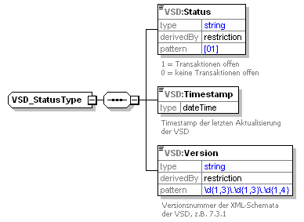

Elektronische Gesundheitskarte und Telematikinfrastruktur
Implementierungsleitfaden Primärsysteme – Telematikinfrastruktur (TI)
(einschließlich VSDM, QES-Basisdienste, KOM-LE)
| Version | 2.17.0 |
| Revision | 571633 |
| Stand | 28.11.2022 |
| Status | freigegeben |
| Klassifizierung | öffentlich |
| Referenzierung | gemILF_PS |
Änderungen zur Vorversion
Anpassungen des vorliegenden Dokumentes im Vergleich zur Vorversion können Sie der nachfolgenden Tabelle entnehmen.
Dokumentenhistorie
| Version |
Stand |
Kap./ Seite |
Grund der Änderung, besondere Hinweise |
Bearbeitung |
|---|---|---|---|---|
| 2.0.0 |
02.08.17 |
Initialversion für ORS2.1 |
gematik |
|
| 2.1.0 |
18.12.17 |
Einarbeitung Errata 1.6.4-2, P15.1 |
gematik |
|
| 2.2.0 |
14.05.18 |
Einarbeitung P15.2 und P15.4 |
gematik |
|
| 2.3.0 |
26.10.18 |
Einarbeitung P15.9 |
gematik |
|
| 2.4.0 | 15.05.19 | Einarbeitung P18.1 |
gematik |
|
| 2.5.0 | 02.10.19 | Einarbeitung P20.1/2 |
gematik |
|
| 2.6.0 | 02.03.20 | Einarbeitung P21.1 | gematik | |
| 2.6.1 | 18.09.20 | Einarbeitung P21.5 | gematik | |
| 2.6.2 | 05.11.20 | Einarbeitung P21.6 | gematik | |
| 2.7.0 | 30.06.20 | Einarbeitung P22.1 | gematik | |
| 2.8.0 | 12.10.20 | Einarbeitung Scope-Themen zu R4.0.1 | gematik | |
| 2.9.0 | 19.02.21 | Einarbeitung Änderungsliste 22.5 | gematik | |
| 2.10.0 | 07.04.21 | Einarbeitung Änderungsliste Konn_Maintenance_21.1 und Konn_Maintenance_21.2 | gematik | |
| 2.11.0 | 15.06.21 | 4.3.5 | Einarbeitung Erweiterung PKV | gematik |
| 2.12.0 | 30.06.21 | Einarbeitung gemF_gSMC-K_Laufzeitverlängerung und Konn_Maintenance_21.3 | gematik | |
| 2.13.0 | 02.09.21 | Einarbeitung Konn_Maintenance_21.5 | gematik | |
| 2.14.0 | 31.01.22 | Einarbeitung Konn_Maintenance_21.6 | gematik | |
| 2.15.0 | 02.05.22 | Einarbeitung Konn_Maintenance_22.1 (mit Ausbau der Änderungen aus gemF_gSMC-K_Laufzeitverlängerung) | gematik | |
| 2.16.0 | 30.06.22 | Einarbeitung Konn_Maintenance_22.2 | gematik | |
| 2.17.0 | 28.11.22 | Einarbeitung Konn_Maintenance_22.6 | gematik |
Das Dokument beschreibt die für die Implementierung des Versichertenstammdatenmanagements und der Basisdienste QES, Signatur und Verschlüsselung in Primärsysteme erforderlichen Vorgaben.
Der Implementierungsleitfaden beschreibt darüber hinaus die praktische Anwendung folgender Konzepte und Spezifikationen:
Die Kenntnis dieser Dokumente bzw. der entsprechend relevanten Teile wird als Arbeitsgrundlage für die Nutzung des vorliegenden Dokuments angenommen. Sie enthalten die normativen Vorgaben an die entsprechenden Komponenten.
Das Dokument richtet sich maßgeblich an Hersteller von Primärsystemen (Praxisverwaltungssysteme und Krankenhausinformationssysteme) von Leistungserbringern.
Die in diesem Dokument formulierten Anforderungen sind informativ für Primärsysteme, die am Produktivbetrieb der TI teilnehmen. Der Gültigkeitszeitraum der vorliegenden Version und deren Anwendung in Zulassungsverfahren wird durch die gematik GmbH in gesonderten Dokumenten (z. B. Dokumentenlandkarte, Produkttypsteckbrief, Leistungsbeschreibung) festgelegt und bekannt gegeben.
Alle Anforderungen zur Durchführung von Online-Prüfungen und -aktualisierungen sowie zur Übernahme von Prüfungsnachweisen gelten für Primärsysteme gemäß der Vorgaben für vertrags(zahn)ärztliche Leistungserbringer. Dies kann Psychotherapeuten betreffen, die in einem Arztregister eingetragen sind, betrifft jedoch nicht den stationären Bereich.
Die Anforderungen können für Implementierungsleitfäden bzw. Konformitätsprofile der Sektoren verwendet werden.
Schutzrechts-/Patentrechtshinweis:
Die nachfolgende Spezifikation ist von der gematik allein unter technischen Gesichtspunkten erstellt worden. Im Einzelfall kann nicht ausgeschlossen werden, dass die Implementierung der Spezifikation in technische Schutzrechte Dritter eingreift. Es ist allein Sache des Anbieters oder Herstellers, durch geeignete Maßnahmen dafür Sorge zu tragen, dass von ihm aufgrund der Spezifikation angebotene Produkte und/oder Leistungen nicht gegen Schutzrechte Dritter verstoßen und sich ggf. die erforderlichen Erlaubnisse/Lizenzen von den betroffenen Schutzrechtsinhabern einzuholen. Die gematik GmbH übernimmt insofern keinerlei Gewährleistungen.
Innerhalb dieses Dokuments wird auf die fachliche und technische Umsetzung in den Primärsystemen der Leistungserbringer eingegangen.
Für nicht an der vertragsärztlichen Versorgung teilnehmende Leistungserbringer (z. B. Krankenhaus, Apotheke) sind die Anforderungen zur VSDM-Online-Prüfung und -aktualisierung sowie zum Prüfungsnachweis informativ.
Festlegungen für interne Geschäftsprozesse der Leistungserbringer sind nicht Bestandteil dieses Dokuments.
Weiterhin werden keine Festlegungen zur Zuordnung von HBA zu Primärsystem und Mandant getroffen, d.h. Identitätsmanagement sowie Rollen- und Rechteverwaltung liegen in der Hoheit des Primärsystems.
Die Aufrüstung von BCS-Kartenterminals auf den Standard eHealth-KT ist nicht Gegenstand dieses Dokuments. Der Zugriff auf BCS-Terminals vom Primärsystem aus ist ebenfalls nicht Bestandteil dieses Dokument. Entsprechende Beschreibungen finden sich im Leitfaden aus dem Basis-Rollout [gemLF_Impl_eGK] in der Version 1.4.
Die Außenschnittstelle des Konnektors wird durch [gemSpec_Kon] abschließend spezifiziert.
Anforderungen als Ausdruck normativer Festlegungen werden durch eine eindeutige ID in eckigen Klammern sowie die dem RFC 2119 [RFC2119] entsprechenden, in Großbuchstaben geschriebenen deutschen Schlüsselworte MUSS, DARF NICHT, SOLL, SOLL NICHT, KANN gekennzeichnet.
Sie werden im Dokument wie folgt dargestellt:
<AFO-ID> - <Titel der Afo>
Text / Beschreibung
[<=]
Dabei umfasst die Anforderung sämtliche innerhalb der Afo-ID und der Textmarke angeführten Inhalte.
Die Darstellung der Anwendungsprozesse erfolgt prinzipiell auf der Grundlage der BPMN-Modellierung.
Die Darstellung der Versichertenstammdaten mittels Klassendiagramm erfolgt in UML.
Listing, Bezeichner, Variablen oder XML-Elemente werden in Courier dargestellt.
| Beispiele werden in Courier innerhalb einer Rahmenlinie dargestellt. Bei der Auswertung der (informativen) Beispiele ist zu beachten, dass die zugrundeliegenden XML-Schemadateien und WSDLs versioniert sind und einem Releasemanagement unterliegen. Eine Orientierung über die an der Konnektorschnittstelle zu verwendenden Schemaversionen und Namensräumen bietet [gemSpec_Kon#7AnhangD]. |
|---|
In diesem Dokument werden die Begriffe Clientsystem und Primärsystem synonym verwendet. Der Begriff Clientsystem umfasst streng genommen zusätzlich Systeme in Geschäftsstellen der Kostenträger, welche aber nicht behandelt werden.
Der Implementierungsleitfaden beschreibt die Nutzung der Schnittstellen der
Der PS-Hersteller kann sich über den Leistungsumfang des Konnektors und seine Produkttypversion (PTV_ATV_Festlegungen, Spezifikationen, Produkttypsteckbriefe, Schnittstellenversionen usw.) auf dem Fachportal der gematik informieren (https://fachportal.gematik.de/).
Auf der Grundlage der Spezifikationen der Fachanwendung VSDM und der Basis-TI beschreibt der Implementierungsleitfaden (ILF) die Nutzung von Komponenten und Schnittstellen der Telematikinfrastruktur durch Primärsysteme von Leistungserbringern im Rahmen des Wirkbetriebs der TI. Die zentralen Funktionen im Wirkbetrieb der TI sind die Fachanwendung des Versichertenstammdatenmanagements und der Basisdienste QES, Signatur und Verschlüsselung.
Das Primärsystem arbeitet als dezentrales System in der Umgebung des Leistungserbringers und kommuniziert über dezentrale Komponenten der TI (Konnektor) mit der Telematikinfrastruktur.
Abbildung 1: Primärsystem im Systemkontext
Mit Beginn des Online-Rollouts werden die Kartenterminals nicht mehr direkt durch das Primärsystem kontrolliert. Der Konnektor übernimmt die Kommunikation mit den Kartenterminals und den darin befindlichen Karten. Alle Sicherheitsleistungen werden vom Konnektor erbracht, so dass das Primärsystem nicht mehr direkt auf die Karten zugreift, sondern diese Aufgaben an den Konnektor delegiert.
Die Kommunikation zum Konnektor geschieht mittels SOAP an die vom Konnektor bereitgestellten Webservice-Schnittstellen. Ausnahmen hiervon bilden
Abbildung 2: Komponenten und Schnittstellen am Primärsystem
Abbildung 2: Komponenten und Schnittstellen am Primärsystem stellt die Komponenten und Schnittstellen abstrakt dar und verwendet keine formalen Namen von Schnittstellen. Die Verbindung in die TI ist stark vereinfacht und dient nur der Übersicht.
Das mobile Kartenterminal (mobKT) wird über eine seitens des Primärsystems bereits existierende Schnittstelle angesprochen (CT-API), was in der entsprechenden Spezifikation normativ beschrieben ist [gemSpec_MobKT]. Gegenstand dieses Dokuments sind die „neuen“ Schnittstellen des PS zum Konnektor. Die Schnittstelle zum mobilen Kartenterminal (mobKT) ist daher nicht Bestandteil dieses Dokuments und ist nur der Vollständigkeit halber dargestellt.
Im folgenden Diagramm und den nachfolgenden Tabellen werden die möglichen Konfigurationen in medizinischen Einrichtungen dargestellt.
Abbildung 3: Grober Überblick über Konfigurationseinheiten
Eine tabellarische Aufstellung der Beziehungen zwischen den Konfigurationseinheiten befindet sich im Anhang 9.1.2.
Für die Zuordnung zwischen Karten und Akteuren gelten folgenden Annahmen/Festlegungen
Mandantenfähige Primärsysteme sind in der Lage, eine strikte Datentrennung für die einzelnen Mandanten durchzusetzen. Der Konnektor unterstützt diese Mandantentrennung. Der Konnektor erlaubt dazu eine mandantenbezogene Zugriffsteuerung auf die Ressourcen, die er verwaltet. Im Kern verwaltet der Konnektor die Zugriffsteuerung auf kryptographische Identitäten der Karten.
Für jeden Mandanten lassen sich separate Zugriffsregeln im Konnektor konfigurieren. Ein wichtiger Aspekt ist dabei, welcher Mandant auf welche SM-B zugreifen darf, um mit ihr beispielsweise Dokumente zu signieren oder zu entschlüsseln.
Für die Zuordnung zwischen Kartenterminals und Mandanten gelten folgende Annahmen:
Wenn ein HSM-B anstelle einer SMC-B zum Einsatz kommt, verhält sich dieses aus Sicht des Primärsystems funktional wie eine SMC-B. Der Konnektor kapselt die funktionale Verwendung des HSM-B. Daher wird im Folgenden immer nur die SM-B angesprochen.
Außenstellen einer Praxis werden in diesem Dokument nicht gesondert betrachtet, da davon ausgegangen wird, dass die Außenstellen Bestandteile der Praxis sind (zusätzlicher Arbeitsplatz mit KT und z. B. VPN-Verbindung).
Die Fachmodule im Konnektor verwenden ausdifferenzierte Berechtigungsregeln zur Kontrolle der Zugriffe auf die medizinischen Daten der eGK. Die anwendungsspezifischen Implementierungsleitfäden machen hierzu detaillierte Vorgaben.
Auf Berufsgruppen bezogene Rollendefinitionen werden technisch in den Zugriffsregeln der SMC-Bs und HBA der jeweiligen Berufsgruppen abgebildet. Anhand dieser technischen Zugriffsregeln wird im Zuge der Card-to-Card-Authentisierung zwischen eGK einerseits und SMC-B bzw. HBA andererseits die Anwendung auf der eGK ggf. freigeschaltet.
Die Berechtigungen der SMC-Bs einer Berufsgruppe sind im Allgemeinen von den Berechtigungen der HBAs einer Berufsgruppe abgeleitet, weil Heilberufler ihre SMC-B selbst nutzen und sie auch ihre Gehilfen im Allgemeinen dafür autorisieren können, auf die Anwendungen der eGK mit den gleichen Rechten zuzugreifen.
Um in der Umgebung des Leistungserbringers die Online-Prüfung und -Aktualisierung durchzuführen, können grundsätzlich drei verschiedene Szenarien verwendet werden, die sich in der Konfiguration der Arbeitsplätze widerspiegeln.
Leistungserbringer, die ihr Primärsystem bzw. das lokale Netz nicht direkt über den Konnektor an die TI oder an das Internet anbinden wollen, können das Standalone-Szenario nutzen (siehe 3.2.2).
Nachfolgend werden die verschiedenen Szenarien dargestellt, wobei die Dienste nur schematisch und nicht streng zugeordnet zur TI dargestellt sind (beim Sicherheitsgateway eines Bestandnetzes (z. B. SNK) ist nur der Zugangspunkt Teil der TI).
Abbildung 4: Online-Szenario
Im Online-Szenario gemäß Abbildung 4 ist der Konnektor sowohl mit dem Praxisnetz als auch mit der TI, Bestandnetzen (z. B. SNK) sowie dem Secure Internet Service (SIS) verbunden (je nach Konfiguration). Alle Dienste stehen über sichere Verbindungen dem Clientsystem zur Verfügung. In der Minimalausprägung kommt nur ein Terminal am Empfang zum Einsatz, wobei der Arztarbeitsplatz ohne KT arbeiten kann, sofern entsprechende Funktionen nicht genutzt werden sollen (z. B. QES).
Abbildung 5: Standalone-Szenario mit physischer Trennung
Im Standalone-Szenario besteht keine Netzanbindung des Primärsystems an die Telematikinfrastruktur (TI). Es kommen ein zusätzlicher Konnektor und ein zusätzliches Kartenterminal zum Einsatz. Das Praxisnetz ist nicht mit dem Online-Konnektor resp. dem Internet oder Bestandnetzen (z. B. SNK) verbunden. Um die Online-Prüfung und -Aktualisierung der eGK durchzuführen, wird die eGK in das Kartenterminal am Online-Konnektor gesteckt. Die Online-Prüfung und -Aktualisierung wird daraufhin automatisch gestartet. Während der Durchführung werden dem Benutzer auf dem Display Hinweise zum Status und/oder Fehlermeldungen angezeigt (z. B. eGK gesperrt). Nach der Online-Prüfung und -Aktualisierung wird die eGK in ein am Offline-Konnektor angeschlossenes Kartenterminal gesteckt, welches standardmäßig einem Arbeitsplatz des Primärsystems zugeordnet ist, und die VSD inkl. Prüfungsnachweis werden übernommen. Der Ablauf erfolgt analog des in 4.3.4.2 beschriebenen Ablaufs.
Am Online-Konnektor ist der Betrieb eines „Kommunikations-PC“ (einzelner, nicht mit dem Praxisnetz verbundener PC) möglich, an dem – je nach Konnektorkonfiguration – alle Online-Funktionen genutzt werden können.
<PTV4>Das Standalone-Szenario verhindert die Nutzung der elektronischen Patientenakte. Daher ist bei Nutzung eines PTV4-Konnektors das Standalone-Szenario nicht zulässig.</PTV4>
Im Falle einer bereits vorhandenen Infrastruktur im dezentralen Bereich können die Produkte der TI, insbesondere der Konnektor, so in die Infrastruktur integriert werden, dass Bestandsanwendungen bereits erprobte Kommunikationswege weiter nutzen können.
Für die Clientsysteme muss in diesem Szenario je nach individuellem Anforderungsprofil entschieden werden, ob das jeweilige Clientsystem über die Telematikinfrastruktur kommunizieren können soll und den gesicherten Internetzugang (SIS) nutzen soll oder nicht.
Soll ein Clientsystem nicht über die Telematikinfrastruktur kommunizieren (Parallelbetrieb), bleibt der IAG als Default-Gateway dieses Clientsystems konfiguriert. In diesem Fall routet der IAG die eingehenden IP-Pakete mit öffentlichen Zieladressen weiter in das Internet.
Im Parallelbetrieb soll das Primärsystem einen DNS-Resolver integrieren, der Anfragen zu den Domänen *.splitdns.ti-dienste.de und *.telematik an den Konnektor sendet. Im Parallelbetrieb soll das Primärsystem für offene Fachdienste und WANDA Smart eine Weiterleitung für Zieladressen aus dem Adressbereich 100.102.0.0/15 durch Konfigurieren einer Route einrichten. Für die Referenzumgebung RU ist der Adressbereich mit 10.30.0.0/15 zu konfigurieren.
Im Parallelbetrieb soll das Primärsystem eine Liste von Telematikservern (z.B. Bestandsnetze, KIM-Fachdienste oder E-Rezept-Dienste) abrufen und für die dort enthaltenen Dienste Routen zum Konnektor auf dem Primärsystemrechner hinterlegen.
Hinweis: Der Downloadpunkt für Liste der Telematikserver wird noch festgelegt.
Der Konnektor hat keine eigene Benutzerverwaltung und vertraut der Benutzerverwaltung (Konfigurationsverwaltung) des Primärsystems (vgl. [gemKPT_Arch_TIP#4.2]).
In der Konfiguration des Primärsystems wird die Zuordnung zwischen Mandanten, Karten, Arbeitsplätzen und Kartenterminals verwaltet sowie die eindeutige Zuordnung zwischen Heilberuflern und ihren UserIDs.
Die Konfigurationsverwaltung des Primärsystems ermöglicht es einem Konnektor-Administrator, diese Parameter so in der Konnektorkonfiguration zu verwenden, dass sie der Konfiguration im Primärsystem entsprechen.
Der Konnektor benötigt von seinen Clientsystemen die Angabe des Kontextes, aus dem heraus die Aufrufe erfolgen, um Aufrufberechtigungen überprüfen zu können. Im Aufrufkontext von Funktionsaufrufen sind Angaben zu Mandant, Arbeitsplatz und Primärsystem verpflichtend, Identifikation des Benutzers ist optional (für bestimmte Aufrufe notwendig).
Abbildung 6: Abb_ILF_PS_Element_Context_gemäß_ConnectorContext.xsd
TIP1-A_4959-01
Innerhalb des Primärsystems MUSS eine Konfigurationsverwaltung vorhanden sein, welche die Parameter MandantId, ClientSystemId, WorkplaceId und UserId entsprechend Abb_ILF_PS_Element_Context_gemäß_ConnectorContext.xsd abbildet. Die Parameter sind vom Typ String und haben eine Maximallänge von 64 Zeichen. Die Parameter müssen konfigurierbar sein. <=
Die Parameter MandantId, ClientSystemId und WorkplaceId bilden das Datenelement Context, gemeinsam mit der optionalen und nur für den Zugriff auf den HBA in einigen Aufrufkontexten erforderlichen UserId.
Mandantenfähige Primärsysteme sollen Identifikatoren als MandantId verwenden, die ihrer internen Mandantenverwaltung entsprechen, falls vorhanden. Nicht jedem Mandant muss zwingend eine eigene, separate SM-B zugeordnet werden, vielmehr können mehrere Mandanten dieselbe SM-B verwenden. Die Leistungserbringerinstitution soll Mandanten gemäß ihrer Bedürfnisse konfigurieren. (vgl. auch Kapitel 4.2.3 und Kapitel 3.3.3). Die Konfigurationen der Kontextparameter am Primärsystem und am Konnektor müssen dabei identisch gestaltet werden. Die Parameter im Primärsystem müssen hierzu editierbar sein.
Nicht mandantenfähige Primärsysteme oder solche, in denen immer nur ein Mandant vorhanden ist, müssen die MandantId durchgängig auf einen festgelegten Wert setzen, welcher dem Wert in der Konnektorkonfiguration entspricht. Die Parameter im Primärsystem müssen hierzu editierbar sein.
Das Primärsystem einer LE-Umgebung muss einen Identifikator besitzen, der für Konnektoraufrufe als Primärsystem-Identifier (ClientSystemId) genutzt werden kann.
Jeder Arbeitsplatz innerhalb einer LE-Umgebung muss einen lokal eindeutigen Identifikator besitzen, der als WorkplaceId genutzt werden kann. Erfolgen Aufrufe des Primärsystems nicht direkt vom Arbeitsplatzsystem (im Sinne eines Rich Clients), sondern werden über eine Server-Komponente des Primärsystems geleitet (Thin Client, z. B. Web-Applikationen) muss der Server trotzdem eine Arbeitsplatz-ID des Aufrufers an den Konnektor übermitteln.
Die UserId ist eine eindeutige vom Primärsystem vergebene interne ID, die nur bei Zugriffen auf einen HBA erforderlich ist. Sie wird temporär im Konnektor gespeichert und einem HBA zugeordnet, wenn eine HBA-Kartensitzung in einen erhöhten Sicherheitszustand versetzt wird (PIN-Eingabe). Sie bleibt gespeichert und zugeordnet, solange die Kartensitzung gültig ist (i. d. R. solange der HBA gesteckt bleibt). Bei Zugriffen auf den HBA im weiteren Verlauf muss die bei der Eröffnung verwendete UserId im Kontext korrekt angegeben sein (z. B. Signatur oder Entschlüsselung). Das PS kann als UserID eine persistente interne Referenz eines Benutzers oder eine temporär generierte ID verwenden. Es muss sicherstellen, dass sie eindeutig ist und nicht mehrfach für verschiedene Benutzer verwendet wird. Ein Login-Name oder ein Klartextname sollten nicht verwendet werden.
TIP1-A_4960
Alle Arbeitsplätze eines Primärsystems, von denen aus der Konnektor genutzt wird, MÜSSEN den Konnektor mit einem für sie individuell eindeutigen Kontext aufrufen und dazu administrierbare Kontextinformationen verwenden.
<=
TIP1-A_4961
Wenn mehrere Kartenterminals und Karten in der Netzwerkumgebung des Primärsystems vorliegen, MÜSSEN Kartenterminals und Karten für Zugriffe durch einzelne Clientsystem-Arbeitsplätze selektiert werden.
<=
Mehrere Selektionsstrategien sind möglich:
Das Primärsystem sollte für Zugriffe auf TI-Komponenten von unterschiedlichen Arbeitsplätzen aus unabhängige Anfragen durchführen, ohne selbst zu versuchen, die Abarbeitung durch ein Pipelining zu steuern. Zeitgleiche Zugriffe durch unterschiedliche Clients auf dieselbe Smartcard werden vom Konnektor koordiniert und nach Vorgabe von [gemSpecPerf#4.1.2] in Hinsicht auf die Performance der Ressourcenzugriffe optimiert.
Für die Kartenzugriffe ReadVSD und SignDocument (QES) reserviert der Konnektor beteiligte Smartcards innerhalb der Anwendungsfälle, damit sich Anwendungsfälle bei der Nutzung der Kartenressourcen nicht gegenseitig stören.
In größeren LE-Umgebungen werden mehrere SMC-Bs oder Mandanten eingesetzt. Bei der Konfiguration des Infomodells des Konnektors sind durch den Dienstleister vor Ort per Administration persistent „Mandant“ für die vorgesehene Anzahl von Mandaten, „SM-B_Verwaltet“ sowie entsprechende Entitätenbeziehungen zwischen Mandant und SM-B aufzunehmen.
Im Normalfall ist ein LE-Institution gesamthaft einem SM-B zugeordnet. Es kann aber auch der Sonderfall von unterschiedlichen SM-Bs zugeordneten Teilen von LE-Institutionen auftreten.
A_15586
Für den Sonderfall, dass in einer LE-Institution mehrere SM-Bs für unterschiedliche Teile der Institution im Einsatz sind, MUSS das PS dem LE ermöglichen, die Zuordnung der SM-B zu Arbeitsplätzen und deren Kartenterminals an der Organisationsform der Institution zu orientieren. Wenn in einer LE-Umgebung mehrere SM-Bs unterschiedlich berechtigter Einheiten im Einsatz sind, müssen deren Arbeitsplätze jeweils deren SM-Bs zugeordnet werden. <=
<PTV3> Dadurch wird sichergestellt, dass für die Fachanwendungen KOM-LE die SMTP- bzw. POP3-Benutzernamen gemäß TabelleTab_ILF_PS_Bildungsregel_SMTP-POP3_Benutzername konfiguriert sind, so dass der KOM-LE-Client mit der korrekten SM-B arbeitet.</PTV3>
Die korrekte Konfiguration ist relevant für die Zugriffsprotokollierung auf der eGK. Die für den Zugriff auf die eGK selektierten SMC-B bzw. HBA werden auf dem Logfile der eGK gemäß [gemSpec_Karten_Fach_TIP#4.1] protokolliert. Neben der Art (VSDM, NFDM, eMP usw.) und dem Zeitpunkt des Zugriffs werden im Falle des Zugriffs mittels SM-B der commonName zum OSIG-Zertifikat (s. Tab_ILF_PS_SektorspezifischeBildungsregeln_Actor-Name_eGK-Log) und im Falle des Zugriffs über den HBA der Nachname (GN), gefolgt vom Vornamen (SN) aus dem AUT-Zertifikat des HBA protokolliert.
Tabelle 1: Tab_ILF_PS_SektorspezifischeBildungsregeln_Actor-Name_eGK-Log
| Sektor Herausgabe SM-B |
Befüllungsregel/Bildungsregel commonName |
|---|---|
| Ärzteschaft Psychotherapeutenschaft |
Erste zwei Zeilen der Anschriftenzone (DIN5008), somit „Kurzname“ der Institution, so wie für das Anschriftenfeld definiert. |
| Zahnärzteschaft |
„Zahnarztpraxis“ AntragstellerAkademischerGrad AntragstellerVorname AntragstellerNachname |
| Krankenhaus |
Name der Institution |
| Apothekerschaft |
Name der Apotheke |
Um bei der Verwendung mehrerer SMC-Bs oder Mandanten in einzelnen Leistungserbringerinstitutionen ein unnötiges häufiges Wechseln der auf die eGK zugreifenden SMC-B oder der Mandanten zu verhindern, sind nur spezielle Aspekte der Zugriffsprotokollierung bei der Konfiguration der Mandanten zu beachten.
Beachtet werden muss, dass die Einträge im Zugriffsprotokoll der eGK dem Versicherten Transparenz über die Verarbeitungsprozesse der eGK bieten sollen, so dass der Versicherte in den Zugriffsprotokollen der eGK die Institution wiedererkennen kann, die seine eGK freigeschaltet hat.
Andere Protokollierungsaspekte erfordern in Kontexten, in denen mehrere SMC-Bs im Einsatz sind, nicht einen Mandantenwechsel:
Falls am Primärsystem unterschiedliche Mandanten vorkonfiguriert werden, soll im laufenden Betrieb gegebenenfalls ein Mandantenwechsel durchführbar sein, bei dem ein anderer vorkonfigurierter und abgespeicherter Kontextparameter bzw. Aufrufkontext inklusive Mandant-ID für den Kartenzugriff genutzt wird. Eine Implementierung, die über ein User-Interface unterschiedliche Aufrufkontexte auswählbar macht, ist einer Implementierung vorzuziehen, bei der im laufenden Betrieb ein Kontext manuell umkonfiguriert werden muss.
Wenn in einer größeren Leistungserbringerinstitution mehrere separat voneinander konfigurierte Konnektoren eingesetzt werden sollen, muss das PS die Informationsmodelle der separaten Konnektoren inklusive der Mandantenkonfiguration in die eigene Arbeitsplatzkonfiguration integrieren können, um vom jeweiligen Arbeitsplatz aus einen passenden Konnektor ansteuern zu können. Die Exportschnittstelle des Informationsmodelles am Konnektor ist herstellerspezifisch.
Aufgrund der Ansteuerung von eHealth-Kartenterminals über die entsprechenden Konnektorschnittstellen ist mit dem Online-Produktivbetrieb eine direkte Ansteuerung von eHealth-BCS-Kartenterminals durch das Primärsystem obsolet und funktional unzureichend. Mithilfe von eHealth-BCS-Kartenterminals, die über eine CT-API-Schnittstelle am Primärsystem angebunden sind, lassen sich
Jedoch lassen sich in der Konfiguration des Basis-Rollouts mittels eHealth-BCS-Kartenterminals bis zum Zeitpunkt der Entfernung der GVD aus dem frei auslesbaren Bereich der eGK über die CT-API-Schnittstelle VSD aus dem ungeschützten Bereich der eGK auslesen.
Zur technischen Unterstützung eines Ersatzszenarios (z. B. bei einem temporären Ausfall des Konnektors) sollen Primärsysteme in der Übergangszeit, in der die GVD zusätzlich noch im frei auslesbaren Bereich der eGK enthalten sind, weiterhin konfigurativ die Anbindung von eHealth-BCS-Kartenterminals über CT-API-Schnittstelle unterstützen.
TIP1-A_6078
Zur Unterstützung eines Ersatzszenarios SOLL das Primärsystem dem Benutzer für einen Übergangszeitraum eine temporäre konfigurative Reaktivierung der Anbindung von eHealth-BCS-Kartenleser entsprechend dem Basis-Rollout ermöglichen und hierbei das Lesen von VSD Daten von der eGK entsprechend Basis-Rollout unterstützen. Der Übergangszeitraum endet mit der Entfernung der GVD aus dem frei auslesbaren Bereich der eGK.
<=
Primärsystem und Konnektor sind gemeinsam betriebsbereit, wenn
Um den Leistungsumfang des Wirkbetriebs der TI nutzen zu können, muss vom Primärsystem eine freigeschaltete SM-B verwendet werden. Dabei muss die Person, die den Konnektor in Betrieb nimmt, die PIN der SM-B eingeben und ggf. initialisieren.
Abbildung 7: Betriebsbereitschaft herstellen
Die Kommunikation zwischen Primärsystem und Konnektor basiert auf den Protokollen
Am Konnektor kann die Absicherung der Verbindung in 4 Stufen konfiguriert werden [gemSpec_Kon#3.4] – von keiner Absicherung in Stufe 1 bis zur vollständigen Absicherung im Stufe 4.
Die vier Konfigurationen wirken auf HTTP folgendermaßen (mit Konnektor als TLS-Server und Primärsystem als TLS-Client):
Tabelle 2: Tab_ILF_PS_Konfigurationsvarianten_HTTP
| Stufe 1 |
TLS deaktiviert. Verwendung von HTTP ohne Absicherung auf Transportebene |
|---|---|
| Stufe 2 |
TLS mit Server-Authentisierung ohne Client-Authentisierung. |
| Stufe 3 |
TLS mit Server-Authentisierung ohne Client-Authentisierung. HTTP mit Basic Authentication, d. h. Client-Authentisierung auf Ebene von http mit Username und Passwort. Das Primärsystem muss Username und Passwort für die Basic Authentication statisch konfigurieren, so dass eine Übereinstimmung mit der Konfiguration am Konnektor besteht. |
| Stufe 4 |
TLS mit Server-Authentisierung und Client Authentication. Die Client-Authentisierung muss mit den Zertifikaten erfolgen, die am Konnektor erzeugt wurden und vom Administrator in das Primärsystem importiert wurden oder mit konnektorfremden X.509-Zertifikaten der Primärsysteme, die über das Managementinterface in den Konnektor eingespielt wurden. |
Für die CETP-Verbindung (mit Primärsystem als TLS-Server und Konnektor als TLS-Client) gibt es zwei Konfigurationsvarianten:
Tabelle 3: Tab_ILF_PS_Konfigurationsvarianten_CETP
| Stufe 1 |
TLS deaktiviert. Verwendung von CETP ohne Absicherung auf Transportebene |
| Stufe 2 |
TLS mit Server-Authentisierung. Wenn das Primärsystem (TLS-Server) eine Authentisierung vom Konnektor im Rahmen des TLS-Verbindungsaufbaus anfordert, authentisiert sich der Konnektor, so dass eine beidseitig authentisierte Verbindung erreicht wird. |
Im speziellen Fall der Verwendung des LDAP-Proxies im Konnektor muss der Konnektor nur die Clientauthentisierung mit Zertifikat (Stufe 4 in der Tabelle Tab_ILF_PS_Konfigurationsvarianten_HTTP) verpflichtend unterstützen. Die Authentisierung mit Username/Passwort (Stufe 3 in der Tabelle Tab_ILF_PS_Konfigurationsvarianten_HTTP) bei LDAPS wird für den LDAP-Proxy im Konnektor nicht unterstützt.
Die Konfigurationsvarianten des Konnektors zur Absicherung der Verbindungen zwischen Konnektor und Primärsystem sind in [gemSpec_Kon#3.4] beschrieben.
TIP1-A_4962
Das Primärsystem SOLL die TLS-Authentisierungsmethoden der Stufen 2 oder 4 aus Tabelle Tab_ILF_PS_Konfigurationsvarianten_HTTP und Stufe 2 aus Tabelle Tab_ILF_PS_Konfigurationsvarianten_CETP verwenden, d. h. TLS mit Server-Authentisierung mit oder ohne Client-Authentisierung.
Der Konnektor kann nur noch in den Produkttypversionen 1 und 2 die TLS-Version 1.1 anbieten. Nur mit diesen Produkttypversionen kann das PS auch TLS-Version 1.1 verwenden. Ab der Konnektor-Produkttypversion 3 bietet der Konnektor TLS nur noch gemäß TLS-Version 1.2 oder 1.3 an. Ab PTV3 MUSS das PS für TLS-gesicherte Verbindungen mindestens TLS-Version 1.2 verwenden, es KANN auch TLS Version 1.3 verwenden. <=
Wenn der Konnektor so konfiguriert wird, dass TLS nicht erzwungen wird, bietet der Konnektor ggf. einen HTTP-Port an, sowie einen HTTPS-Port. Das Primärsystem kann den Konnektor in diesem Fall unter beiden Ports erreichen.
In seinem Dienstverzeichnisdienst stellt der Konnektor unter einer definierten URL in einem XML-Dokument („connector.sds“) die Liste aller Dienste, sowie deren Versionen und Endpunkte bereit, die vom Konnektor angeboten werden.
Es ist am Konnektor möglich, die Transportsicherung zum Dienstverzeichnisdienst des Konnektors anders zu konfigurieren als die Transportsicherung zu den restlichen Diensten.
TIP1-A_4963
Das Primärsystem SOLL in der Lage sein, den Service-Endpunkt des Konnektordienstverzeichnisdienstes mit einer Transportsicherungsmethode (TLS deaktiviert, HTTPS Basic Authentication oder HTTPS mit Client Authentication) anzusprechen, die sich ggf. von der Transportsicherungsmethode der weiteren Dienste unterscheidet.
<=Wie in 4.1.1 beschrieben soll das Primärsystem mindestens eine von drei verfügbaren Methoden zur Absicherung der Verbindung des Primärsystems zum Konnektor unterstützen.
a.) Für die Basic Authentication (auch „Basic Access Authentication“, ein Standard der HTTP-Authentifizierung) soll dabei das Primärsystem die notwendigen Parameter „Benutzername“ und „Passwort“ verwalten. Das Primärsystem muss über zwei entsprechende Konfigurationsparameter verfügen, die sich über die Systemkonfiguration des PS eingeben bzw. verändern lassen. Wird als Authentisierungsmethode Basic Authentication vereinbart, müssen hier die gleichen Werte für Benutzername und Passwort eingegeben sein, wie in der Managementschnittstelle des Konnektors.
Zwei weitere Alternativen können dazu genutzt werden, den TLS-Kanal zwischen Konnektor und Clientsystem durch X.509-Clientauthentisierung abzusichern:
b.) Für die zertifikatsbasierte Client Authentication (mittels konnektoreigenen Zertifikaten) wird im Konnektor ein Zertifikat sowie ein privater Schlüssel erzeugt und exportiert. Es liegt als standardisiertes Format (p12) [PKCS#12] vor, wobei der Schlüsselspeicher durch eine PIN geschützt ist.
Am Konnektor-Managementinterface erzeugte und von dort exportierte Clientzertifikate ([gemSpec_Kon#3.4], TIP1-A_4517) werden in die Clientsysteme importiert. Das PS importiert und verwaltet das Client-Zertifikat aus der p12-Datei. Dazu muss während des Import-Vorgangs die PIN des Zertifikats eingegeben werden (Transportsicherung). Anschließend hat das Primärsystem Zugriff auf den für den TLS-Verbindungsaufbau benötigten privaten Schlüssel.
c.) Für die zertifikatsbasierte Client Authentication (mittels konnektorfremden Zertifikaten) werden konnektorfremde X.509-Zertifikaten der Clientsysteme über das Managementinterface in den Konnektor eingespielt.
Das Primärsystem nutzt einen Systemschlüsselspeicher, z. B. den Zertifikatsspeicher von Windows oder den des Java JRE. Auch hier ist für den Import-Vorgang ein Passwort des Schlüsselspeichers einzugeben. Anschließend stehen das Zertifikat und der Schlüssel über entsprechende Systemfunktionen/Bibliotheken zur Verfügung. Idealerweise kann der Administrator des PS in diesem Zertifikatsspeicher „browsen“ und das gewünschte Zertifikat für die Verwendung auswählen. Alternativ kann in der PS-Konfiguration eine eindeutige Referenz des Zertifikats (Name oder Index) eingegeben werden.
Primärsysteme fungieren bei der Verwendung von TLS als TLS-Client und auch als TLS-Server gegenüber dem Konnektor. Das TLS-Protokoll sieht die parallele Unterstützung verschiedener kryptografischer Verfahren vor.
Die Verwendung dieser kryptografischen Verfahren in einer LE-Institution richtet sich je nach Fähigkeit der dort konkret eingesetzten Kommunikationspartner (Primärsystem, Konnektor) und wird zwischen ihnen ausgehandelt und ggf. je nach Konfiguration priorisiert.
<PTV4> Ein Konnektor KANN für den Aufbau der TLS-Verbindung zum Primärsystem Verfahren auf Basis von ECC verwenden. Bei Verwendung geeigneter Standardimplementierungen kann der Entwicklungsaufwand für die Unterstützung elliptischer Kurven (Elliptic Curve Cryptography, im Folgenden kurz "ECC") relativ gering sein und womöglich sogar ausschließlich durch Konfigurationsänderungen in Standardimplementierungen ohne Anpassungen am Primärsystem umsetzbar sein. Standardimplementierungen sehen insbesondere eine parallele Unterstützung von RSA-2048 und ECC-256 gemäß [gemSpec_Krypt#5.4 und 5.5] vor, wobei NIST-Kurven verwendet werden dürfen. </PTV4>
<PTV5> Ein Konnektor MUSS für den Aufbau der TLS-Verbindung zum Primärsystem Verfahren auf Basis von ECC verwenden. Bei Verwendung geeigneter Standardimplementierungen kann der Entwicklungsaufwand für die Unterstützung elliptischer Kurven (Elliptic Curve Cryptography, im Folgenden kurz "ECC") relativ gering sein und womöglich sogar ausschließlich durch Konfigurationsänderungen in Standardimplementierungen ohne Anpassungen am Primärsystem umsetzbar sein. Standardimplementierungen sehen insbesondere eine parallele Unterstützung von RSA-2048 und ECC-256 gemäß [gemSpec_Krypt#5.4 und 5.5] vor, wobei NIST-Kurven verwendet werden dürfen. </PTV5>
Der Konnektor verwendet als TLS-Server-Zertifikat die auf der gSMC-K gespeicherte Identität ID.AK.AUT. Der CommonName dieses Zertifikats ist mit der ICCSN und dem Herausgabedatum befüllt und nicht dem Hostnamen des Konnektors. Eine optional durchzuführende Hostnamenprüfung durch das Primärsystem kann daher ggf. nur daraufhin erfolgen, ob der Konnektor in der LEI unter dem in Subject.AltNames festgelegten DNSName="konnektor.konlan" erreichbar ist.
</PTV5>Der Konnektor kann intern oder extern generierte Identitäten als TLS-Server-Zertifikat verwenden. Der Administrator hat zwei Möglichkeiten, die ID.AK.AUT für die Authentisierung gegenüber den Clientsystemen zu ersetzen:
Der CommonName dieser Zertifikate kann mit einem frei wählbaren Hostnamen des Konnektors befüllt werden. Eine optional durchzuführende Hostnamenprüfung durch das Primärsystem kann dann vollumfänglich erfolgen.
Der Zeitpunkt der Verwendung von generierten oder importierten Zertifikaten kann vom Administrator frei gewählt werden und ist unabhängig vom Zeitpunkt der Generierung oder des Imports. Der Administrator kann jederzeit zwischen der Verwendung von generierten oder importierten Zertifikaten der gSMC-K hin- und herschalten.</PTV5>
Für eine Prüfung des TLS-Server-Zertifikates des Konnektors durch das Primärsystem sind verschiedene auch kombinierbare Umsetzungsvarianten möglich.
<PTV5>Die Prüfung der generierten oder importierten Zertifikate durch das Primärsystem kann nicht gegen die TI-TSL oder die TI-Komponenten-CA-Zertifikate erfolgen, da es sich um rein lokale Identitäten außerhalb des TI-Vertrauensraums handelt.</PTV5>
Variante Prüfung gegen TI-Komponenten-SubCAs
Im Falle einer Prüfung der TLS-Server-Zertifikate des Konnektors gegen die produktive Komponenten-SubCA der TI (z.B. am PS gespeichert in einer PEM-Datei) ist der Lebenszyklus der in der TSL veröffentlichten TI- Komponenten-SubCA zu beachten. Die SubCA ist 8 Jahre gültig und wird über diesen Zeitraum in der TSL veröffentlicht. Nach spätestens drei Jahren werden jedoch End-Entity-Komponenten-Zertifikate von einer neu hinzugefügten SubCA abgeleitet, damit diese noch 5 Jahre gültig sind. Das PS muss also damit rechnen, TLS-Server-Zertifikate von Konnektoren gegen mindestens drei produktive SubCAs validieren zu können, weil es im Feld End-Entity-Konnektorzertifikate geben kann, die aus unterschiedlichen SubCAs abgeleitet sind. Am Laufzeitende einer TI-Komponenten-SubCA verliert diese ihre Gültigkeit und wird aus der TSL entfernt. Die aktuelle TSL ist unter https://download.tsl.ti-dienste.de/ verfügbar.
Darin befinden sich Zertifikate mit dem Namen GEM.KOMP-CA*, also z.B. GEM.KOMP-CA1, GEM.KOMP-CA3, o.ä. Diese Zertifikate sind auch separat im Verzeichnis https://download.tsl.ti-dienste.de/ verfügbar, um sie als Trusted CA in der LE-Umgebung zu verwalten.
<PTV4> Parallel dazu wird für die Einführung von elliptischen Kurven eine zweite TSL () sowie entsprechende ECC verwendende Komponenten-CA-Zertifikate () von der gematik zur Verfügung gestellt. Diese neue TSL beruht auf ECC als kryptografisches Verfahren, enthält jedoch zusätzlich alle für den parallelen Einsatz von RSA und ECC erforderlichen RSA-Anteile. </PTV4>
<PTV5>Die Verwendung des ECC-Zertifikats der gSMC-K muss in der Administrationsoberfläche des Konnektors eingeschaltet werden. Dieses sollte erst erfolgen, wenn die ECC-basierten Zertifikate den Primärsystemen bekannt gemacht wurden.</PTV4>
Variante Etablierung Vertrauensbeziehung zwischen Konnektor und PS
Falls ein Administrator am Primärsystem das TLS-Server-Zertifikat des Konnektors im Rahmen der Inbetriebnahme des Konnektors dem Zertifikatsspeicher des lokalen PS-Rechners hinzufügen will (zur Etablierung einer Vertrauensbeziehung zwischen einer Konnektor-Instanz und einer PS-Instanz in einer einzelnen LE-Umgebung), wird an PS-Arbeitsplätzen das Konnektor-TLS-Server-Zertifikat beim ersten TLS-Handshake mit dem Konnektor einmalig akzeptiert und vom Primärsystem-Arbeitsplatz persistent gespeichert, um die gesamte nachfolgende TLS-Kommunikation zwischen PS und Konnektor abzusichern (so wie an einem Browser eine Ausnahmeregelung für CAs einer Webseite gespeichert werden kann).
Das Konnektor-TLS-Server-Zertifikat muss im Falle der Etablierung der Vertrauensbeziehung zwischen Konnektor und Primärsystem-Arbeitsplatz nicht durch das Primärsystem gegen die Komponenten-SubCAs aus der TSL geprüft werden. Im Falle eines Konnektorwechsels muss dieses Pairing mit dem neuen Konnektor erneut durchgeführt werden. Beim Austausch konnektoreigener Zertifikate, z. B. im Zuge eines Wechsels der TLS-Server-Zertifikate des Konnektors <PTV4>aufgrund der Umstellung auf Zertifikate, die ECC verwenden,</PTV4> muss die Vertrauensbeziehung erneut mit den neu erstellten End-Entity-Zertifikaten hergestellt werden.
<PTV5>Falls ein Administrator ein konnektorextern generiertes und in den Konnektor importiertes Zertifikat, ein im Konnektor generiertes Zertifikat oder die ID.AK.AUT für die Server-Authentisierung verwendet, so ist das Zertifikat am Primärsystem entweder bereits bekannt (z.B. durch die Verwendung einer PKI), oder es wird im Rahmen der Inbetriebnahme des Konnektors dem Zertifikatsspeicher des lokalen PS-Rechners wie oben beschrieben hinzugefügt.</PTV5>
<PTV5>Die Verwendung des ECC-Zertifikats der gSMC-K muss in der Administrationsoberfläche des Konnektors eingeschaltet werden. Dieses sollte erst erfolgen, wenn dieses ECC-Zertifikat im Primärsystem als vertrauenswürdig hinterlegt wurde.</PTV5>
Aus der Konnektordokumentation des Herstellers ist die URL zu entnehmen, unter dem der Konnektor sein Dienstverzeichnis anbietet. Innerhalb der URL können Hostname und Domain-Name je nach Konfiguration der LE-Umgebung individuell konfiguriert sein. In diesem Falle muss die URL entsprechend in der Primärsystemkonfiguration angepasst werden.
Beispiel #: URL des Konnektordienstverzeichnisses
| http://KON_HOSTNAME/connector.sds |
|---|
Dieser Parameter muss in der Primärsystemkonfiguration erfasst werden.
Durch das Auslesen des Dienstverzeichnisdienstes erhält das Primärsystem Webservice-Endpunkte von versionierten Diensten des Konnektors.
TIP1-A_4967
Das Primärsystem MUSS die Endpunkte der Services, die der Konnektor anbietet, aus dem Dienstverzeichnisdienst initial unter einem FQDN ermitteln, der im Primärsystem konfiguriert ist, und die Endpunktinformationen der Dienste lokal cachen. Wenn ein Verbindungsproblem auftritt (Dienst nicht erreichbar), muss das Primärsystem einen Refresh auf alle Endpunktinformationen des Dienstverzeichnisdienstes durchführen.
<=
TIP1-A_4968
Zum Aufbau eines lokalen Dienstverzeichnis-Cache MUSS das Primärsystem das Dienstverzeichnis des Konnektors mittels http(s) vom Konnektor unter der konfigurierten URL auslesen. Werden die benötigten Dienste nicht in den Versionen gefunden, die das Primärsystem erwartet, muss dies mit einer aussagekräftigen Fehlermeldung dem Benutzer bei der Anmeldung angezeigt werden.
<=
Beispiel #: Dienstkonfiguration
| <?xml version="1.0" encoding="UTF-8" ?> -<CONN:ConnectorServices xsi:schemaLocation="http://ws.gematik.de/conn/ServiceDirectory/v3.0 ../conn/ServiceDirectory.xsd" xmlns:VERS="http://ws.gematik.de/int/version/ProductInformation/v1.0" xmlns:CONN="http://ws.gematik.de/conn/ServiceDirectory/v3.0" xmlns:SI="http://ws.gematik.de/conn/ServiceInformation/v2.0" xmlns:xsi="http://www.w3.org/2001/XMLSchema-instance"> + <PI:ProductInformation> <CONN:TLSMandatory>true</CONN:TLSMandatory> <CONN: ClientAutMandatory>true</CONN:ClientAutMandatory> - <SI:ServiceInformation> - <SI:Service Name="VSDService"> <SI:Abstract>VSD von eGK lesen</SI:Abstract> <SI:Versions> <SI:Version TargetNamespace="http://ws.gematik.de/conn/vsds/ VSDService/v6.0" Version="6.0"> <SI:Abstract>VSD von eGK lesen Version 6.0</SI:Abstract> <SI:Endpoint Location="https://KON_HOSTNAME/services/readVSD"/> <SI:WSDL Location="https://KON_HOSTNAME/services/wsdl/VSDService.wsdl"/> </SI:Version> </SI:Versions> + <SI:Service Name="KVKService"> + <SI:Service Name="EventService"> + <SI:Service Name="CardService"> + <SI:Service Name="SignatureService"> </SI:ServiceInformation> </CONN:ConnectorServices> |
|---|
Das Listing zeigt eine beispielhafte Dienstkonfiguration, wobei nur für den ersten Dienst die oberste Ebene dargestellt (aufgeklappt) ist. Für den Dienst ReadVSD sind neben einer Kurzbeschreibung eine versionsabhängige Beschreibung und die Endpunkte für die Schnittstellenbeschreibung (WSDL) und die Kommunikation zu entnehmen. Je nach Sicherheitskonfiguration des Konnektors kann dabei ein Protokoll für verschlüsselte (https) oder unverschlüsselte Kommunikation vorgegeben werden. Ebenso kann der Port von den http-/https-Standardports abweichen.
A_18468
Das PS MUSS an geeigneter Stelle dem Nutzer die Firmwareversion des Konnektors anzeigen, der an das PS angebunden ist. Die Konnektorversion wird über den Dienstverzeichnisdienst ausgelesen. Zur Anzeige kommen dabei die DVD-Informationen ProductVendorName, ProductName und ProductVersion/Local/FWVersion. <=
Die vollständigen Schemadefinitionen des XML-Dokuments „connector.sds“ finden sich gemäß [gemSpec_Kon#4.1.3.1] in den Dateien ServiceDirectory.xsd, ProductInformation.xsd und ServiceInformation.xsd.
Da nicht davon ausgegangen werden kann, dass die Inhalte des Dienstverzeichnisdienstes statisch sind, sollte das Lesen des Verzeichnisses beim Programmstart, in Fehlersituationen (Verbindungsprobleme, Dienst nicht erreichbar) und nach Bootup des Konnektors erfolgen, um den Dienstverzeichnis-Cache zu erneuern. Die weitere Kommunikation mit den Diensten des Konnektors erfolgt dann über die im Dienstverzeichnisdienst propagierten Dienstendpunkte.
TIP1-A_4964
Das Primärsystem MUSS die Schnittstellen des Konnektors über eine Webservice-Schnittstelle auf Basis von SOAP nutzen ([WSDL1.1] und [BasicProfile1.2]). Das Primärsystem MUSS ausschließlich das Character Encoding UTF-8 verwenden.
<=
Das Primärsystem MUSS den Request in UTF-8 kodieren. Diese Festlegungen gelten nur für die eigentliche SOAP-Nachricht. Sind in der SOAP-Nachricht base64-encodierte XML-Elemente vorhanden, so können diese XML-Elemente andere Zeichencodierungen aufweisen. Falls in der SOAP-Nachricht base64-encodierte (verschlüsselte) XML-Elemente vorhanden sind, können diese XML-Elemente andere Zeichenkodierungen als UTF-8 aufweisen.
TIP1-A_4965
Zu den Diensten, die der Konnektor laut Dienstverzeichnisdienst anbietet, MUSS das Primärsystem die Operationen und Parameter des Dienstes verwenden, wie sie in den zugehörigen Schemadateien (WSDLs, XSDs sowie den Schnittstellenbeschreibungen der Konnektorspezifikation) festgelegt sind.
<=
Die Dienste des Konnektors sind versioniert. Es ist möglich, dass ein Konnektor mehrere Versionen eines Dienstes gleichzeitig anbietet. Die Versionierung der Dienste hilft dem Primärsystem dabei, genau die Dienstversionen zu nutzen, die es client-seitig implementiert hat.
TIP1-A_4966
Das Primärsystem MUSS in der Lage sein, die von ihm unterstützte Dienstversion unter mehreren vom Konnektor angebotenen Dienstschnittstellen auszuwählen.
<=
Die Konnektor-Schnittstellen haben eine dreistellige Versionsnummer mit einer Hauptversionsnummer (1. Stelle), Nebenversionsnummer (2. Stelle) und einer Revisionsnummer (3. Stelle). Wenn das Primärsystem am Konnektor eine Schnittstelle aufruft, muss dieses in Hauptversionsnummer und Nebenversionsnummer mit seiner Implementierung übereinstimmen, während sich die Revisionsnummer unterscheiden darf. Bezüglich einer abweichenden Revisionsnummer können folgende Konstellationen auftreten:
Trifft das PS auf einen DVD, in dem u.a. Dienstversionen vorliegen, die in der Haupt- oder Nebenversionsnummer von der Erwartung des Primärsystems abweichen, so muss das PS nach Möglichkeit eine Version auswählen, die es unterstützt.
Gemäß den Schnittstellenvorgaben erfolgt die SOAP-Kommunikation über http oder https.
Beispiel #: HTTP-SOAP-Header
| <?xml version="1.0" encoding="UTF-8" ?> -<CONN:ConnectorServices xsi:schemaLocation="http://ws.gematik.de/conn/ServiceDirectory/v3.0 ../conn/ServiceDirectory.xsd" xmlns:VERS="http://ws.gematik.de/int/version/ProductInformation/v1.0" xmlns:CONN="http://ws.gematik.de/conn/ServiceDirectory/v3.0" xmlns:SI="http://ws.gematik.de/conn/ServiceInformation/v2.0" xmlns:xsi="http://www.w3.org/2001/XMLSchema-instance"> + <PI:ProductInformation> <CONN:TLSMandatory>true</CONN:TLSMandatory> <CONN: ClientAutMandatory>true</CONN:ClientAutMandatory> - <SI:ServiceInformation> - <SI:Service Name="VSDService"> <SI:Abstract>VSD von eGK lesen</SI:Abstract> <SI:Versions> <SI:Version TargetNamespace="http://ws.gematik.de/conn/vsds/VSDService/v6.0 Version="6.0"> <SI:Abstract>VSD von eGK lesen Version 6.0</SI:Abstract> <SI:Endpoint Location="https://KON_HOSTNAME/services/readVSD"/> <SI:WSDL Location="https://KON_HOSTNAME/services/wsdl/VSDService.wsdl"/> </SI:Version> </SI:Versions> + <SI:Service Name="KVKService"> + <SI:Service Name="EventService"> + <SI:Service Name="CardService"> + <SI:Service Name="SignatureService"> </SI:ServiceInformation> </CONN:ConnectorServices> |
|---|
Das Primärsystem kann den Ereignisdienst als Basisanwendung des Systeminformationsdienstes (EventService) des Konnektors nutzen, um über konnektorspezifische Ereignisse zeitnah in einem Push-Mechanismus informiert zu werden. Die dabei an das Primärsystem zurückgegebenen Informationen können vom Primärsystem zu folgenden Zwecken genutzt werden:
Neben den eigentlichen Operationen für das Verarbeiten von Ereignissen (siehe 4.1.4.1) stellt der EventService auch Operationen zum Zugriff auf Ressourcen und Abfragen verfügbarer Karten und Kartenterminals bereit (siehe 4.2.1). Details finden sich in den WSDL- und XSD-Dateien zur entsprechenden Service-Schnittstelle EventService.wsdl und EventService.xsd.
Der Ereignisdienst des Systeminformationsdienstes nutzt das leichtgewichtige proprietäre Protokoll CETP (Connector Event Transport Protocol), das das Abonnieren bestimmter Ereignistypen (Topics) durch das Primärsystem erfordert, siehe [gemSpec_Kon#4.1.6].
TIP1-A_4969
Die Nutzung des Ereignisdienstes durch das Primärsystem MUSS nach Vorgaben von [gemSpec_Kon#4.1.6] und den dort referenzierten Schemadateien erfolgen.
<=
Abbildung 8: PIC_KON_022 Grundsätzlicher Aufbau der Ereignisnachricht
Abbildung 9: XML-Element Event
Beispiel #: Vollständigen Ereignisstruktur einer CETP-Event-Nachricht
| <?xml version="1.0" encoding="UTF-8"?> <EVT:Event xsi:schemaLocation="http://ws.gematik.de/conn/EventService/v7.0 ../conn/EventService.xsd" xmlns:EVT="http://ws.gematik.de/conn/EventService/v7.0" xmlns:xsi="http://www.w3.org/2001/XMLSchema-instance"> <EVT:Topic>Card/Inserted</EVT:Topic> <EVT:Type>Operation</EVT:Type> <EVT:Severity>Info</EVT:Severity> <EVT:SubscriptionID>subwpid007.01</EVT:SubscriptionID> <EVT:Message> <EVT:Parameter> <EVT:Key>CardHandle</EVT:Key> <EVT:Value>c123456789123456789</EVT:Value> </EVT:Parameter> <EVT:Parameter> <EVT:Key>CardType</EVT:Key> <EVT:Value>EGK</EVT:Value> <!--z.B. EGK|HBA-qSIG|HBA|SMC-B|HSM-B|SMC-KT|KVK|ZOD_2.0|UNKNOWN--> </EVT:Parameter> <EVT:Parameter> <EVT:Key>CardVersion</EVT:Key> <EVT:Value>2.2.1</EVT:Value> <!--Version bei eGK,HBAx,SMC-KT,SM-B aus [gemProdT_eGK]--> </EVT:Parameter> <EVT:Parameter> <EVT:Key>ICCSN</EVT:Key> <EVT:Value>8027612345123456781</EVT:Value> </EVT:Parameter> <EVT:Parameter> <EVT:Key>CtID</EVT:Key> <EVT:Value>101</EVT:Value> </EVT:Parameter> <EVT:Parameter> <EVT:Key>SlotID</EVT:Key> <EVT:Value>101</EVT:Value> </EVT:Parameter> <EVT:Parameter> <EVT:Key>InsertTime</EVT:Key> <EVT:Value>2017-12-01T10:08:44:20</EVT:Value> </EVT:Parameter> <EVT:Parameter> <EVT:Key>CardHolderName</EVT:Key> <EVT:Value>Muster</EVT:Value> </EVT:Parameter> <EVT:Parameter> <EVT:Key>KVNR</EVT:Key> <EVT:Value>A123456789</EVT:Value> <!--10-stellige unveränderliche Versichertennummer / Versicherten_ID--> </EVT:Parameter> </EVT:Message> </EVT:Event> |
|---|
Das Attribut Filter des Elements Topic ist nicht angegeben, da es optional und nur beim Abonnieren von Ereignissen zu verwenden ist (siehe folgender Abschnitt).
Für die Umsetzung des Ereignisdienstes auf Primärsystemseite ist – abhängig von Architektur und eingesetzter Technologie – zu entscheiden, ob ein solcher Dienst im Primärsystem (server-seitig) einmalig oder auf jedem Arbeitsplatz (client-seitig) bereitgestellt wird.
Sonderfall CardType=UNKNOWN
Wird durch den Benutzer eine Karte gesteckt, die durch den Konnektor nicht korrekt identifiziert und gelesen werden kann (falsche Karte, Karte falsch gesteckt, Karte defekt), meldet der Konnektor dies durch das Ereignis CARD/INSERTED mit dem speziellen Kartentyp UNKNOWN. Das Primärsystem sollte eine entsprechende Meldung ausgeben und den Benutzer ggf. zur Korrektur auffordern.
Zum Abonnieren von Topics stellt der Konnektor die Funktionen Subscribe, Unsubscribe und GetSubscription zur Verfügung. Beim Abonnieren von Topics lassen sich Filter auf Ereignisse setzen, wobei sich mittels XPath-Ausdrücken Ereignisse über Typ und Severity filtern lassen. Alternativ können auch alle Ereignisse abonniert werden. In diesem Fall muss das Primärsystem bei jedem Empfang einer Ereignisnachricht entscheiden, ob und wie diese zu verarbeiten ist.
Wenn es eine Vielzahl von Kartenterminals gibt, die im Netzwerk registriert sind, kann der Fall eintreten, dass mehrere Karten gleichzeitig gesteckt sind. Mit Hilfe selektierender Informationen lassen sich Kartenzugriffe auf die Karten einschränken, die genutzt werden sollen. Die selektierenden Informationen können aus dem Ereignisdienst bezogen werden und helfen dabei, CardHandles zu erlangen, mit denen Kartenzugriffe realisiert bzw. Kartensitzungen aufgebaut werden können.
Ereignisse können gezielt abonniert werden, so dass einzelne Arbeitsplätze nur Ereignisinformationen erhalten, welche die Steckung von Karten in Kartenterminals betreffen, die ihnen zugeordnet sind.
Eine Reihe von Informationen über den Status von Karten können unmittelbar zum Zeitpunkt des Steckens einer Karte zur Verfügung gestellt werden, insbesondere die Kartenterminal-ID, an dem aktuell eine Karte gesteckt ist.
TIP1-A_4970
Das Primärsystem SOLL den Ereignisdienst dazu nutzen, zum Ereigniszeitpunkt Karteninformationen weiterzuverarbeiten und den Nutzern anwenderfreundlich zur Verfügung zu stellen.
<=
Abbildung 10: Struktur des Elements Subscribe
Tabelle 4: Tab_ILF_PS_Wichtige_Topics_für_Kartenereignisse
| Name |
Key/Value im Element Message |
Auslöser |
|---|---|---|
|
CARD/INSERTED
|
CardHandle =$CARD.CARDHANDLE; CardType =$CARD.TYP; CardVersion =$CARD.VER; ICCSN =$CARD.ICCSN CtID =$CARD.CTID SlotID =$CARD.SLOTID InsertTime =$CARD.INSERTTIME CardHolderName=$CARD.CARDHOLDERNAME KVNR =$CARD.KVNR“ |
Ereignis des Steckens einer Karte |
| CARD/REMOVED |
Entfernen einer Karte aus dem KT |
Eine vollständige Übersicht der vom Konnektor erzeugten Ereignisse mit den dazugehörigen Key/Value-Parametern findet sich in [gemSpec_Kon#8 AnhangF].
Die Ereignisse, die durch Fachmodul VSDM erzeugt und über den Konnektor übermittelt werden, finden sich in 4.3.4.4.
Beispiel #: SOAP-Request einer Subscription
| <?xml version="1.0" encoding="UTF-8"?> <SOAP-ENV:Envelope xmlns:SOAP-ENV="http://schemas.xmlsoap.org/soap/envelope/" xmlns:SOAP-ENC="http://schemas.xmlsoap.org/soap/encoding/" xmlns:xsi="http://www.w3.org/2001/XMLSchema-instance" xmlns:xsd="http://www.w3.org/2001/XMLSchema"> <SOAP-ENV:Body> <m:Subscribe xmlns:m="http://ws.gematik.de/conn/EventService/v7.0" xmlns:m0="http://ws.gematik.de/conn/ConnectorContext/v2.0" xmlns:m1="http://ws.gematik.de/conn/ConnectorCommon/v5.0" xsi:schemaLocation="http://ws.gematik.de/conn/EventService/v7.0 ../conn/EventService.xsd http://ws.gematik.de/conn/ConnectorContext/v2.0 ../conn/ConnectorContext.xsd http://ws.gematik.de/conn/ConnectorCommon/v5.0 ../conn/ConnectorCommmon.xsd"> <m0:Context> <m1:MandantId>m0001</m1:MandantId> <m1:ClientSystemId>csid0001</m1:ClientSystemId> <m1:WorkplaceId>wpid007</m1:WorkplaceId> </m0:Context> <m:Subscription> <m:EventTo>cetp://ap007.local:20000</m:EventTo> <m:Topic>CARD/INSERTED/</m:Topic> <m:Filter>/EVT:Event/EVT:Message/EVT:Parameter[EVT:Key="CtID" and EVT:Value="101" and ../EVT:Parameter[EVT:Key="CardType" and EVT:Value="EGK"] and ../../EVT:Severity="Info"]</m:Filter> </m:Subscription> </m:Subscribe> </SOAP-ENV:Body> </SOAP-ENV:Envelope> |
|---|
Im obigen Beispiel werden Ereignisse des Typs CARD/INSERTED abonniert. Es findet dabei zusätzlich ein XPath-Ausdruck als Filter Anwendung, der nur Ereignisse liefert, die sich auf das Kartenterminal mit der Nummer 101 (CtID=101), auf den Kartentyp EGK beziehen (CardType=EGK) sowie Severity=Info (normale Verarbeitung). Das Beispielereignis CARD/INSERTED aus 4.1.4.1 würde damit an cetp://ap007.local:20000 zugestellt werden.
Alternativ kann der Filter im obigen Beispiel auch so geschrieben werden:
<m:Filter>
/Event/Message/Parameter[Key="CtID" and Value="101" and ../Parameter[Key="CardType" and Value="EGK"] and ../../Severity="Info"] </m:Filter>
Informationen über den Status bzw. Statusänderungen des Konnektors können durch den Ereignisdienst aktuell zur Verfügung gestellt werden, insbesondere zur Online-Verbindung des Konnektors.
TIP1-A_4971
Das Primärsystem SOLL den Ereignisdienst dazu nutzen, Informationen zum Status des Konnektors zum Ereigniszeitpunkt weiterzuverarbeiten und den Nutzern zur Verfügung zu stellen.
<=
Tabelle 5: Tab_ILF_PS_Topics_für_Konnektorinformationsereignisse
| Name |
Key/Value im Element Message |
Auslöser |
|---|---|---|
| NETWORK/VPN_TI/UP |
keine |
Erfolgreicher Aufbau des VPN-Tunnel zur TI |
| NETWORK/VPN_TI/DOWN |
Abbau des VPN-Tunnels zur TI |
|
| OPERATIONAL_STATE/.. |
value=true/false |
Diverse, siehe [gemSpec_Kon] |
Beispiel #: Subscription-Ausschnitt für kritische Konnektorereignisse
| ... <Topic> OPERATIONAL_STATE </Topic> ... |
|---|
In diesem Beispiel werden alle Konnektorereignisse mit dem Topic „OPERATIONAL_ STATE“ auf Topic-Ebene 1 mit dem Schweregrad „Critical“ abonniert. Dies könnte genutzt werden, um den Anwender auf diesen Zustand des Konnektors hinzuweisen, um ggf. weitere Maßnahmen durchzuführen (Fehleranalyse am Konnektor durch Administrator). Werden – wie in diesem Beispiel – keine Topics der Ebene 2 oder 3 angegeben, werden alle entsprechenden Ereignisse zugestellt.
Durch den Ereignisdienst können Statusinformationen zum Prozess eines angestoßenen VSDM-Updates sowie das Auslesen der VSD für eine Fortschrittsanzeige sofort zur Verfügung gestellt werden. Die entsprechenden Ereignisse VSDM/PROGRESS/UPDATE und VSDM/PROGRESS/READVSD sind im Abschnitt 4.3.4.4 beschrieben.
Das Primärsystem soll den Ereignisdienst dazu nutzen, den Nutzern eine Fortschrittsanzeige zum Prozess eines VSDM-Updates zur Verfügung zu stellen.
Es liegt in der Verantwortung des Primärsystems dafür zu sorgen, seine Abonnements/Subscriptions aktiv zu halten.
In folgenden Fällen ist eine Erneuerung der Ereignis-Abonnements erforderlich:
Die Gültigkeit einer Subscription ist auf einen Zeitraum von 25 Stunden begrenzt. Soll sie darüber hinaus weiterbestehen, muss sie rechtzeitig vor Erreichen der TerminationTime erneuert werden.
Wenn der Konnektor neu gestartet wurde, erhält das Primärsystem vom Konnektor einen „BOOTUP/BOOTUP_COMPLETE” Event. Danach sind im Konnektor alle Subscriptions gelöscht und das Primärsystem muss sich erneut subscriben.
Ist das Primärsystem für den Konnektor nicht erreichbar – was z. B. der Fall ist, wenn das Primärsystem ausgeschaltet ist – dann löscht der Konnektor nach einer konfigurierbaren Anzahl von Zustellversuchen EVT_MAX_TRY die Subscriptions des Primärsystems.
Das Primärsystem muss Situationen erkennen, in denen es seit der letzten Erneuerung der Subscriptions für den Konnektor aus durch das Primärsystem erkennbaren Gründen nicht erreichbar war, und daraufhin die Subscriptions erneuern. Dies ist beispielsweise der Fall, wenn das Primärsystem gestartet wird.
In den verbleibenden Fällen, in denen der Konnektor die Subscriptions löscht, aber das Primärsystem nicht erkennen kann, dass es durch den Konnektor nicht erreichbar war, sollte es eine Möglichkeit für den Nutzer geben, die Erneuerung der Subscriptions über die Nutzeroberfläche manuell anzustoßen. Dies kann indirekt geschehen, wenn durch den Benutzer eine Aktion ausgelöst wird, welche sonst durch ein Event gesteuert automatisch startet. An der manuellen Aktivität kann das Primärsystem erkennen, dass ein Event offensichtlich nicht empfangen wurde und daraufhin die Subscribtions überprüfen. Nutzer erkennen einen solchen Zustand insbesondere daran, dass auf das Stecken von Karten kein Event im Primärsystem angezeigt wird und Lesevorgänge manuell gestartet werden müssen.
Für die Erneuerung muss mindestens der erste der beiden Schritte durchgeführt werden:
Eine inhaltliche Überprüfung der Subscription kann das Primärsystem durchführen, indem es mit GetSubscription eine Liste seiner Subscriptions vom Konnektor anfordert, die eigene Liste der Subscriptions damit abgleicht und bei Bedarf erneut über die Operation Subscribe am Konnektor die fehlenden Subscriptions einstellt.
Der Konnektor stellt Informationen über das Vorliegen von Konnektor-Firmware-Updates über den Systeminformationsdienst zur Verfügung, insbesondere über den Topic KSR/UPDATES_AVAILABLE.
Diese Informationen sollten gemäß den Betriebsprozessen des Primärsystems beim Leistungserbringer sorgfältig berücksichtigt werden, da Firmware-Updates des Konnektors einen maßgeblichen Einfluss auf die Konnektorschnittstellen des Primärsystems haben:
Das Primärsystem sollte diese Informationen beziehen (siehe Kap. 4.1.4.3) und den Anwender geeignet informieren, um eine Sperrung des Zugangs zur Telematikinfrastruktur zu vermeiden.
Der Konnektor stellt Informationen über aufgetretene Fehler bei der Reregistrierung mit ECC-Zertifikat zur Verfügung, insbesondere über den Topic SMC_K/REGISTER/ERROR. Bei Auftreten des Fehlers mit Parameter Fail=No_Smcb muss in der Leistungserbringerumgebung dafür gesorgt werden, dass eine freigeschaltete SMC-B verfügbar ist, die der Konnektor für die Re-Registrierung verwenden kann.</PTV5>
Das Primärsystem soll für den Benutzer Dialoge zur Verfügung stellen, um die PIN einer SMC-B, eines HSM-B oder eines HBA zu ändern sowie um diese Karten freizuschalten (PIN-Eingabe zur Erhöhung des Sicherheitszustands).
Eine PIN-Änderung ist notwendig, wenn die entsprechende Karte mit einer Transport-PIN ausgeliefert wurde. Diese PIN muss geändert werden, damit die Karte bezüglich entsprechender Sicherheitsfunktionen verwendet werden kann. Ferner kann der LE die PIN zyklisch ändern, um ein höheres Sicherheitsniveau zu gewährleisten. Zur PIN-Änderung muss das Primärsystem die Liste der verfügbaren Karten abfragen und der Benutzer anschließend die gewünschte Karte auswählen. Durch Aufruf der Operation changePIN (siehe 4.1.5.2) und anschließender Eingabe der alte PIN (ggf. Transport-PIN) sowie einer neue PIN am Kartenterminal erfolgt die Änderung auf der Karte.
Die Freischaltung einer Karte erfolgt in ähnlicher Weise, indem nach Auswahl einer verfügbaren Karte (Dialog im PS) die Operation verifyPIN für diese Karte am Konnektor aufgerufen wird. Die Freischaltung einer Karte zur Erhöhung des Sicherheitszustands ist in 4.1.5.4 beschrieben.
Das Primärsystem soll immer einen Hinweisdialog anzeigen, wenn der Zugriff auf eine Karte wegen eines nicht erhöhten Sicherheitszustands fehlschlägt oder das PS anderweitig eine PIN-Eingabe für eine Karte initiiert. In diesem Fall soll der Benutzer zur weiteren Eingabe an das entsprechende Kartenterminal verwiesen werden.
Die bei PIN-Operationen möglicherweise auftretenden Fehler sind in Tab_ILF_PS_Fehlercodes_PIN-Handling in Kap. 6.6 aufgeführt.
Darüber hinaus können PIN-Operationen (ohne dass ein Fehler geworfen wird) das PinResult "REJECTED" haben (PIN wurde verkehrt eingegeben), oder "BLOCKED", "NOWBLOCKED" oder "WASBLOCKED" (PIN wurde drei Mal verkehrt eingegeben und ist nun gesperrt). Das Result der PIN-Operation ist in diesen Fällen ein technisches "OK", auch wenn die PIN-Eingabe gescheitert ist.
Das PS soll Fehler und Falscheingaben bei PIN-Operationen abfangen und unter Auswertung der Response des Konnektors nutzerfreundliche Anwendungsprozesse implementieren.
TIP1-A_4972
Das Primärsystem MUSS Dialoge bereitstellen, mit denen die PIN.SMC der SMC-B oder des HSM-B bzw. PIN.CH oder PIN.QES eines HBA initialisiert wird. Zur (erstmaligen) Vergabe einer PIN muss CardService.changePin verwendet werden.
<=
Die Initialisierung der PIN.SMC der SM-B erfolgt im Rahmen der erstmaligen Nutzung des Konnektors bzw. der SM-B durch das Primärsystem. Eine zyklische Änderung der PIN erfolgt mit Hilfe der gleichen Funktion.
Das Erfordernis, eine Transport-PIN durch ChangePin zu ändern, liegt in folgenden Fällen vor:
1. Aufruf GetPinStatus: Rückgabe PinStatus = „TRANSPORT_PIN“;
2. Aufruf VerifyPin: Rückgabe PinResult = „TRANSPORT_PIN“.
Beispiel #: Webservice-Call CardService.ChangePin für einen HBA
| <?xml version="1.0" encoding="UTF-8"?> <SOAP-ENV:Envelope xmlns:SOAP-ENV="http://schemas.xmlsoap.org/soap/envelope/" xmlns:SOAP-ENC="http://schemas.xmlsoap.org/soap/encoding/" xmlns:xsi="http://www.w3.org/2001/XMLSchema-instance" xmlns:xsd="http://www.w3.org/2001/XMLSchema"> <SOAP-ENV:Body> <m:ChangePin xmlns:m="http://ws.gematik.de/conn/CardService/v8.0" xmlns:m0="http://ws.gematik.de/conn/ConnectorContext/v2.0" xmlns:m1="http://ws.gematik.de/conn/ConnectorCommon/v5.0" xmlns:m2="http://ws.gematik.de/conn/CardServiceCommon/v2.0" xsi:schemaLocation="http://ws.gematik.de/conn/CardServiceCommon/v2.0 ../conn/CardServiceCommon.xsd http://ws.gematik.de/conn/CardService/v8.0 ../conn/CardService.xsd http://ws.gematik.de/conn/ConnectorContext/v2.0 ../conn/ConnectorContext.xsd http://ws.gematik.de/conn/ConnectorCommon/v5.0 ../conn/ConnectorCommon.xsd"> <m0:Context> <m1:MandantId>m0001</m1:MandantId> <m1:ClientSystemId>csid0001</m1:ClientSystemId> <m1:WorkplaceId>wpid007</m1:WorkplaceId> <m1:UserId>mmuster01</m1:UserId> </m0:Context> <m1:CardHandle>c123456789123456789</m1:CardHandle> <m2:PinTyp>PIN.CH</m2:PinTyp> </m:ChangePin> </SOAP-ENV:Body> </SOAP-ENV:Envelope> |
|---|
Alle PIN-Eingaben erfolgen über eine sichere PIN-Eingabe am Kartenterminal.
Bei mehrfacher Falscheingabe einer PIN kann die daraus resultierende Sperrung durch CardService.unblockPIN aufgehoben werden.
Beim Entsperren einer blockierten PIN kann der Nutzer eine neue Geheimzahl vergeben oder die bisherige PIN weiter benutzen. Für PIN.QES des HBA ist es nicht möglich, während der PIN-Entsperrung eine neue PIN zu setzen. In jedem Fall muss der Nutzer den Entsperr-Schlüssel (PUK) aus seinem PIN-Brief eingeben. Im Resultat von unblockPIN gibt bei fehlerhaften Eingaben der Ergebnisparameter leftTries darüber Auskunft, wie viele der ursprünglich 10 Versuche verbleiben, die PUK einzugeben. Wenn die PUK 10-malig verwendet wurde, ist eine weitere Entsperrung nicht mehr möglich.
Wenn der Nutzer lediglich die Geheimzahl ändern möchte und die PIN nicht blockiert ist, muss die Operation ChangePin verwendet werden.
TIP1-A_6460
Das Primärsystem MUSS zum Entsperren einer PIN mit der Operation UnblockPIN die Parameter Context und CardHandle geeignet setzen sowie den Parameter PinTyp auf den Wert PIN.CH bzw. PIN.SMC und den Parameter SetNewPin auf den Wert true setzen, damit User eine neue Geheimzahl setzen können.
<=
TIP1-A_6461
Das Primärsystem MUSS zum Entsperren einer PIN mit der Operation UnblockPIN die Parameter Context und CardHandle geeignet setzen sowie den Parameter PinTyp auf einen der Werte PIN.CH, PIN.SMC oder PIN.QES und den Parameter SetNewPin auf den Wert false setzen, damit User die Geheimzahl aus ihrem PIN-Brief eingeben können.
<=
Bei Entsperrung einer PIN der eGK ist die Verwendung des PinTyp „PIN.CH“ funktionsgleich zur Verwendung der Pin-Typen MRPIN.NFD, MRPIN.NFD_READ, MRPIN.DPE, MRPIN.DPE_READ, MRPIN.GDD, MRPIN.OSE und MRPIN.AMTS. Beim PIN-Objekt vom Pin-Typ PIN.AMTS_REP wird mittels CardService.unblockPIN die Entsperrung unter Eingabe der PIN.CH durchgeführt (nicht unter Eingabe der PUK). Außerdem kann PIN.AMTS_REP jederzeit mittels changePIN unter Eingabe der PIN.CH neu gesetzt werden, s. [gemILF_PS_AMTS#6.3.9].
Um den Nutzungszähler der Karte nicht unnötig zu dekrementieren, soll das Entsperren der PIN auf folgende Konstellationen beschränkt werden, in denen zuverlässig ermittelt wurde, dass eine PIN gesperrt ist:
Bestimmte Operationen erfordern einen erhöhten Sicherheitszustand eines HBA bzw. SM-B (SMC-B oder HSM-B). Die entsprechende Karte muss im Rahmen einer Inbetriebnahme freigeschaltet werden, d. h. der Benutzer muss während definierter Prozesse (z. B. tägliche Inbetriebnahme des Konnektors und/oder des Primärsystems) durch Aufruf der Operation verifyPIN angestoßen die PIN eingeben und so den Sicherheitszustand der SM-B erhöht haben.
A_21228-01
Das Primärsystem MUSS für den Benutzer Dialoge bereitstellen, mit denen eine SMC-B bzw. ein HBA durch den Aufruf der Operation verifyPIN freigeschaltet wird.
<=
A_21229
Das Primärsystem MUSS den Benutzer aktiv informieren, wenn eine in einem angeschlossenen Kartenterminal steckende SMC-B oder ein HBA nicht bzw. nicht mehr freigeschaltet ist. <=
In größeren Institutionen (z.B. in einem Krankenhaus) sollten mehrere Kartenterminals an mehreren Arbeitsplätzen statisch im Informationsmodell des Konnektors als Remote-PIN-Kartenterminals definiert werden, damit sie bei Bedarf zum Freischalten der SMC-B oder des HBA genutzt werden können. Dabei gilt im Sonderfall mehrerer lokaler Kartenterminals an einem Arbeitsplatz die Vorgabe des Konnektors in Tabelle TAB_KON_510 aus [gemSpec_Kon#4.1.1.1], dass nur eines (oder keines) dieser Kartenterminals für die Remote-PIN-Eingabe im Informationsmodell des Konnektors konfiguriert wird.
Das Primärsystem kann den aktuellen Status einer Karte mittels der Operation GetPinStatus abfragen um zu prüfen, ob eine Freischaltung notwendig ist. Unter den verpflichtenden Rückgabewerten gilt: VERIFIED zeigt den erhöhten Sicherheitszustand an, der Wert PinStatus.VERIFIABLE zeigt an, dass eine Freischaltung noch nicht durchgeführt wurde. Die Rückgabewerte TRANSPORT_PIN und EMPTY_PIN bedeuten, dass die PIN noch mit einer Transport- bzw. Leer-PIN ausgestattet ist und noch initialisiert werden muss. Zur Initialisierung sind noch die in LeftTries angegebene Anzahl von PIN-Eingabeversuchen möglich. Das Primärsystem kann den Nutzer auf die Anzahl noch möglicher PIN-Eingaben aufmerksam machen, was insbesondere dann vorteilhaft ist, wenn nur noch ein einziger, letzter Versuch möglich ist. Der Rückgabewert BLOCKED weist darauf hin, dass die PIN dreimal falsch eingegeben wurde.
Konkret ist die Eingabe einer PIN in den folgenden Szenarien erforderlich:
Für den Zugriff auf die geschützten Daten der eGK ist die Benutzung einer durch Eingabe der PIN.SMC freigeschalteten SM-B oder eines HBA erforderlich. Durch die Freischaltung wird der Sicherheitszustand der Karten auf das erforderliche Niveau gebracht. Auf diesem Sicherheitsniveau bleiben sie solange, bis sie den Sicherheitszustand verlieren, etwa durch Ziehen der Karte aus ihrem Kartenslot oder durch Neustart des Konnektors.
Die freigeschaltete Kartensitzung der SM-B kann von einem Clientsystem des freischaltenden Mandanten nachgenutzt werden. Zur Nachnutzung des freigeschalteten HBA muss nicht nur der Mandant, sondern auch die User-ID identisch sein und die personenbezogene Verwendung des HBA belegen.
Der Aufbau des SOAP-Request entspricht dem in Beispiel 7: Webservice-Call CardService.ChangePin.
Die Fachanwendung VSDM sowie der Basisdienste QES Signatur und Verschlüsselung erfordern Zugriffe auf eGK, HBA (im Folgenden analog zu verwenden: HBA-qSig, ZOD 2.0) und SM-B. Zu diesen Karten müssen vom Primärsystem aus Kartensitzungen aufgebaut werden, was dem Besitz eines gültigen Karten-Handles einer gesteckten Karte entspricht.
Der Aufbau einer Kartensitzung erfolgt entweder über den Ereignisdienst (siehe 4.1.4.2), was die komfortable und schnellste Möglichkeit aus Sicht des Primärsystems ist, ein CardHandle zu erlangen, oder das Primärsystem muss unter den vorhandenen Karten je nach Anwendungsfall vorhandene Karten abfragen und die gewünschte Karte selektieren. Der Zugriff auf die Karten wird dabei auf ihren Nutzungskontext eingeschränkt. Bei der Angabe des Nutzungskontextes (Context, vgl. 3.3.1) sind MandantID, PrimärsystemID und ArbeitsplatzID generell verpflichtend.
Kartenoperationen zum Abruf von Karten durch das Primärsystem werden durch den Konnektor über den Systeminformationsdienst EventService mit den Operationen GetCardTerminals, GetCards (siehe [gemSpec_Kon#4.1.6]) sowie dem Kartendienst CardService [gemSpec_Kon#4.1.5] angeboten.
Mittels Systeminformationsdienst EventService.getCards kann das Primärsystem direkt ein CardHandle anfordern. Dazu ist der entsprechende Context (insbesondere die Identifikation des Arbeitsplatzes) korrekt zusammenzustellen. Im Ergebnis der Operation erhält das Clientsystem eine Liste der verfügbaren zugeordneten Karten (siehe normative Vorgaben in [gemSpec_Kon#4.1.6.5.2]). Falls gewünscht, kann unter den zurückgegebenen Karten anhand des Typs CARDCMN:CardType die eGK ausgewählt werden (Wertetabelle Kartentypen: [gemSpec_Kon#TAB_KON_500]).
Im Normalfall sollte jedem Arbeitsplatz ein Kartenterminal zugeordnet sein. Falls in einer Umgebung mit mehreren Kartenterminals (größere Praxis, Aufnahme im Krankenhaus) einem Arbeitsplatz mehrere Terminals zugeordnet sind, sollte der Benutzer im Primärsystem auswählen können, welches für den aktuellen Zugriff zu verwenden ist. Gleiches gilt für den Terminal-Slot, sofern mehrere Slots im KT zur Verfügung stehen.
Abbildung 11: Aufrufparameter von GetCards
Beispiel #: SOAP-Aufruf GetCards
| <?xml version="1.0" encoding="UTF-8"?> <SOAP-ENV:Envelope xmlns:SOAP-ENV="http://schemas.xmlsoap.org/soap/envelope/" xmlns:m0="http://ws.gematik.de/conn/ConnectorContext/v2.0" xmlns:m1="http://ws.gematik.de/conn/ConnectorCommon/v5.0" xmlns:m2="http://ws.gematik.de/conn/CardServiceCommon/v2.0"> <SOAP-ENV:Body> <m:GetCards xmlns:m="http://ws.gematik.de/conn/EventService/v7.0" mandant-wide="false"> <m0:Context> <m1:MandantId>m0001</m1:MandantId> <m1:ClientSystemId>csid0001</m1:ClientSystemId> <m1:WorkplaceId>wpid007</m1:WorkplaceId> </m0:Context> <m2:CtId>101</m2:CtId> <m2:SlotId>01</m2:SlotId> </m:GetCards> </SOAP-ENV:Body> </SOAP-ENV:Envelope> |
|---|
Im Beispiel oben werden durch das Primärsystem (bzw. einen konkreten Arbeitsplatz) beim Konnektor alle verfügbaren Karten angefordert, die im Kartenterminal mit der ID 101 im Slot 01 stecken. Durch die genaue Angabe eines konkreten Slots kann maximal eine Karte zurückgeliefert werden.
Abbildung 12: GetCardsResponse
Die Abbildung 12 zeigt die Schemadefinition des Wrapper-Elements GetCardsResponse mit dem wiederholbaren Element Card. Diese entspricht einem Kartenobjekt im Konnektor, welches detailliert in [gemSpec_Kon#4.1.6.5.2]) beschrieben wird. Eine entsprechende SOAP-Antwort könnte folgendermaßen aussehen (nur ein Kartenobjekt gemäß dem obigen Request).
Beispiel #: GetCardsResponse mit einem Kartenobjekt als Rückgabe
| <?xml version="1.0" encoding="UTF-8"?> <SOAP-ENV:Envelope xmlns:SOAP-ENV="http://schemas.xmlsoap.org/soap/envelope/" xmlns:CARD="http://ws.gematik.de/conn/CardService/v8.0" xmlns:CARDCMN="http://ws.gematik.de/conn/CardServiceCommon/v2.0" xmlns:CONN="http://ws.gematik.de/conn/ConnectorCommon/v5.0" xmlns:EVT="http://ws.gematik.de/conn/EventService/v7.0" <SOAP-ENV:Body> <EVT:GetCardsResponse> <CONN:Status> <CONN:Result>OK</CONN:Result> </CONN:Status> <CARD:Cards> <CARD:Card> <CONN:CardHandle>c123456789123456789</CONN:CardHandle> <CARDCMN:CardType>EGK</CARDCMN:CardType> <CARD:CardVersion> <CARD:SpecPart1> <CARD:Major>2</CARD:Major> <CARD:Minor>2</CARD:Minor> <CARD:Revision>2</CARD:Revision> </CARD:SpecPart1> <CARD:SpecPart2> <CARD:Major>2</CARD:Major> <CARD:Minor>2</CARD:Minor> <CARD:Revision>1</CARD:Revision> </CARD:SpecPart2> </CARD:CardVersion> <CARDCMN:Iccsn>8027612345123456781</CARDCMN:Iccsn> <CARDCMN:CtId>101</CARDCMN:CtId> <CARDCMN:SlotId>01</CARDCMN:SlotId> <CARD:InsertTime>2012-12-17T09:30:47</CARD:InsertTime> <CARD:CardHolderName>Muster</CARD:CardHolderName> <CARD:Kvnr>A123456789</CARD:Kvnr> <CARD:CertificateExpirationDate>2016-08-01</CARD:CertificateExpirationDate> </CARD:Card> </CARD:Cards> </EVT:GetCardsResponse> </SOAP-ENV:Body> </SOAP-ENV:Envelope> |
|---|
Hinweis: Innerhalb der GetCardsResponse beinhaltet das Element CardVersion Versionsinformationen zu einer eingelesenen eGK (COS-Version, Objektsystemversion, usw.).
Beim Aufruf von GetCards ist die Angabe von Slot und Kartenterminal optional. Wird diese weggelassen, prüft der Konnektor die Verfügbarkeit von Karten in allen Slots aller dem Arbeitsplatz zugeordneten Kartenterminals. Sind dem Arbeitsplatz am Empfang eines MVZ, z. B. 3 Kartenterminals mit je 2 Slots zugeordnet, könnten maximal 6 Kartenobjekte vom Konnektor zurückgeliefert werden. Darüber hinausgehend kann mittels des Attributs mandant-wide="true" eine Abfrage initiiert werden, die die Kartenobjekte für sämtliche gesteckte Karten zurückliefert, die sich in allen dem Mandanten zugeordneten Kartenterminals befinden. Die Einschränkung auf die Zuordnung zum angegebenen Arbeitsplatz entfällt damit, d. h. die entsprechenden Werte csid0001 und wpid007 im folgenden Beispiel werden ignoriert. Das Primärsystem kann dazu über einen Schalter „alle Kartenterminals abfragen“ verfügen, den der Benutzer bei Bedarf aktiviert, wenn z. B. das eigene bzw. Standard-Kartenterminal momentan nicht verfügbar ist.
Beispiel #: Context mit „mandantwide=true“
| ... <m:GetCards xmlns:m="http://ws.gematik.de/conn/EventService/v7.0" mandant-wide="true"> <m0:Context> <m1:MandantId>m0001</m1:MandantId> <m1:ClientSystemId>csid0001</m1:ClientSystemId> <m1:WorkplaceId>wpid007</m1:WorkplaceId> </m0:Context> </m:GetCards> ... |
|---|
Die Operation getCards liefert bei Verwendung eines oder mehrerer HSM in der Leistungserbringerumgebung als Kartentyp HSM-B zusammen mit einem CardHandle zurück, das eine virtuelle Karte repräsentiert. Aus Sicht der Schnittstelle sind SMC-B und HSM-B gleichwertig, die entsprechenden Karten-Handles gleichartig zu verwenden. Falls der Sonderfall auftritt, dass in der Liste der zurück gelieferten Karten sowohl solche des Typs SMC-B als auch des Typs HSM-B enthalten sind, obliegt dem aufrufenden System die Entscheidung, welche zu verwenden ist (z. B. anhand von Priorisierung bezüglich Performance der verschiedenen „Karten“).
Mit der Operation GetCardTerminals des Systeminformationsdienstes kann das PS alle zugeordneten KTs bzw. Slots abfragen und dem Benutzer eine Liste zur Auswahl anbieten.
Dieser Fall kann sinnvoll sein, falls die Verfügbarkeit von Kartenterminals im Betrieb geprüft werden soll oder ein Abgleich der Konfiguration damit angestoßen wird.
Der Aufruf und die Operation ist ähnlich dem Aufruf von GetCards und detailliert in [gemSpec_Kon#4.1.6.5.1] beschrieben.
Als Alternative zum Kartenzugriff mittels Informationen des Systeminformationsdienstes - die im Push-Verfahren vom Konnektor bereit gestellt werden – gibt es für das Primärsystem die Möglichkeit, Informationen für den Kartenzugriff im Pull-Verfahren direkt vom Kartenterminal zu beziehen. Dazu dient die Konnektorschnittstelle CardTerminalService.RequestCard.
Tabelle 6: Tab_ILF_PS_Operation_RequestCard
| Name |
RequestCard |
|
|---|---|---|
| Beschreibung |
Liefert die Information zu einer Karte, die in dem Slot eines Kartenterminals steckt oder innerhalb einer bestimmten Zeit (Timeout) gesteckt wird. |
|
| Aufrufparameter |
||
| Name |
Beschreibung |
|
| CCTX:Context |
MandantId, CsId, WorkplaceId verpflichtend |
|
| CT:Slot |
Adressiert den Slot eines Kartenterminals über die Identifikation des Kartenterminal CARDCMN:CtId und die Nummer des Slots CARDCMN:SlotId |
|
| CARDCMN: CardType |
Ein Kartentyp aus {EGK, KVK, HBAx, SM-B} als optionaler Filter. Wenn angegeben, werden nur Karten vom spezifizierten Typ zurückgegeben. |
|
| CT:DisplayMsg |
Diese Nachricht wird am Display des Kartenterminals angezeigt, um den Nutzer zum Stecken der Karte aufzufordern. |
|
| CT:TimeOut |
Die Zeit in sec, die maximal gewartet wird bis zum Stecken einer Karte. Wird dieser Parameter nicht übergeben, SOLL der Konnektor den Wert 20 sec verwenden. Optional KANN dieser Default-Wert im Konnektor konfigurierbar sein. |
|
| Rückgabe |
|
|
| Name |
Beschreibung |
|
| CONN:Status |
Enthält den Ausführungsstatus der Operation (OK oder Warning mit Fehlermeldung) |
|
| CT:AlreadyInserted |
Dieses optionale Flag gibt an, ob die Karte bereits vor der Anfrage steckte (Wert true) oder erst auf Anforderung dieses Aufrufs gesteckt wurde (Wert false oder Element nicht vorhanden). |
|
| CARD:Card |
Falls eine Karte gesteckt ist, werden Informationen zur Karte zurückgegeben: GetCardsResponse, wie als Response von GetCards beschrieben (4.2.1.1). |
|
Einige Kartenterminals besitzen mechanische Vorrichtungen zum Auswurf von Karten aus dem Kartenleser. Diese Funktion kann mittels CardTerminalService.EjectCard genutzt werden, um Karten auszuwerfen. Eine geeignete Anzeige auf dem Display des Kartenterminals informiert den Benutzer darüber, die Karte zu entnehmen. Diese Anzeige fordert auch im Falle von Kartenlesern, die nicht über eine Auswurf-Funktion verfügen, dazu auf, die Karten zu entnehmen.
Tabelle 7: Tab_ILF_PS_Operation_EjectCard
| Name |
EjectCard |
|
|---|---|---|
| Beschreibung |
Beendet die Kommunikation mit der Karte und wirft sie aus, falls das Kartenterminal eine solche mechanische Funktion hat. |
|
| Aufrufparameter |
||
| Name |
Beschreibung |
|
| Context |
MandantId, CsId, WorkplaceId verpflichtend |
|
| CONN: CardHandle |
Adressiert die Karte, die ausgeworfen soll. Unterstützt werden die Kartentypen EGK, KVK, HBAx, SM-B und UNKNOWN. |
|
| CT:Slot |
Adressiert alternativ den Slot eines Kartenterminals, aus dem die Karte ausgeworfen werden soll. Die Adressierung erfolgt über die Identifikation des Kartenterminals CARDCMN:CtId und die Nummer des Slots CARDCMN:SlotId. |
|
| CT: DisplayMsg |
Das optionale Feld kann genutzt werden, um den Nutzer über eine Display-Message zu anzuzeigen, die von der Standard-Display-Message abweicht. |
|
|
CT:TimeOut
|
Die Zeit in msec, die maximal gewartet wird bis eine Karte gezogen ist. Wird dieser optionale Parameter nicht übergeben, verwendet der Konnektor den Wert 5000 msec, falls kein anderer Wert im Konnektor konfiguriert wurde. |
|
| Rückgabe |
||
| Name |
Beschreibung |
|
| Status |
Enthält den Ausführungsstatus der Operation (OK oder Warning mit Fehlermeldung) |
|
Beim Stecken einer Karte in ein Kartenterminal [gemSpec_Kon#4.1.5.3.1] ermittelt der Konnektor die kartenindividuellen Daten ICCSN, Name des Karteninhabers und ggf. KVNR. Eine Authentisierung der Karte findet zu diesem Zeitpunkt noch nicht statt. Das Event CARD/INSERTED, welches als Reaktion auf das Stecken der Karte an das Primärsystem geschickt wird, enthält somit nicht authentisierte Kartendaten. Dieselben Daten werden über den Systeminformationsdienst als Antwort auf die Außenoperation GetCards und GetResourceInformation an das Primärsystem übertragen. Eine Authentisierung der gesteckten Karte findet erst statt, wenn ein VSD-Anwendungsfall dies erfordert (u.A. durch Card-to-Card-Authentisierung).
Die kartenindividuellen Daten des Eventservice informieren den Nutzer darüber, mit welcher Karte er es zu tun hat, und ihm die Auswahl der verfügbaren Anwendungsfälle ermöglichen. Das Primärsystem verwendet die Karteninformationen in den Kartensitzungen, die es benötigt, um die verfügbaren Anwendungsfälle an der Konnektorschnittstelle aufzurufen.
TIP1-A_6458
Das Primärsystem KANN Kartendaten, die vom Eventservice (Ereignisdienst) des Konnektors an das Primärsystem versendet werden an seiner Nutzeroberfläche anzeigen, um den Anwender über die gesteckte Karte zu informieren.
<=
Für Anwendungsfälle, bei denen Patientendaten authentisiert sein müssen, sind Daten, die nur vom Eventservice geliefert wurden (ohne ReadVSD), nicht ausreichend, weil die Daten des Eventservice nicht authentisiert sind.
Die Kartensitzung einer eGK wird durch das Primärsystem dadurch aufgebaut, dass es ein CardHandle für diese eGK erlangt und nutzt. Dies erfolgt nach dem Stecken der eGK in ein Kartenterminal über eine Ereignismeldung vom Konnektor oder durch eine Benutzerinteraktion am PS (erzeugt EventService.getCards).
Sobald ein CardHandle für eine gesteckte eGK im Primärsystem vorliegt, bleibt diese gültig, solange die Karte im Kartenterminal gesteckt bleibt. Der Konnektor speichert entsprechende Informationen für die Dauer des Vorhandenseins der eGK – ebenso wie etwaige Veränderungen des Sicherheitszustands der eGK, z. B. durch eine C2C-Authentisierung mittels SMC/HBA.
Die Kartensitzung einer SM-B wird durch das Primärsystem dadurch aufgebaut, dass es ein CardHandle für diese SM-B erlangt und nutzt.
Mittels Systeminformationsdienst EventService.getCards kann das Primärsystem direkt ein CardHandle anfordern. Dazu ist der entsprechende Context (insbesondere die Identifikation des Mandanten) korrekt zusammenzustellen. Sofern ein bestimmtes Kartenterminal für die SM-B vorgesehen ist, sollte die entsprechende Kartenterminal-ID im Aufruf enthalten sein.
Im Ergebnis der Operation erhält das Clientsystem eine Liste der verfügbaren zugeordneten Karten (s. [gemSpec_Kon#4.1.6.5.2]). Gegebenenfalls muss unter den zurückgegebenen Karten anhand des Typs die SM-B (bzw. eine der verfügbaren SM-Bs) ausgewählt werden.
Darüber hinaus kann der Ereignisdienst dazu verwendet werden, das CardHandle zu erhalten (siehe Kap. 4.1.4). Dazu muss das Primärsystem ein passendes Topic am Ereignisdienst abonniert haben und ggf. eine Interaktion an dem korrespondierenden Arbeitsplatz auslösen.
Zur Nutzung einer SM-B muss eine Kartensitzung, bestehend aus CardHandle und Context in den Schnittstellenaufrufen verwendet werden. Das Primärsystem kann das CardHandle von SM-B für eine geeignete Zeit zwischenspeichern (Caching) und muss bei Bedarf (z. B. Handle ungültig geworden) ein entsprechendes Handle beim Konnektor neu abfragen.
Im Folgenden bezeichnet „HBAx“ den HBA sowie die HBA-Vorläuferkarten wie HBA-qSig und ZOD-2.0.
Die Anwendungsfälle Signieren und Verschlüsseln sind auf eine zuverlässige Identifikation des HBA bzw. seiner Vorläuferkarten angewiesen. Dabei muss die Nutzung der Signaturkarte durch die Person erfolgen, auf welche die Signaturkarte ausgestellt ist. Die HBAx-Kartensitzung, mit der eine Anwendungsschnittstelle (Signieren oder Verschlüsseln, siehe 4.4) aufgerufen wird, muss aus Context inklusive UserId, sowie dem CardHandle bestehen. Die Angabe der UserId stellt den Bezug zu einem konkreten Benutzer her und ist ausschließlich bei Signaturerstellung und Verschlüsselung verpflichtend. In einigen wenigen speziellen Anwendungsfällen, etwa beim Auslesen des AUT-Zertifikates des HBAx, ist es möglich, eine HBA-Kartensitzung ohne UserId zu verwenden.
Mittels Systeminformationsdienst EventService.getCards kann das Primärsystem direkt ein CardHandle anfordern. Dazu ist der entsprechende Context (insbesondere die Identifikation des Arbeitsplatzes) korrekt zusammenzustellen. Sofern ein bestimmtes Kartenterminal für den HBA vorgesehen ist, sollte die entsprechende KartenterminalID im Aufruf enthalten sein.
Im Ergebnis der Operation erhält das Clientsystem eine Liste der verfügbaren zugeordneten Karten (s. [gemSpec_Kon#4.1.6.5.2]). Gegebenenfalls muss unter den zurückgegebenen Karten anhand des Typs der HBAx (bzw. einer der verfügbaren HBAs) ausgewählt werden.
Darüber hinaus kann der Ereignisdienst dazu verwendet werden, das CardHandle zu erhalten (siehe 4.1.4).
Zur Nutzung eines HBAxs muss eine Kartensitzung, bestehend aus CardHandle und Context inklusive UserId in den Schnittstellenaufrufen verwendet werden.
In diesem Kapitel wird das Lesen der VSD von der eGK beschrieben. Die zugrunde liegenden Anwendungsfälle sind in der Systemlösung VSDM [gemSysL_VSDM] beschrieben.
Nach dem 1.1.2015 ist die KVK nur noch für den Bereich der Sonstigen Kostenträger ein gültiger Nachweis des Leistungsanspruches, jedoch nicht mehr für den Bereich der GKV-Kostenträger. Daher darf nach dem 1.1.2015 die KVK gemäß [KBV_ITA_VGEX_Mapping_KVK] nur noch im Bereich der Sonstigen Kostenträger verarbeitet werden([KBV_ITA_VGEX_Mapping_KVK], Kap. 2.2.2 mit Verweis auf die Regelungen gemäß Anlage 4a BMV-Ä/EKV).
Eine Aufstellung der notwendigen Arbeitsplatzkonfigurationsparameter befindet sich im Anhang 9.1.
Abbildung 13: Übersicht der Schnittstellen des Fachmoduls VSDM
Die normativen Festlegungen, Schemadarstellung und detaillierte Erläuterung der Parameter zur Schnittstelle befinden sich in [gemSpec_SST_PS_VSDM#4]. Die Schnittstelle stellt die Operation ReadVSD [gemSpec_SST_PS_VSDM#4.2] zur Verfügung, mit der sowohl die Online-Prüfung und -Aktualisierung als auch das Lesen der VSD und des Prüfungsnachweises erfolgt.
Abbildung 14: Eingangsparameter ReadVSD
Das folgende Schema zeigt die Antwortstruktur der Operation. Dabei sind zwei Elemente optional: Das Element GeschützteVersichertendaten wird nur geliefert, wenn der Zugriff durch eine Card-to-Card-Authentisierung mit entsprechender Rolle freigeschaltet wurde. Der Pruefungsnachweis wird nur zurückgeliefert, wenn er angefordert worden ist und entschlüsselt werden konnte. Näheres zum Fehlerhandling, wenn der Prüfungsnachweis nicht gelesen werden konnte, findet sich in 6.2.1.

Abbildung 15: Abb_SST_PS_VSDM_05 - Schema der Ausgangsparameter ReadVSD

Abbildung 16: Abb_SST_PS_VSDM_06 - Schema von VSD_Status
Eine detaillierte Beschreibung zur Kodierung der Daten in den Containern befindet sich im Abschnitt 4.3.5.3 und zum Informationsmodell VSD (Inhalt der dekodierten Container) in Abschnitt 4.3.5.1 sowie im Anhang der Systemlösung VSDM [gemSysL_VSDM].
Die nachfolgende Prozessmodellierung wurde zur Verbesserung der Lesbarkeit in Subprozesse aufgeteilt.
Subprozesse werden durch ein „+“ in der Aktivität dargestellt
Abbildung 17: Anwendungsfall „VSD lesen mit/ohne Online-Prüfung“
Abbildung 18: Subprozess „eGK einlesen“
Abbildung 19: Subprozess „VSD von eGK lesen“
Der Anwendungsfall „VSD lesen mit/ohne Online-Prüfung“ kann gemäß Abbildung 18: Subprozess „eGK einlesen“ durch einen manuellen Aufruf aus dem Primärsystem oder durch den Ereignisdienst des Konnektors initiiert werden. Die entsprechenden Ereignisse und Parameter sind in 4.1.4.3 beschrieben.
Im Primärsystem dient bei der Anmeldung die eGK zur Aufnahme bzw. Identifikation des Versicherten. Dabei werden die Versichertenstammdaten ausgelesen und im Primärsystem gespeichert.
Beim Erstkontakt eines Versicherten im Quartal muss zusätzlich eine Online-Prüfung und -Aktualisierung durchgeführt und die Gültigkeit der eGK überprüft werden.
Dies kann auch in einem begründeten Verdacht eines Leistungsmissbrauchs unabhängig von der quartalsweisen Online-Prüfung und -Aktualisierung notwendig werden. Vor dem Einlesen der Versichertenstammdaten muss die Identität des Versicherten anhand der vorgelegten eGK geprüft werden.
Die Versichertennummer der eGK ist lebenslang gültig und eindeutig. Im Folgenden ist mit der Abkürzung „KVNR“ der 10-stellige unveränderliche Teil der Versichertennummer gemeint.
Im Gegensatz zur manuellen Suche des Versicherten (z. B. mittels Name, Vorname und Geburtsdatum) besteht durch den Einsatz der eGK die Möglichkeit, den Versicherten anhand seiner eindeutigen Krankenversicherungsnummer (KVNR) automatisch im Primärsystem zu identifizieren. Beim erstmaligen Einlesen einer eGK zu einem bekannten Patienten ist eine manuelle Zuordnung zum bereits vorhandenen Patientenstamm nötig.
Zur Aufnahme eines Versicherten wird die eGK in das Kartenterminal gesteckt. Grundsätzlich lässt sich der Aufnahmeprozess auf zwei unterschiedliche Arten durchführen:
Auf welche Weise der Aufnahmeprozess gestartet wird, wird in der Konfiguration des Primärsystems festgelegt oder ist ein Leistungsmerkmal des PS. Empfohlen wird die Unterstützung der automatischen Suche im PS, die – falls dies nicht erfolgreich war – immer durch eine manuelle Suche ergänzt werden können muss.
Automatische Identifikation des Versicherten
Voraussetzung für die automatische Identifikation des Versicherten mittels KVNR ist deren Kenntnis. Dies kann, ohne Auslesen der VSD, durch ein Abonnement des Events „Karte gesteckt“ oder durch eine Statusabfrage der gesteckten Karte(n) beim Konnektor erfolgen.
VSDM-A_2872
Das Primärsystem SOLL die Zuordnung von Versichertem und Datensatz im Primärsystem zur Identifikation des Versicherten mit der KVNR (unveränderlicher Teil) durchführen, da nur die KVNR einen eindeutigen Bezug zum Versicherten herstellt.
<=Nach der Übermittlung der KVNR durch den Konnektor prüft das Primärsystem, ob sich der Versicherte bereits im Patientenstamm des Primärsystems befindet.
VSDM-A_2529
Das Primärsystem SOLL nach der Identifikation des Versicherten mittels KVNR die Patientenstammdaten anzeigen.
<=
Die Identifikation des Versicherten wird durch das Einlesen der eGK mittels ReadVSD abgeschlossen. Die Fachanwendung VSDM überprüft dabei den Status und die Authentizität der eGK.
Befindet sich der Versicherte noch nicht im Patientenstamm, wird der Benutzer darüber informiert. Im Falle einer Neuanlage werden die Versichertenstammdaten von der eGK gelesen und zur Neuaufnahme angezeigt.
Manuelle Identifikation des Versicherten
Bei dieser Konfiguration muss der Benutzer vor dem Stecken der eGK die Patientenstammdaten anhand von Suchparametern (z. B. Name, Vorname und Geburtsdatum) im Bestand des Primärsystems suchen. Anschließend steckt er die eGK des Versicherten in das Kartenterminal, um die Daten des Versicherten einzulesen. Dieser Ablauf sollte nur in Ausnahmefällen angewendet werden, wenn die Identifikation anhand einer manuell oder automatisch ermittelten KVNR fehlschlägt.
Bei einer manuellen Identifizierung des Versicherten im PS sollte der Benutzer beim Öffnen des Patientendatensatzes einen speziellen Hinweis erhalten, wenn die eGK des Patienten im laufenden Quartal bereits eingelesen worden ist, aber noch keine erfolgreiche Online-Prüfung durchgeführt werden konnte (Prüfungsnachweis aus laufendem Quartal ist zwar vorhanden, das Ergebnis ist aber 3-6).
Ist der Versicherte nicht im Patientenstamm vorhanden, kein gültiger Prüfungsnachweis aus dem laufenden Quartal vorhanden oder liegen andere Gründe für eine Aktualisierung vor, muss das Primärsystem das Lesen der eGK initiieren und dabei ggf. eine Online-Prüfung und -Aktualisierung anstoßen.
VSDM-A_2535
Das Primärsystem MUSS beim Stecken/Einlesen der eGK eine Online-Prüfung und -Aktualisierung gemäß Konfiguration in Tabelle Tab_ILF_PS_Konfigurationsparameter_zur_Online-Prüfung_und_-Aktualisierung initiieren, wenn der Parameter auf ALWAYS gesetzt ist oder wenn der Parameter auf FIRST gesetzt ist und für das laufende Quartal noch kein Prüfungsnachweis über eine erfolgreiche Online-Prüfung vorliegt.
<=
VSDM-A_2532
Das Primärsystem SOLL dem Benutzer einen Hinweis zur Durchführung einer Online-Prüfung und -Aktualisierung geben, wenn das in den Patientenstammdaten hinterlegte Datum der letzten Aktualisierungsprüfung nicht gesetzt ist oder vor dem aktuellen Quartal liegt.
<=Ein Online-Prüfung und -Aktualisierung muss dabei in folgenden Fällen durchgeführt werden:
Tabelle 8: Tab_ILF_PS_Konfigurationsparameter_zur_Online-Prüfung_und_-Aktualisierung
| Empfohlene Konfigurationsparameter zur Online-Prüfung und -Aktualisierung im PS |
||
|---|---|---|
| MODE_ ONLINE_ CHECK |
ALWAYS (Immer) |
Eine Online-Prüfung wird ungeachtet einer vorangegangen Prüfung oder Aktualisierung immer angefordert |
| FIRST (Quartal) |
Eine Online-Prüfung wird nur beim ersten Kontakt im Quartal angefordert. Die Prüfung wird wiederholt, wenn die vorangegangene Prüfung wegen technischer Probleme abgebrochen wurde (Gesetzliche Minimalanforderung im Rahmen der vertrags(zahn-)ärztlichen Versorgung). Auch bei Eintreten einer Falltrennung durch Besondere Personengruppe-, Kassen- und Statuswechsel wird immer nur eine Online-Prüfung pro Patient und Quartal angefordert, s. [KBV_ITA_VGEX_Anforderungskatalog_KVDT]#2.2.1.10, Akzeptanzkriterium (6). |
|
| NEVER (niemals) |
Nur Standalone-Szenario (PS am Offline-Konnektor): Eine Online-Prüfung wird niemals vom PS angefordert. |
|
| USER (Benutzerinteraktion) |
Der Benutzer entscheidet individuell über die Durchführung einer Online-Prüfung und -Aktualisierung. Falls das PS die Notwendigkeit einer Online-Prüfung festgestellt hat, sollte dies in Form einer Bestätigung erfolgen. |
|
VSDM-A_2988
Das Primärsystem MUSS über einen Konfigurationsparameter zur Steuerung des Verhaltens der Operation ReadVSD bezüglich Online-Prüfung und -Aktualisierung gemäß Tabelle Tab_ILF_PS_Konfigurationsparameter_zur_Online-Prüfung_und_-Aktualisierung verfügen.
<=
Um mittels Prüfnachweis eine erfolgreiche Onlineprüfung zu dokumentieren, muss beim ersten Besuch im Quartal ein ReadVSD mit Onlineprüfung stattfinden. (Die Häufigkeit der Prüfung kann jedoch gemäß Tabelle Tab_ILF_PS_Entscheidungstabelle_Parametrisierung_ReadVSD so konfiguriert werden, dass auch bei Folgekontakten im selben Quartal eine Prüfung stattfindet.)
Hinweis: In größeren Einrichtungen, bei denen Versicherte nicht persönlich bekannt sind, ist eine Online-Prüfung der Authentizität der eGK auch bei Folgebesuchen im Quartal geeignet, um Missbrauch zu vermeiden. Dieser Zweck wird erfüllt, indem der Konfigurationswert des Parameters MODE_ONLINE_CHECK auf den Wert ALWAYS gesetzt wird. Dann wird die Identifizierung des Patienten durch eine Online-Aktualitätsprüfung seiner eGK komplettiert.
Die Tabelle Tab_ILF_PS_Entscheidungstabelle_Parametrisierung_ReadVSD zeigt die notwendigen Werte der Parameter ReadOnlineReceipt und PerformOnlineCheck in Abhängigkeit von der Systemkonfiguration (des gewünschten Verhaltens) und des Vorhandensein eines gültigen Prüfungsnachweises für das aktuelle Quartal.
Tabelle 9: Tab_ILF_PS_Entscheidungstabelle_Parametrisierung_ReadVSD
| Konfiguration der Online-Prüfung |
Status des gespeicherten Prüfungs- nachweises im PS (lfd. Quartal) *) |
ReadVSD Parameter |
|
|---|---|---|---|
| ReadOnlineReceipt |
PerformOnlineCheck |
||
| MODE_ONLINE_CHECK = USER (Online-Szenario und Bestätigung durch Nutzer) |
Nicht vorhanden |
true |
true |
| 1,2 |
false |
true
|
|
| 3-6 |
true
|
true |
|
| MODE_ONLINE_CHECK = ALWAYS (Online-Szenario) |
Nicht vorhanden |
true
|
true
|
| 1,2 |
false |
true
|
|
| 3-6 |
true |
true
|
|
| MODE_ONLINE_CHECK = FIRST (Online-Szenario) |
Nicht vorhanden |
true
|
true
|
| 1,2 |
false |
false
|
|
| 3-6 |
true |
true
|
|
| MODE_ONLINE_CHECK = NEVER (PS am Offline-Konnektor des Standalone-Szenario) |
Nicht vorhanden |
true |
false |
| 1,2 |
false |
false |
|
| 3-6 |
true
|
false
|
|
*) Diese Spalte entspricht dem Element Pruefungsnachweis. Ergebnis und bedeutet für die Werte 1 und 2 einen im PS vorlegenden Prüfungsnachweis nach fehlerfreier Online-Prüfung (1=Aktualisierung erfolgreich durchgeführt, 2=keine Aktualisierung notwendig). Die Werte 3-6 deuten auf einen Fehler bei der Online-Prüfung oder -Aktualisierung und damit die Notwendigkeit einer erneuten Prüfung hin.
Wenn ein Prüfnachweis auf der eGK nicht entschlüsselt werden kann, ist die entsprechende Fehlermeldung ein Hinweis darauf, dass der Prüfnachweis von einem anderen Leistungserbringer stammt. Im Falle eines für das Quartal noch nicht vorliegenden Prüfnachweises muss die Online-Prüfung durchgeführt werden, damit der LE nach einem erneuten Einlesen einen gültigen PN für das Quartal erhält.
Damit das Clientsystem steuern kann, ob eine Online-Prüfung durchgeführt werden soll, bietet die Operation den Parameter PerformOnlineCheck. Ist der Parameter auf true gesetzt, führt das Fachmodul eine Aktualisierungsanfrage durch. Es wird davon ausgegangen, dass das Primärsystem die durchgeführten Online-Prüfungen aufzeichnet.
Ist der Parameter auf false gesetzt, führt das Fachmodul nur aus fachlichen Gründen gemäß [gemSysL_VSDM#VSDM-UC_01] eine Aktualisierungsanfrage durch, z. B. wenn die Gesundheitsanwendung der eGK bereits gesperrt ist.
Ebenfalls legt das Clientsystem mittels des Parameters ReadOnlineReceipt fest, ob ein Prüfungsnachweis zurückgegeben wird. Ist der Parameter ReadOnlineReceipt=true gesetzt, wird ein Prüfungsnachweis zurückgegeben, andernfalls enthält die Antwort (Response) keinen Prüfungsnachweis.
Im Online-Szenario ist die Parametrisierung PerformOnlineCheck=false und ReadOnlineReceipt=true nicht sinnvoll.
Im Standalone-Szenario ist die Parametrisierung PerformOnlineCheck=true beim Aufruf ReadVSD nicht zulässig („Offline-Konnektor“), da in diesem Fall die Aktualisierung immer scheitert und dadurch ein entsprechend negativer Prüfungsnachweis erzeugt würde. Im Standalone-Szenario ist der Parameter über die Konfiguration des Primärsystems auf false zu setzen.
Im Standalone-Szenario ist die Parametrisierung PerformOnlineCheck=false und ReadOnlineReceipt=true der Standardfall und im normalen Ablauf zu setzen. Es ist davon auszugehen, dass am Online-Konnektor zuvor immer eine Prüfung und ggf. Aktualisierung der Karte stattgefunden hat sowie dabei ein entsprechender Prüfungsnachweis erzeugt und auf die Karte geschrieben worden ist. Dieser wird durch diese Parameterkombination von der Karte gelesen.
VSDM-A_2536
Das Primärsystem MUSS dem Benutzer einen Hinweis geben, wenn die Online-Prüfung und -Aktualisierung gestartet wird.
<=Ist eine Online-Prüfung und -Aktualisierung nicht notwendig, soll dem Benutzer ein entsprechender Hinweis angezeigt werden. Er kann nun entscheiden, ob die VSD von der eGK gelesen werden sollen. Dies kann der Fall sein, wenn die eGK im Quartal bereits eingelesen wurde, aber eine Aktualisierung der VSD in einer anderen Praxis stattgefunden hat. So können die Daten im Primärsystem an den aktuellen Stand angepasst werden.
Der Benutzer muss die Möglichkeit haben, eine Online-Prüfung auch manuell durchzuführen.
VSDM-A_2540
Das Primärsystem SOLL dem Benutzer den Fortschritt der Online-Prüfung und -Aktualisierung visuell anzeigen.
<=Kann die Online-Prüfung und -Aktualisierung nicht durchgeführt werden, z. B. weil der Konnektor zum Zeitpunkt der Anfrage offline ist, darf ein für das aktuelle Quartal im Primärsystem existierender Prüfungsnachweis nicht überschrieben werden.
VSDM-A_2537
Das Primärsystem MUSS dem Benutzer einen Hinweis geben, wenn die Online-Prüfung und -Aktualisierung aufgrund Nichterreichbarkeit der TI (offline) nicht durchgeführt werden konnte.
<=
VSDM-A_2957
Das Primärsystem MUSS alle übernommenen Prüfungsnachweise pro Quartal speichern.
<=VSDM-A_2788
Das Primärsystem MUSS Informationen zu Ausführungszeiten der Online-Prüfung und -Aktualisierung für den Support, z. B. in Form von Protokolldateien mit Zeitstempeln, bereitstellen.
<=Unabhängig von einer Protokollierung der Ausführungszeiten im Primärsystem stehen im Fachmodul des Konnektors Performance- und Fehlerprotokolle zur Auswertung zur Verfügung.
Nach Beendigung wird das Ergebnis der Prüfung durch das Primärsystem angezeigt.
Im Fehlerfall muss dem Benutzer eine aussagekräftige Meldung mit der Fehlerursache angezeigt werden, damit das Ersatzverfahren eingeleitet werden kann.
Bei einer fehlerfreien Durchführung werden die Stammdaten des Versicherten am Primärsystem angezeigt.
Liegen Unterschiede zwischen den im Primärsystem gespeicherten und den von eGK gelesenen VSD vor, soll das PS dem Benutzer die Unterschiede in geeigneter Form darstellen, z. B. Vergleich Alt/Neu mit Hervorhebung der Veränderungen.
VSDM-A_2538
Das Primärsystem SOLL dem Benutzer nach dem Lesen der VSD von der eGK und vor der Übernahme/Speicherung geänderte VSD im Vergleich zu bereits vorhandenen Patientenstammdaten anzeigen.
<=Der Prüfungsnachweis muss in das Praxisverwaltungssystem übernommen werden, da er Bestandteil der Abrechnung ist.
VSDM-A_2873
Das PS MUSS, falls es sich um das System eines vertragsärztlichen Leistungserbringer handelt, über die Funktion oder eine Konfiguration verfügen, um bei der Operation ReadVSD den Prüfungsnachweis standardmäßig zu übernehmen.
<=
Zur Prüfung des Leistungsanspruchs des Versicherten prüft das Primärsystem das aktuelle Tagesdatum gegen die Angaben zum Versicherungsschutz. Die eGK ist kein gültiger Leistungsanspruchsnachweis, wenn das Tagesdatum vor Beginn des Versicherungsschutzes oder nach dessen Ende liegt.
VSDM-A_2543
Das Primärsystem MUSS dem Benutzer einen Hinweis anzeigen, wenn die eGK keinen gültigen Leistungsanspruchsnachweis aufgrund der Prüfung des Zeitraums zwischen "Beginn Versicherungsschutz" und "Ende" darstellt.
<=Dies ist auch der Fall, wenn ein ruhender Leistungsanspruch vorliegt.
VSDM-A_2544
Das Primärsystem MUSS dem Benutzer einen Hinweis anzeigen, wenn die eGK aufgrund eines ruhenden Leistungsanspruchs keinen gültigen Leistungsanspruchsnachweis darstellt oder der Leistungsanspruch eingeschränkt ist.
<=VSDM-A_2545
Das Primärsystem MUSS dem Benutzer die Möglichkeit bieten, die Online-Prüfung und -Aktualisierung manuell zu starten.
<=Bei dieser Konfiguration entscheidet der Benutzer, ob eine Online-Prüfung und -Aktualisierung durchgeführt wird. Dazu erhält er vom Primärsystem die Information, ob es sich um den Erstbesuch des Versicherten im Quartal handelt (siehe auch [VSDM-A_2532]), oder ob eine erneute Online-Prüfung und -Aktualisierung (z. B. offline) erforderlich ist.
VSDM-A_2533
Das Primärsystem MUSS in den in der Tabelle Tab_ILF_PS_Handlungsanweisungen_bei_gültiger_Karte_mit_Warnungen aufgeführten Konstellationen das Ergebnis der Prüfung anzeigen und einen Hinweis zur erneuten Online-Prüfung und -Aktualisierung inklusive Handlungsanweisung geben. Das gilt insbesondere auch dann, wenn der Status des Prüfungsnachweises für das aktuelle Quartal gleich 3, 5 oder 6 ist.
<=
Der weitere Ablauf entspricht dem der oben genannten Online-Prüfung und -Aktualisierung.
Hinweis zur Konfiguration des Gesamtsystems bei automatischem ReadVSD: Das Primärsystem kann ein ReadVSD (inklusive Online-Prüfung) ermöglichen, das durch ein Kartensteck-Event automatisch ausgelöst wird. In diesem Fall müssen Umgebungen, in denen mehrere Clientsysteme ReadVSD am selben Kartenterminalslot aufrufen sollen, so konfiguriert werden, dass nur ein Clientsystem die Komfort-Konfiguration eines automatisierten ReadVSD am selben Kartenterminalslot nutzen darf, und alle anderen Clients für diesen Kartenterminalslot auf eine manuelles ReadVSD konfiguriert sind. Auf das Ereignis des Steckens einer eGK darf nur ein Client sofort automatisch ReadVSD inklusiver automatischer Online-Prüfung durchführen. Dabei sollte ein automatisiertes EjectCard nicht stattfinden, um den anderen Clientsystemen den nachfolgenden manuell ausgelösten Zugriff auf die eGK nicht zu verwehren.
Folgende Tabelle beschreibt die über den Systeminformationsdienst (EventService) des Konnektors durch das Fachmodul bereitgestellten Ereignisse. Sofern das Primärsystem entsprechende Ereignisse abonniert hat (bezogene auf bestimmte Kartenterminals oder alle), werden diese Ereignisse entsprechend zugestellt (siehe Lane „Konnektor“ in Abbildung 18).
Tabelle 10: Tab_ILF_PS_VSDM-Ereignisse
| Name |
Key/Value im Element Message |
Auslöser |
|---|---|---|
| VSDM/PROGRESS/UPDATE |
CardHandle =$CARD.CARDHANDLE; ICCSN =$CARD.ICCSN CtID =$CARD.CTID SlotID =$CARD.SLOTID CardHolderName=$CARD.CARDHOLDERNAME KVNR =$CARD.KVNR |
Start einer Aktualisierung der eGK (Update CMS oder Update VSD) |
| VSDM/PROGRESS/READVSD |
CardHandle =$CARD.CARDHANDLE; ICCSN =$CARD.ICCSN CtID =$CARD.CTID SlotID =$CARD.SLOTID CardHolderName=$CARD.CARDHOLDERNAME KVNR =$CARD.KVNR |
Start des Lesens der VSD |
Die Nutzung des Systeminformationsdienstes soll sowohl zum Auswerten von Kartenereignissen (Karte gesteckt, Karte entfernt) als auch der VSDM-Ereignisse für eine Fortschrittsanzeige vom Primärsystem umgesetzt werden.
Das in der WSDL angegebene SOAP-Encoding „document/literal“, sorgt in Kombination mit dem definierten Schema VSDService.xsd und dem darin enthaltenen Root-Element ReadVSD für die Kodierung im Beispiel unten (wrapped document/literal, keine Typangaben innerhalb der Elemente, das Element ReadVSD entspricht dem Namen der Methode). Damit lässt sich der Body der SOAP-Nachricht direkt gegen das Schema prüfen.
Beispiel #: Ausschnitt aus VSDService.wsdl
| ... <binding name="VSDServiceBinding" type="VSD:VSDServicePortType"> <soap:binding style="document" transport="http://schemas.xmlsoap.org/soap/http"/> <operation name="ReadVSD"> <soap:operation soapAction="http://ws.gematik.de/conn/vsds/VSDService/v5.2#ReadVSD"/> <input> <soap:body use="literal"/> </input> ... |
|---|
Beispiel #: Beispiel für einen SOAP-Call ReadVSD
| <?xml version="1.0" encoding="UTF-8"?> <SOAP-ENV:Envelope xmlns:SOAP-ENV="http://schemas.xmlsoap.org/soap/envelope/" xmlns:m="http://ws.gematik.de/conn/vsds/VSDService/v5.2" xmlns:m0="http://ws.gematik.de/conn/ConnectorContext/v2.0" xmlns:m1="http://ws.gematik.de/conn/ConnectorCommon/v5.0"> <SOAP-ENV:Body> <m:ReadVSD> <m:EhcHandle>ehc0123456789</m:EhcHandle> <m:HpcHandle>hpc112233</m:HpcHandle> <m:PerformOnlineCheck>true</m:PerformOnlineCheck> <m:ReadOnlineReceipt>true</m:ReadOnlineReceipt> <m0:Context> <m1:MandantId>m0001</m1:MandantId> <m1:ClientSystemId>cs0001</m1:ClientSystemId> <m1:WorkplaceId>wp007</m1:WorkplaceId> </m0:Context> </m:ReadVSD> </SOAP-ENV:Body> </SOAP-ENV:Envelope> |
|---|
In obigem SOAP-Aufruf wird die Operation ReadVSD mit folgenden Parametern aufgerufen:
Karten-Handle:
Online-Prüfung und Prüfungsnachweis:
Context:
Auf diese Anfrage zum Fachmodul VSDM des Konnektors sind verschiedene Antworten möglich. Dabei sollen drei Fälle unterschieden werden:
Beispiel #: ReadVSDResponse bei Erfolg oder Warnung
| <?xml version="1.0" encoding="UTF-8"?> <SOAP-ENV:Envelope xmlns:SOAP-ENV="http://schemas.xmlsoap.org/soap/envelope/" xmlns:VSD="http://ws.gematik.de/conn/vsds/VSDService/v5.2" <SOAP-ENV:Body> <VSD:ReadVSDResponse> <VSD:PersoenlicheVersichertendaten>UjBsR09Eb...1GUXhEUzhi1GUXhEU </VSD:PersoenlicheVersichertendaten> <VSD:AllgemeineVersicherungsdaten>UjBsR09EbGhjZ0dT…1tQ1p0dU1GUXhEUzhi </VSD:AllgemeineVersicherungsdaten> <VSD:GeschuetzteVersichertendaten>UjBsR09EbGh...BRU1tQ1p0dU1GUXhEUzhi </VSD:GeschuetzteVersichertendaten> <VSD:VSD_Status> <VSD:Status>0</VSD:Status> <VSD:Timestamp>2001-12-17T09:30:47</VSD:Timestamp> <VSD:Version>5.2.0</VSD:Version> </VSD:VSD_Status> <VSD:Pruefungsnachweis>UjBsR09EbGhjZ...U1GUXhEUzhi</VSD:Pruefungsnachweis> </VSD:ReadVSDResponse> </SOAP-ENV:Body> </SOAP-ENV:Envelope> |
|---|
Die Inhalte der Elemente PersoenlicheVersichertendaten, AllgemeineVersicherungsdaten, GeschuetzteVersichertendaten und Pruefungsnachweis sind komprimiert sowie base64-kodiert (siehe 4.3.5.3) und müssen vor dem Parsen entsprechend dekodiert werden.
Abbildung 20: Informationsmodell Versichertenstammdaten GKV
Die Tabelle Tab_ILF_PS_Änderungen_im_VSD-Schema_5.2 zeigt einige für das Primärsystem relevante Änderungen in der VSD-Schemaversion 5.2 gegenüber Version 5.1. Die meisten Änderungen betreffen die Verarbeitungslogik und/oder Datenspeicherung im Primärsystem (z. B. Änderung der Kardinalität oder zusätzliche Daten).
Tabelle 11: Tab_ILF_PS_Änderungen_im_VSD-Schema_5.2
| Klasse |
Änderung |
|---|---|
| Person |
Änderung der minimalen Feldlänge des Feldes „Vorname“ von zwei auf ein Zeichen |
| Adresse |
Änderung der Kardinalität des Feldes „Postleitzahl“, jetzt optional |
| Zusatzinfos GKV |
Wegfall des Feldes Rechtskreis und Versichertenstatus RSA |
| Zusatzinfos_Abrechnung_GKV |
Änderung der Kardinalität WOP, jetzt verpflichtend |
| Kostenerstattung |
Umbenennung der Felder für ambulante und stationäre Kostenerstattung Änderung der Kardinalität der Klasse „Kostenerstattung“, jetzt optional Aufnahme der Felder für zahnärztliche Versorgung und veranlasste Leistungen |
| Zusatzinfos PKV |
Wegfall aller Klassen zur PKV und Aufnahme in Schema_VSD_PKV_1.0.0 |
| Ruhender Leistungsanspruch |
Aufnahme neue Klasse mit den Feldern Beginn, Ende und Art des Ruhens Hierbei ist ein spezieller Hinweis im PS sinnvoll, da diese Information Einfluss auf den weiteren Prozess beim LE haben kann. |
| Selektivverträge |
Aufnahme neue Klasse mit den Feldern ärztliche, zahnärztliche und Art der Selektivverträge Hierbei ist ein spezieller Hinweis im PS sinnvoll, da diese Information Einfluss auf den weiteren Prozess beim LE haben kann. |
Im Wirkbetrieb der TI kann bei bereits im Feld befindlichen Karten der Generation 1plus auch ein Schema der Version 5.1 gespeichert sein und mittels ReadVSD geliefert werden. Dies geschieht, wenn die betreffende Karte nicht zuvor auf das Schema 5.2 aktualisiert wurde. Die Schemaversion 5.1 ist Bestandteil des Basis-Rollouts und die normativen Vorgaben entsprechend im Release 0.5.3 veröffentlicht.
Mit der Einführung des Versichertenstammdatenmanagements für die privaten Krankenversicherer wird ein eigenes VSD-Schema in der Schemaversion 1.0.0 eingeführt, welches sich inhaltlich an der Schemaversion 5.2.0 orientiert.
Abbildung 21: Informationsmodell Versichertenstammdaten PKV
Die Tabelle Tab_ILF_PS_Änderungen_im_VSD-Schema_1.0.0 zeigt die für das Primärsystem relevante Änderungen der VSD-Schemaversion 1.0.0 der PKV gegenüber der VSD-Schemaversion 5.2 der GKV. Die Änderungen betreffen Zusatzinformationen, die das private Versicherungsverhältnis betreffen.
Tabelle 12: Tab_ILF_PS_Änderungen_im_VSD-Schema_1.0.0
| Klasse |
Feld |
|---|---|
| ZusatzinfosPKV | Beihilfeberechtigung Gibt den Anspruch des Versicherten auf Beihilfe an. Mögliche Werte: 00 = keine Angabe, 01 = Beihilfeberechtigt KVB_PBeaK Gibt die Zugehörigkeit des Versicherten zur KVB oder PBeaK an. Mögliche Werte: 00 = keine Angabe, 01 = Postbeamtenkrankenkasse (PBeaKK), 02 = Krankenversorgung der Bundesbahnbeamten (KVB) Tarifart Die Tarifart wird angegeben durch den Wert: 01 = Individualtarif 02 = Standardtarif 03 = Basistarif 04 = Notlagentarif |
| StationaereLeistungen | TeilnahmeClinicCardVerfahren Gibt die Teilnahme des Kostenträgers des Versicherten am ClinicCard-Verfahren an. 0 = nein 1 = ja |
| WahlleistungUnterkunft | ArtWahlleistungUnterkunft Gibt die Art der Unterkunft an, die der Versicherte gewählt hat. 00 = keine Angabe 01 = Einbett-Zimmer 02 = Zweibett-Zimmer 03 = Mehrbett-Zimmer 04 = Differenz Zwei- und Einbettzimmerzuschlag HoechstsatzWahlleistungUnterkunft Gibt den Höchstbetrag der Erstattung für die Wahlleistung Unterkunft an. (Volle EUR je Abrechnungstag). Wertebereich 000 -100 ProzentwertWahlleistungUnterkunft Gibt den Leistungssatz in Prozent an. Wertebereich 000-100. |
| WahlleistungAertzlichBehandlung | ArtWahlleistungAertzlichBehandlung Gibt den Umfang der ärztlichen Behandlung im stationären Bereich an. 01 = Gesondert berechenbare Leistungen (Chefarztbehandlung) 02 = Allgemeine ärztliche Krankenhausleistung ProzentwertWahlleistungAertzlichBehandlung Gibt den Leistungssatz in Prozent an. Wertebereich 000-100. |
Das vollständige Schema "Schema_VSD_PKV.xsd" ist in GitHub veröffentlicht: https://github.com/gematik/api-telematik/tree/OPB4/fa/vsds
Mit Einführung des Versichertenstammdatenmanagements wird in der Regel auch der Prüfungsnachweis an das Primärsystem übergeben. Für jeden Patienten wird der für das jeweilige Quartal gültige Prüfungsnachweis im Primärsystem gespeichert. Der auf der eGK des Versicherten befindliche Prüfungsnachweis wird bei erneuter Online-Prüfung und -Aktualisierung überschrieben, so dass sich immer nur der Prüfungsnachweis der letzten Online-Prüfung und -Aktualisierung auf der eGK befindet.
Abbildung 22: Informationsmodell Prüfungsnachweis GKV

Abbildung 23: Informationsmodell Prüfungsnachweis PKV
Tabelle 13: Tab_ILF_PS_Änderungen_im_Prüfungsnachweis_PKV
| Klasse |
Feld |
|---|---|
| Pruefungsnachweis | KTR_TYP Kostenträgertyp des VSD-Schemas. Fester Wert = 1 für VSD-Schemas der PKV |
Das vollständige Schema "Prüfungsnachweis_PKV.xsd" ist in GitHub veröffentlicht: https://github.com/gematik/api-telematik/tree/OPB4/fa/vsds
Die von ReadVSD und ReadKVK zurück gelieferten Ausgangsparameter (Response der SOAP-Nachricht sind mehrheitlich base64-kodierte und gzip-komprimierte XML-Strukturen (VSD_Status).
Zur besseren Einordnung hier eine Übersicht der verschiedenen Datenformate und Konvertierungen für die Container PD, VD, GVD und Prüfungsnachweis.
Tabelle 14: Tab_ILF_PS_Übersicht_Datenformate
| Speicherort/Schni ttstelle |
Datenelement |
Format |
|---|---|---|
| auf der eGK gespeichert |
Container EF.PD, EF.VD, EF.GVD |
XML-Elemente gemäß Schema_VSD_5.2.xsd, gzip- komprimiert, kodiert nach ISO8859-15 (GVD zugriffsgeschützt) |
| Container EF.Prüfungsnachweis |
XML-Element gemäß Schema_VSD_5.2.xsd, gzip- komprimiert, intern kodiert nach ISO8859-15 (symmetrisch verschlüsselt und integritätsgeschützt) |
|
| Container EF.StatusVD |
25 Byte Binärformat (Version, Status, Zeitstempel) |
|
| über die Schnittstelle ReadVSD geliefert |
SOAP-Nachricht mit VSD Hauptelementen in ReadVSDResponse |
SOAP-Nachricht selbst ist standardkonform nach UTF-8 kodiert XML Elemente (Schema_VSD_5.2.xsd) PersoenlicheVersichertendaten, AllgemeineVersicherungsdaten, GeschuetzteVersichertendaten, Pruefungsnachweis sind gzip-komprimiert und base64- kodiert, intern XML kodiert nach ISO8859-15 |
| ReadVSDResponse.VSD_Sta tus |
XML-Element VSD_Status (Schema_VSD_5.2.xsd) |
Bevor die eigentlichen Datenstrukturen verarbeitet werden können, müssen eine Dekodierung des Base64-Formates und eine Dekomprimierung erfolgen. Anschließend kann das Parsen und Validieren der XML-Strukturen durchgeführt werden.
Bis zu einem durch die Vertragspartner festzulegenden Zeitpunkt werden GVD zusätzlich im ungeschützten Bereich der eGK gespeichert.
Die Elemente PersoenlicheVersichertendaten, AllgemeineVersicherungsdaten, GeschuetzteVersichertendaten und Pruefungsnachweis müssen vor dem Parsen/Auslesen zunächst mittels des Base64-Algorithmus dekodiert werden und anschließend mit Hilfe von gzip dekomprimiert werden.
Danach stehen mindestens 2 XML-Elemente (PersoenlicheVersichertendaten, AllgemeineVersicherungsdaten) sowie ggf. die optionalen Elemente (GeschuetzteVersichertedaten, Pruefungsnachweis) zur weiteren Verarbeitung im Primärsystem zur Verfügung.
Da die KVK bis auf weiteres noch für den Bereich der Sonstigen Kostenträger und die PKV einen gültigen Versicherungsnachweis darstellt, muss dieser Kartentyp auch weiterhin verarbeitbar sein. Hierzu bietet das Fachmodul VSDM den Aufruf ReadKVK an, dem lediglich der Parameter KVKHandle übergeben werden muss. Analog zu den bisherigen Abläufen muss das Kartenhandle KVKHandle mittels der Basisfunktionen des Konnektors (z. B. GetCards) ermittelt werden. In der Rückgabe des Aufrufes erhält man ein base64Binary-kodiertes ASN.1-Objekt, das Versichertendatentemplate der KVK. Dieses Objekt wurde vom Fachmodul entsprechend den Anforderungen aus [gemSpec_FM_VSDM] geprüft, so dass es wie bisher direkt verarbeitet werden kann.
Mobile Kartenterminals kommen im Normalfall immer dann zum Einsatz, wenn die Daten nicht direkt in dem Abrechnungssystem erfasst werden können. Diese Fälle treten ein bei
Das Einlesen und Speichern von Versichertendaten mit Hilfe eines mobilen Kartenterminals ist auch ein mögliches Szenario für Ausfälle der dezentralen Komponenten der Telematikinfrastruktur (Konnektor bzw. Kartenterminal) als Alternative zum aufwendigeren Ersatzverfahren.
Die Schnittstelle zum mobilen Kartenterminal stellt für eGK-Daten eine Leseoperation mit 4 Ausprägungen zur Verfügung, mit denen die PD, VD, GVD sowie Statusinformationen übernommen werden können. Ein Prüfungsnachweis wird durch das mobile Kartenterminal nicht erzeugt und ist damit nicht auslesbar. Anstelle dessen wird als Bestandteil der Statusinformationen eine Zulassungsnummer des mobilen Kartenterminals übermittelt. Die Verwendung dieser Nummer zu Abrechnungszwecken erfolgt nach Maßgabe der Vertragspartner.
Da in einem mobilen Kartenterminal mehrere Datensätze gespeichert werden können, soll die Übernahme in das Primärsystem derart gestaltet sein, dass die Zuordnung zu den Patientenstammdaten möglichst automatisch abläuft. Eine mehrfache Authentisierung am mobilen Kartenterminal soll vermieden werden.
Die Schnittstelle zum Datenaustausch mit mobilen Kartenterminals basiert auf der Simulation eines Kartenterminals (CT-API) und ist in [gemSpec_MobKT] beschrieben. Die komprimierten Container (gzip) können dabei über spezielle Kartenkommandos direkt gelesen werden. Die anschließende Weiterverarbeitung entspricht der nach der Base64-Dekodierung der XML-Elemente im Anschluss an ReadVSD der Webservice-Schnittstelle.
Um mehrere Datensätze auslesen zu können, muss das Primärsystem die Fortschaltsperre des mobilen Kartenterminals in seinem Leseprozess berücksichtigen. Die Fortschaltsperre am MobKT macht es erforderlich, Datensätze einzeln auszulesen und nach dem Auslesen zu löschen, um weitere Datensätze lesen zu können. Durch das Löschen des als übertragen markierten Datensatzes durch das Primärsystem wird sichergestellt, dass Datensätze nicht mehrfach ausgelesen werden können. Die Notwendigkeit des Löschens als ausgelesen markierte Datensätze (Fortschaltsperre) wird vom MobKT durchgesetzt (vgl. [gemSpec_MobKT]#6.5).
Der Konnektor stellt generische Schnittstellen für QES-Basisdienste zur Verfügung (SignatureService, EncryptionService, CertificateService, AuthSignatureService), sowie Schnittstellen für die tokenbasierte Authentisierung. Diese Schnittstellen können vom Primärsystem in einer Vielzahl von Szenarien genutzt werden:
| Beispiel-Dateien für die Nutzung der Signaturschnittstelle am Konnektor sind über das Fachportal der gematik im Kontext der Schemadateien der Signaturschnittstelle zugänglich. |
|---|
Die Operationen dieser Dienste können einzeln genutzt werden. Sie ermöglichen, Dokumente mithilfe von Zertifikats- und Verschlüsselungsmaterial von Smartcards zu verschlüsseln und zu signieren. Wenn es sich bei der Smartcard um eine sichere Signaturerstellungseinheit für qualifizierte Signaturen handelt, so wird das Niveau einer qualifizierten elektronischen Signatur (QES) erreicht.
Das Primärsystem kann den Leistungsumfang des Signaturdienstes des Konnektors nur nutzen, wenn am Konnektor der entsprechende Parameter konfiguriert ist.
Die Anzeige für zu signierende oder zu prüfende Dokumente findet im Clientsystem statt. Das Clientsystem kommuniziert direkt mit dem Konnektor.
Damit die für Anzeige und Benutzerinteraktion verantwortliche Komponente die Verarbeitung einer Stapelsignatur abbrechen kann, stellt der Konnektor einen besonderen Mechanismus bereit: Der Konnektor gibt über die Operation GetJobNumber eine Jobnummer heraus, die beim Aufruf der Operation SignDocument am Konnektor als Aufrufparameter mitgegeben werden muss und mit der eine laufende Verarbeitung durch Aufruf der Operation StopSignature am Konnektor abgebrochen werden kann.
Der Konnektor kann den Revocation-Status von Zertifikaten im Rahmen des Signatur- und Verschlüsselungsdienstes nur dann überprüfen, wenn der Konnektor die volle Online-Funktionalität nutzt.
Formate von Dokumenten sind dem Clientsystem bekannt und müssen an den unten beschriebenen Schnittstellenaufrufen auch dem Konnektor bekannt gegeben werden, damit dieser die dokumententypspezifischen Verarbeitungsschritte durchführen kann.
Die nicht-XML-Formate werden dabei nach MIME-Typ-Klassen unterschieden:
<PTV4>Um die Interoperabilität der Dokumentenvalidierung zu gewährleisten, muss für das Format PDF/A die PDF/A-ID als XML-Element in den Metadaten des Dokuments stehen, etwa in der Form
<pdfaid:part xmlns:pdfaid="http://www.aiim.org/pdfa/ns/id/">1</pdfaid:part>
</PTV4>
<PTV4> Nach der Einführung von elliptischen Kurven auf TI-Smartcards der Generation G2.1 ist es optional möglich, bei Operationen des Signatur- und Zertifikatsdienstes und der Authentisierung auszuwählen, ob ECC- und einer RSA-Zertifikate verwendet werden.
Das Defaultverhalten an der Konnektorschnittstelle ist so beschaffen, dass ohne explizite Steuerung der Optionen RSA oder ECC durch das PS der Konnektor unter Auswertung der verfügbaren Karten die geeigneten Zertifikate auswählt.
Wenn ein PS das Default-Verhalten des Konnektors durch Nutzung der Auswahloption übersteuern möchte, ist es darauf angewiesen, den Typ der verwendeten Karte zu ermitteln. Im Rückgabewert von getCards ist an der VersionInfo in CARD:CardVersion/CARD:ObjektSystemVersion erkennbar, ob eine Karte der Generation G2.1 oder höher mit einem ECC-Zertifikat vorliegt. Jede Smartcard mit einer Objektsystemversion >= 4.4.0 (Major.Minor.Revision-Versionsnummer) enthält ECC-Zertifikate.</PTV4>
An PTV3-Konnektoren werden auch bei Karten der Generation G2.1 deren RSA-Zertifikate verwendet.
Der Konnektor bietet seinen Clients im SignatureService eine Operation zum Signieren von Dokumenten mittels Smartcards an (SignDocument) sowie eine Operation zum Verifizieren von signierten Dokumenten (VerifyDocument).
A_21227-01
Das Primärsystem MUSS das qualifiziert zu signierende Dokument bzw. das zu verifizierende Dokument anzeigen können. Für den Nutzer muss es vor dem Signieren bzw. Verifizieren eindeutig erkennbar sein, welches Dokument signiert bzw. verifiziert wird.
<=
Die Anzeige der Jobnummer dient dem Nutzer dazu, die Jobnummer, die am Kartenterminal bei der Aufforderung zur PIN-Eingabe angezeigt wird, dem Signaturauftrag zuordnen zu können. Unter Angabe der Jobnummer kann das Primärsystem mit StopSignature das Signieren von Dokumentenstapeln abbrechen.
A_13483
Die Jobnummer zu einem SignDocument-Request zur Erzeugung qualifizierter Signaturen SOLL am Primärsystem angezeigt werden. <=
Hinweis: Eine normative und noch detailliertere Beschreibung der Signaturschnittstelle erfolgt in [gemSpec_Kon#4.1.8.5]. Dort finden sich ggf. auch Erläuterungen zu den Parametern OptionalInput etc., die alle Signaturvarianten betreffen und hier nicht aufgeführt sind. Die im Folgenden beschriebenen Parameter dienen nur der Einführung in die Benutzung der Signaturschnittstelle, zu deren vollständigem Verständnis auch die Standards [OASIS-DSS], [CAdES], [XAdES] etc., sowie das Schema „SignatureService“ (z.B. bzgl. der Option OCSP-Antworten in die Signatur einzubetten) herangezogen werden müssen.
Wenn bei der Nutzung der Signatur- und Verschlüsselungsschnittstelle AdES-Profile gelten, so gelten ausschließlich die AdES-BES-Profile. Dabei gelten die Baseline-Profilierung gemäß Kapitel 6 in [XAdES Baseline Profile] für XAdES, Kapitel 6 in [CAdES Baseline Profile] für CAdES und Kapitel 6 in [PAdES Baseline Profile] für PAdES.
Die Außenschnittstellen des Basisdienstes Signaturdienst (nonQES und QES) werden in [gemSpec_Kon#4.1.8.5] festgelegt.
Die Signaturabläufe unterscheiden sich geringfügig bei Anwendungsfällen, in denen eine QES erzeugt wird, und solchen Anwendungsfällen, in denen nicht qualifiziert signiert wird.
Entscheidend dafür, ob qualifiziert signiert wird oder nicht, sind die verwendeten Zertifikate sowie der Dokumententyp. Insbesondere unterstützt die Operation SignDocument den HBAx nur für QES, nicht für nonQES. Im Parameter CCTX:Context kann der HBAx nur für die QES, nicht jedoch für nonQES verwendet werden.
Die Operation SignDocument und ihre Parameter lehnen sich an [OASIS-DSS] an. Folgende Typen von Signaturen können am Konnektor erstellt werden:
A_13524
Bei den Signaturtypen „XML-Signatur, CMS-Signatur, PDF-Signatur, S/MIME-Signatur“ MUSS der HBAx mit dem QES-Zertifikat für QES verwendet werden, für nonQES MUSS das OSIG-Zertifikat der SM-B verwendet werden. <=
Tabelle 15: Tab_ILF_PS_Zuordnung_zwischen_HBAx_oder_SM-B,_Dokumententypen_und_Signaturtypen
| XML |
PDF/A |
Text |
TIFF |
MIME |
Binär |
|
|---|---|---|---|---|---|---|
| SM-B |
XML-Signatur, nonQES |
PDF-Signatur, nonQES |
CMS-Signatur, nonQES |
CMS-Signatur, nonQES |
S/MIME-Signatur, nonQES |
CMS-Signatur, PKCS#1-Signatur, nonQES |
| HBAx |
XML-Signatur, QES |
PDF-Signatur, QES |
CMS-Signatur, QES |
CMS-Signatur, QES |
S/MIME-Signatur, nonQES |
CMS-Signatur, PKCS#1-Signatur, nonQES |
Das Primärsystem muss den SignatureService mit Parametern aufrufen, die jeweils auf einen einzelnen speziellen Daten- und Signaturtyp ausgelegt sind, und die Signatur mit einer einzelnen Signaturkarte durchführen. Eine Mischung von verschiedenen Datentypen und Signaturtypen in einem einzelnen Aufruf von SignDocument ist nicht zulässig.
Das Primärsystem muss es dem Benutzer ermöglichen, SignDocument und VerifyDocument mit Stapeln von Dokumenten der Dokumententypen XML, PDF/A, Text, TIFF, MIME aufzurufen, die jeweils insgesamt nicht größer sind als 250 MB. Der gesamte, zu signierende Dokumentenstapel eines Aufrufes von SignDocument darf nicht größer als 250MB sein.
Für die Einzelsignatur wird die Schnittstelle der Stapelsignatur nachgenutzt: Bei der Signatur einzelner Dokumente besteht die Liste der zu signierenden bzw. zu verifizierenden Dokumente jeweils aus einem einzelnen Dokument.
Eine Parallelsignatur wird durch mehrmaligen Aufruf von SignDocument unter Angabe des entsprechenden Parameters erzeugt.
Dokumenteninkludierende sowie dokumentenexkludierende Gegensignaturen auf bereits im Dokument bestehende Signaturen werden durch Aufruf von SignDocument unter Angabe eines entsprechenden Parameters erzeugt.
Abbildung 24: Eingangsparameter SignDocument
Anhand der Eingangsparameter steuert der Konnektor den weiteren Signaturvorgang.
Eine Parallelsignatur wird durch mehrmaligen Aufruf von SignDocument unter Angabe des entsprechenden Parameters (dss:ReturnUpdatedSignature) erzeugt.
Gegensignaturen auf bereits im Dokument bestehende Signaturen werden durch Aufruf von SignDocument unter Angabe des entsprechenden Parameters (dss:ReturnUpdatedSignature) erzeugt. Über die Eingangsparameter lässt sich steuern, ob eine dokumenteninkludierende oder eine dokumentenexkludierende Gegensignatur erzeugt wird.
Abbildung 25: Anwendungsfall „Dokumente digital signieren“
Der Konnektor ermöglicht im Zusammenspiel mit einer geeigneten Signaturkarte eine Stapelsignatur. Das PS stellt Dokumente zu einem Stapel zusammen, um sie gemeinsam über SignDocument zu signieren.
Die Übergabe des Dokumentenstapels an den Konnektor realisiert das Primärsystem als mehrfache Anlage des in [OASIS-DSS] Section 2.4.2 spezifizierten Elementes dss:Document. Das darin enthaltene Attribut ShortText muss mit einem Ausdruck gefüllt werden, der auf die Identität des Dokumentes schließen lässt, etwa ein Name oder eine Kurzbeschreibung des Dokumentes. Es darf ausschließlich folgende Zeichen enthalten:
Das Signieren eines einzelnen Dokumentes stellt den Sonderfall eines Dokumentenstapels der Größe 1 dar.
In Bezug auf die QES-Stapelsignatur unterscheiden sich HBAs von HBA-Vorläuferkarten:
Listen mit Dokumenten, die nicht qualifiziert signiert werden, signiert der Konnektor ohne Abfragen einer PIN, solange die SM-B freigeschaltet ist.
<PTV4> Nach der Einführung von elliptischen Kurven auf TI-Signaturkarten der Generation G2.1 ist es möglich, mittels des optionalen Parameters Crypt auszuwählen, ob mit ECC- oder RSA-Zertifikaten signiert wird.
Tabelle 16: Tab_ILF_PS_Steuerung_Signaturalgorithmus
| Parameter Crypt |
Signaturkarte Objektsystemversion < 4.4.0 oder HBA-V (Kartengeneration noch nicht G2.1 ) |
Signaturkarte Objektsystemversion >= 4.4.0 (ab Kartengeneration G2.1) |
|---|---|---|
| nicht verwendet |
RSA-Signatur |
ECC-Signatur |
| "ECC" |
keine Signatur, Fehlermeldung |
ECC-Signatur |
| "RSA" |
RSA-Signatur |
RSA-Signatur |
| "RSA_ECC" |
RSA-Signatur |
ECC-Signatur |
Sämtliche Konnektoren können mit elliptischen Kurven erstellte Signaturen validieren. Dennoch werden zunächst mit dem PTV4-Konnektor ausschließlich RSA-Signaturen erstellt. Erst wenn die Migration hin zu ECC vollständig ist, werden die Optionen „ECC“ und „RSA_ECC“ in Tabelle Tab_ILF_PS_Steuerung_Signaturalgorithmus nutzbar sein und das Defaultverhalten hin zu „ECC“ geändert.
Bei Bedarf (etwa für Verwendungszwecke der Signatur außerhalb der TI) kann das Default-Verhalten des Konnektors dennoch durch Auswahl von RSA übersteuert werden, so dass der Konnektor unabhängig von der Signaturkarte auf eine Verwendung von RSA festgelegt wird.
</PTV4>
Beim Aufruf der Operation SignDocument am Konnektor muss der Aufrufer eine JobNumber als Parameter mitgeben. Da diese JobNumber zum eindeutigen Identifizieren des Aufrufs verwendet wird, weist der Konnektor Aufrufe ab, wenn die JobNumber innerhalb der letzten 1000 Aufrufe, die insgesamt an den Konnektor gestellt wurden, bereits verwendet wurde.
Kommuniziert das Clientsystem direkt mit dem Konnektor, wird empfohlen, die Jobnummer durch den Konnektor mit der Operation GetJobNumber generieren zu lassen. Erzeugt das Clientsystem die Jobnummer selbst, so muss das Primärsystem die Eindeutigkeit der Jobnummer, wie vom Konnektor verlangt, sicherstellen.
A_13525
Das Primärsystem, welches Jobnummern selbst erzeugt, MUSS die Eindeutigkeit der Jobnummer innerhalb der letzten 1000 Aufrufe über alle Arbeitsplätze sicherstellen.
<=A_13527
Das Primärsystem MUSS die Operation SignDocument gemäß [gemSpec_Kon#4.1.8.5.1] verwenden und an [OASIS-DSS] angelehnte Elemente SIG:SignRequest einbetten, die Signaturaufträge für einzelne Dokumente kapseln. <=
Das Einbetten von OCSP-Antworten wird vom Konnektor nur für die QES unterstützt (nicht jedoch bei PDF-Signaturen). Für die nonQES ist das Einbetten von OCSP-Antworten nicht möglich.
Das Primärsystem muss für QES-Signaturen SIG:IncludeRevocationInfo so setzen, dass OCSP-basierte Sperrinformationen in die Signatur einbettet werden. Diese PS-Konfiguration sorgt dafür, dass der Sperrstatus zum Zeitpunkt der Erzeugung der Signatur standardmäßig eingebettet wird, ohne dass der Signierende darüber in jedem Einzelfall entscheiden muss. Als Konsequenz dieser Konfiguration ist bei der Überprüfung einer Signatur keine OCSP-Anfrage mehr erforderlich.
Das Primärsystem muss zu jedem Dokument, das qualifiziert signiert wird, in Form eines Kurztextes Metainformationen bereitstellen, der Benutzern einen Hinweis auf den Inhalt dieser Dokumente gibt. Bei dem Kurztext bzw. der Metainformation kann es sich beispielsweise um einen Dateinamen handeln, falls das zu signierende Dokument eine Datei ist. Die Kurztexte werden angezeigt, um dem Benutzer transparent zu machen, welches Dokument signiert wird. Dies ist insbesondere bei größeren Dokumentenstapeln vorteilhaft, bei denen die Gefahr besteht, dass Dokumente unbeabsichtigt mitsigniert werden. Der Kurztext wird der Schnittstelle SignDocument vom Primärsystem dem zu signierenden Dokument im Attribut ShortText übergeben. Zu beachten sind die Erläuterungen in Kapitel 4.4.1.
Die XML-Signatur wird per Default als XMLDsig/ XAdES-X (extended) Enveloped Signature umgesetzt, wenn SignDocument nicht anderslautend parametrisiert wird.
Eine normative und vollständige Beschreibung der Signaturschnittstelle erfolgt in [gemSpec_Kon#4.1.8.5] und den dort referenzierten Standards.
A_13528
Das Primärsystem MUSS für die Erzeugung einer XML-Signatur in der Operation SignDocument gemäß [gemSpec_Kon#4.1.8.5.1] das Element dss:SignatureType mit dem Parameterwert urn:ietf:rfc:3275 belegen, um XML-Signaturen gemäß [RFC3275] und [XMLDSig] zu erzeugen und das Profil XAdES-BES gemäß [XAdES] zu verwenden.
<=Im Element sp:GenerateUnderSignaturePolicy können Signaturpolicies ausgewählt werden, indem für jede Signaturrichtlinie ein definierter Bezeichner (URI) bei der Signatur als SigPolicyId im Feld SignaturePolicyIdentifier eingebettet wird.

Abbildung 26: Element GenerateUnderSignaturePolicy
Für die Fachanwendung NFDM wird der Identifier der Signaturepolicy in [gemRL_QES_NFDM#Kap. 3.1] festgelegt. Die Verfügbarkeit von Signaturrichtlinien richtet sich nach der Produkttypversion des Konnektors.
Beim Erzeugen einer CMS-Signatur gemäß [RFC5652] wird als Default-Signaturverfahren eine Detached Signature erzeugt, wenn SignDocument nicht anderslautend parametrisiert wird.
A_13529
Das Primärsystem MUSS für die Erzeugung einer CMS-Signatur in der Operation SignDocument gemäß [gemSpec_Kon#4.1.8.5.1] das Element
dss:SignatureType mit dem Parameterwert urn:ietf:rfc:5652 belegen, um CMS-Signaturen gemäß [RFC5652] zu erzeugen und das Profil CAdES-BES gemäß [CAdES] zu verwenden.
<=
Das Erzeugen einer S/MIME-Signatur gemäß [RFC5751] erfolgt entsprechend den Vorgaben der CMS-Signatur.
A_13530
Das Primärsystem MUSS für die Erzeugung einer S/MIME-Signatur durch den Konnektor in der Operation SignDocument gemäß [gemSpec_Kon#4.1.8.5.1] das Element dss:SignatureType mit dem Parameterwert urn:ietf:rfc:5751 belegen.
<=
Die Signatur eines PDF erfordert keine zusätzlichen steuernden Parameter, sie wird ausschließlich gemäß [PAdES-2] in der Variante einer CMS-basierten Enveloped Signature (eingebetteten Signatur) umgesetzt (vgl. 4.4.1.2).
A_13531
Das Primärsystem MUSS für die Erzeugung einer PDF-A-Signatur in der Operation SignDocument gemäß [gemSpec_Kon#4.1.8.5.1] das Element dss:SignatureType mit dem Parameterwert http://uri.etsi.org/02778/3 belegen, um PAdES-Basic-Signaturen gemäß [PadES-3] zu erzeugen.
<=Das Primärsystem löst eine Signatur durch Übergabe der Kartensitzung, des Dokumentes bzw. des Dokumentenstapels, sowie einiger formatabhängiger Detailfestlegungen aus.
Abbildung 27: Subprozess nonQES-Signatur auslösen(Der abgebildete Ablauf setzt voraus, dass die zu signierenden Dokumente nicht angezeigt werden.)
Tabelle 17: Tab_ILF_PS_Ablauf_Signaturerzeugung_nonQES-Signatur
| Nr. |
Operation |
Beschreibung |
|---|---|---|
| 1. |
Dokumentenstapel bilden |
Auswahl von einem oder mehreren zu signierenden Dokumenten der Dokumententypen XML, PDF/A, Text, TIFF, MIME oder Binär inklusive der zum jeweiligen Dokument gehörigen Kurztexte (ShortText unter Beachtung der Erläuterungen in Kapitel 4.4.1), z. B. Dokumentennamen. |
| 2. |
SM-B auswählen |
Zur Nutzung des SignatureService ist der Aufbau einer Kartensitzung zu einer Signaturkarte erforderlich. Mit getCards kann die Signaturkarte ausgewählt werden. |
| 3. |
Operation SignDocument aufrufen |
Funktionsaufruf unter Angabe der Parameter Zertifikatsreferenz, Signature-Type, Kurztext (ShortText) usw. laut Schnittstellenspezifikation([gemSpec_Kon#4.1.8.5.1]) |
| 4. |
PIN-Eingabe |
Eine PIN-Eingabe ist nicht erforderlich, wenn die SM-B sich bereits in einem geeigneten Sicherheitszustand vorliegt. Andernfalls tritt der Fehler 4085 auf, den das Primärsystem abfangen muss, um das OSIG-Zertifikat der SM-B mit der PIN.SMC unter Verwendung von VerifyPIN freizuschalten. Wenn die PIN.SMC freigeschaltet ist, lässt sich der erhöhte Sicherheitszustand in weiteren Kartensitzungen nachnutzen. Der Sicherheitszustand bleibt solange bestehen, bis die Karte gezogen wird oder ein andersartiger Verbindungsabbruch eintritt. |
| 5. |
Ergebnisvalidierung |
Rückgabewerte und Status prüfen. Prüfen, ob in der Rückgabe der SignedDocumentList alle Dokumente enthalten sind, die zur Signatur vorgesehen waren. |
Zur Auslösung der QES kann die SM-B mangels qualifiziertem Signaturzertifikat nicht verwendet werden. Binärdaten können nicht qualifiziert signiert werden.
Das Context-Element muss dabei im Falle einer QES-Signatur eine userID enthalten, die einen eindeutigen Bezug auf den Nutzer enthält, der die Signatur auslöst.
Beispiel #: Beispiel qualifizierte CMS-Signatur auf einem Text-Dokument
| ... <SIG:SignDocument xsi:schemaLocation="http://ws.gematik.de/conn/SignatureService/v7.4 SignatureService.xsd" xmlns:CONN="http://ws.gematik.de/conn/ConnectorCommon/v5.0" xmlns:CCTX="http://ws.gematik.de/conn/ConnectorContext/v2.0" xmlns:SIG="http://ws.gematik.de/conn/SignatureService/v7.4" xmlns:xsi="http://www.w3.org/2001/XMLSchema-instance" xmlns:dss="urn:oasis:names:tc:dss:1.0:core:schema"> <CONN:CardHandle>c123456789123456789</CONN:CardHandle> <CCTX:Context> <CONN:MandantId>m0001</CONN:MandantId> <CONN:ClientSystemId>cs0001</CONN:ClientSystemId> <CONN:WorkplaceId>wp007</CONN:WorkplaceId> <CONN:UserId>u0001</CONN:UserId> </CCTX:Context> <SIG:TvMode>CONFIRMED</SIG:TvMode> <SIG:SignRequest> <SIG:OptionalInputs> <dss:SignatureType>urn:ietf:rfc:5652</dss:SignatureType> </SIG:OptionalInputs> <dss:Document ShortText=”Dokument Nr. 145”> <dss:Base64Data MimeType="text/plain">VHJpbmtlIGRpY2ggc2F0dCBpbiBkZWlulIEFzdGVyIQ==</dss:Base64Data> </dss:Document> </SIG:SignRequest> </SIG:SignDocument> ... |
|---|
Das PS kann Dokumente über den SignatureService des Konnektors qualifiziert signieren, unabhängig vom Szenario (Online-Szenario, Standalone-Szenario mit Online- und Offline-Konnektor). Wenn eine OCSP-Anfrage online durchgeführt werden kann, kann das Ergebnis in die Signatur eingebettet werden, so dass beim Verifizieren bekannt ist, dass das benutzte Zertifikat zum Zeitpunkt der Erstellung gültig war. Das Erstellen einer QES ist ansonsten auch ohne OCSP-Anfrage möglich.
Abbildung 28: Subprozess QES-Signatur auslösen
Tabelle 18: Tab_ILF_PS_Ablauf_Signaturerzeugung
| Nr. |
Operation |
Beschreibung |
|---|---|---|
| 1. |
Dokumentenstapel bilden |
Auswahl von einem oder mehreren zu signierenden Dokumenten der Dokumententypen XML, PDF/A, Text oder TIFF inklusive der zum jeweiligen Dokument gehörigen Kurztexte (ShortText unter Beachtung der Erläuterungen in Kapitel 4.4.1), z. B. Dokumentennamen. |
| 2. |
HBAx auswählen |
Kartensitzung des HBAx ermitteln. getCards wählt die Signaturkarte aus. |
| 3. |
Operation SignDocument aufrufen |
Funktionsaufruf unter Angabe der Parameter-Kartensitzung, Signature-Type, usw. laut Schnittstellenspezifikation ([gemSpec_Kon#4.1.8.5.1]) |
| 4. |
PIN-Eingabe |
Der Benutzer muss einmal oder ggf. mehrfach seine Signatur-PIN.QES eingeben. |
| 5. |
Ergebnisvalidierung |
Rückgabewerte und Status prüfen. Prüfen, ob in der Rückgabe der SignedDocumentList alle Dokumente enthalten sind, die zur Signatur vorgesehen waren. |
Mit dem (optionalen) Einblenden eines Hinweises der Form "Bitte beachten Sie die Anzeige an Ihrem Kartenterminal“ kann das Primärsystem dafür sorgen, dass die Abfrage einer PIN-Eingabe am Kartenterminal vom Benutzer nicht übersehen wird.
Die Komfortsignatur ermöglicht die Erstellung von bis zu 250 qualifizierten elektronischen Signaturen im Laufe eines Tages mit nur einer PIN-Freischaltung des HBA. Die PIN-Freischaltung erfolgt bei der täglichen Aktivierung der Komfortsignaturfunktion, anschließend können die Signaturen mit der Identifizierung durch das Primärsystem ohne erneute PIN-Eingabe erstellt werden.
Folgende Voraussetzungen MÜSSEN erfüllt sein, um die Komfortsignaturfunktion nutzen zu können:
• Der Administrator muss am Konnektor SAK_COMFORT_SIGNATURE = Enabled konfigurieren.
• Zwischen Konnektor und PS MUSS eine TLS-Verbindung in der Stufe 3 (TLS mit Server-Authentisierung und Client-Authentisierung auf Ebene von http mit Username und Passwort) oder Stufe 4 (TLS mit Server-Authentisierung und Client Authentication) konfiguriert sein (s. Kap. 4.1.1).
• Der HBA muss während der Dauer der Freischaltung durchgehend gesteckt bleiben. Nur dann bleibt der Sicherheitszustand der Karte erhalten. Das bedingt in der Regel, dass der HBA an einem zugriffsgeschützten Kartenterminal gesteckt ist, dass von allen Arbeitsplätzen als Remote-KT konfiguriert ist.
• Der Leistungserbringer muss mindestens einmal pro Tag mit der Operation ActivateComfortSignature die Komfortsignatur aktivieren. Dafür muss er die PIN.QES seines HBA eingeben. Das Primärsystem generiert bei jeder Aktivierung der Komfortsignatur eine neue starke UserID gemäß A_19259-02 für den aktivierenden Nutzer.
• Das Primärsystem muss vor dem Auslösen der Signatur im Rahmen der Komfortsignatur den Unterschreibenden zuverlässig identifizieren. Das Primärsystem gewährleistet die erfolgreiche Identifizierung indem es im Context des Signaturauftrags die gleiche starke UserID verwendet, wie bei der Aktivierung der Komfortsignatur, bei der die PIN.QES eingegeben wurde. Wie die Identifizierung erfolgt, liegt in der Entscheidung des Primärsystems. Alle Signaturaufrufe erfolgen mit der gleichen ClientSystemId im Context.
Die Obergrenze für den Konnektor-Konfigurationsparameter SAK_COMFORT_SIGNATURE_MAX liegt bei 250 Dokumenten (Default-Einstellung: 100). Der Komfortsignaturzähler zählt jede einzelne erzeugte Signatur, d.h. alle Signaturen, die für alle Dokumentenstapel erzeugt wurden.
Das Zeitintervall, innerhalb dessen in einer Session signiert werden kann (1-24 h), ist ebenfalls über den Parameter SAK_COMFORT_SIGNATURE_TIMER änderbar (Default-Einstellung: 6h).
Die Komfortsignatur bleibt solange aktiviert, bis entweder
• DeactivateComfortSignature aufgerufen wird oder
• SAK_COMFORT_SIGNATURE_MAX Dokumente signiert wurden oder
• der SAK_COMFORT_SIGNATURE_TIMER abgelaufen ist oder
• die HBA-Kartensitzung beendet wird oder
• der HBA gezogen wird oder
• der Sicherheitszustand des HBA zurückgesetzt wurde.
Abbildung 29: Übersicht Faktoren der Komfortsignatur
Tabelle 19: Tab_ILF_PS_Übersicht_Ablauf_Komfortsignatur
| Schritt |
Verantwortung |
Anforderung |
|
Vorbereitung pro LEI einmalig am Konnektor
|
||
| 1a. |
Konnektor |
Der Konnektor bietet in der Admin-Oberfläche eine Konfigurationsmöglichkeit für das Aktivieren und Deaktivieren der Komfortsignatur-Funktion am Konnektor (Einstellen des Parameters SAK_COMFORT_SIGNATURE). Mit eingeschalteter Komfortsignatur-Funktion (SAK_COMFORT_SIGNATURE = Enabled) können LE/Nutzer den HBA für die Komfortsignatur freischalten. |
| 1b. |
LE/Kon-Admin |
Konnektor-Admin aktiviert in der Admin-Oberfläche des Konnektors die Komfortsignatur-Funktion per SAK_COMFORT_SIGNATURE = Enabled (diese Konfiguration ist nur möglich, wenn zuvor TLS mit verpflichtender Clientauthentisierung konfiguriert wurde, siehe Kapitel 4.4.2). |
|
Aktivierung pro Signatursitzung, z.B. einmal pro Tag
|
||
| 2a. |
LE/Nutzer |
Der Nutzer gibt dem PS den Befehl, um für seinen gesteckten HBA die Komfortsignatur zu aktivieren. |
| 2b. | Primärsystem | Das PS identifiziert den Nutzer, generiert eine neue starke UserID und ruft die Konnektor-Schnittstelle ActivateComfortSignature auf. Das Primärsystem speichert die UserID für diesen Nutzer und HBA. |
| 2c. |
Konnektor |
Der Konnektor stößt die Verifikation der PIN.QES an. Im Erfolgsfall aktiviert der Konnektor für genau den mitgelieferten Aufrufkontext (ClientSystemId, UserID) den Komfortsignatur-Modus. |
| 2d. |
Primärsystem |
Das PS empfängt im Erfolgsfall eine Erfolgsmeldung vom Konnektor und zeigt dem Nutzer einen Hinweis, dass er nun im Komfortsignatur-Modus arbeitet. In diesem Modus kann eine QES durch Authentisierung am Primärsystem ausgelöst werden. Dem Nutzer wird vom Primärsystem die Möglichkeit gegeben, die wiederholte Authentifizierung für das Auslösen jedes einzelnen QES-Auftrags für einen konfigurierbaren Zeitraum von maximal 24 h zu deaktivieren (z.B. mittels einer Check-Box). Dabei wird ein zusätzlicher Hinweis angezeigt um eine bewusste Entscheidung herbeizuführen. |
|
Auslösung pro Signatur
|
||
| 3a. |
LE/Nutzer |
Der Nutzer löst über sein PS einen QES-Auftrag aus. |
| 3b. |
Primärsystem |
Das Primärsystem authentifiziert den Nutzer. Variante 1 { Wenn Nutzer in einer persönlichen, authentifizierten Sitzung an seinem PS arbeitet, kann diese für die Signatur nachgenutzt werden. Das Primärsystem muss vom Anwender mit einem zweiten Klick bestätigen lassen, dass er eine qualifizierte Signatur erstellen will. Anschließend löst das PS den QES-Auftrag über SignDocument mit der für diesen Nutzer gespeicherten starken UserID beim Konnektor aus. } Variante 2 { Das PS bietet einen Button zum Auslösen des QES-Auftrags an. Nach Klicken auf den Button authentifiziert das PS den Nutzer durch Abfrage des Authentisierungsmerkmals (z.B. PIN/Passwort/Biometrie). Nur nach erfolgreicher Authentifizierung löst das PS den QES-Auftrag über SignDocument mit der für den identifizierten Nutzer gespeicherten starken UserID beim Konnektor aus. } Das PS protokolliert den ausgelösten Auftrag mit Nutzername und Zeit. |
| Beenden des Komfortsignaturmodus | ||
| 4a. | LE/Nutzer |
|
| 4b. | Primärsystem |
|
| 4c. | Konnektor |
|
Primärsystem-Arbeitsplätze sollen so eingerichtet werden, dass berechtigte HBA-Nutzer an ihnen die Komfortsignatur nutzen können. Der HBA ist personengebunden. Wenn unterschiedliche Nutzer am selben Arbeitsplatz arbeiten wollen, muss das Primärsystem sicherstellen, dass nur die Person einen Signaturauftrag zu einer UserID erstellt, die die Komfortsignatur zu dieser UserID mit Eingabe der PIN.QES aktiviert hat. Es dürfen nicht unterschiedliche Nutzer auf denselben HBA zugreifen können. Unterschiedliche Nutzer dürfen somit nicht dieselbe Komfortsignatursession (für einen bestimmten Nutzer aktivierter Komfortsignaturmodus seines HBA) nutzen.
Szenario 1: Nutzung der Komfortsignatur mit mehreren Arbeitsplätzen
Der HBA wird in einem Kartenterminal gesteckt, dass von allen Arbeitsplätzen als RemoteKT zugreifbar ist. Dieses KT sollte gegen Zugriff Unbefugter geschützt sein. Der HBA wir von einem Arbeitsplatz mit ActivateComfortSignature unter Eingabe der PIN freigeschaltet. Bei Bedarf kann dieses über RemotePIN erfolgen, wenn der HBA nicht in dem lokalen Kartenterminal des Arbeitsplatzes steckt. Die dabei verwendete ClientSystemId und UserId muss bei allen Signaturaufträgen im Rahmen der Komfortsignatur verwendet werden. Da für das Auslösen eines Signaturauftrages keine PIN-Eingabe erforderlich ist, wird an den anderen Arbeitsplätzen kein Kartenterminal benötigt.
Im Resultat kann ein HBA-Inhaber in verschiedenen Behandlungszimmern die Komfortsignatur nutzen. Die zuverlässige Zuordnung über alle Arbeitsplätze zwischen Person, HBA und UserId liegt in der Verantwortung des Primärsystems. Arbeitsplätze können innerhalb von Thin-Client-fähigen Primärsystemen mit einem geeigneten Authentisierungsmerkmal durch den HBA-Inhaber aktiviert werden, sofern das Primärsystem die Option ”zusätzliches Authentisierungsmerkmal” nutzt.
Szenario 2: Nutzung der Komfortsignatur an nur einem Arbeitsplatz.
Das KT steht z.B. auf dem Schreibtisch des Arztes. Der Komfortsignaturmodus wird durch lokale PIN-Eingabe aktiviert. Es werden anschließend so lange Komfortsignaturen von diesem Arbeitsplatz ausgelöst, bis der HBA aus dem Kartenterminal gezogen, der Komfortsignaturmodus aktiv ausgeschaltet (das Primärsystem ruft die Operation DeactivateComfortSignature am Konnektor auf) wird oder der Nutzungszähler oder die Dauer für die Komfortsignatur abgelaufen sind.
Zur Steuerung der Benutzeroberfläche und der Arbeitsabläufe im Primärsystem bietet der Konnektor die Möglichkeit den Signaturmodus abzufragen:
A_19134
Das Primärsystem MUSS für die Ermittlung des Signaturmodus die Operation GetSignatureMode gemäß [gemSpec_Kon#4.1.8.5.7] verwenden.
<=
Die Operation GetSignatureMode informiert, in welchem Modus der HBA freigeschaltet ist (PIN oder COMFORT), wie viele Signaturen noch im Komfortmodus möglich sind (CountRemaining)und wie lange der Komfortmodus noch aktiv ist (TimeRemaining). Mit diesen Informationen kann das Primärsystem den Anwender rechtzeitig zu einer erneuten Aktivierung der Komfortsignatur auffordern.
A_19135
Das Primärsystem MUSS für die Aktivierung der Komfortsignaturfunktion die Operation ActivateComfortSignature gemäß [gemSpec_Kon#4.1.8.5.5] verwenden. <=
Das Primärsystem muss es dem Anwender ermöglichen, jederzeit die Freischaltung des HBA aufzuheben, auch wenn der HBA gesteckt bleibt. Die Funktion sollte leicht zugängig neben dem Status des Komfortsignaturmodus zu finden sein.
A_19136
Das Primärsystem MUSS für die Deaktivierung der Komfortsignaturfunktion die Operation DeactivateComfortSignature gemäß [gemSpec_Kon#4.1.8.5.6] verwenden. <=
Das Primärsystem soll den Nutzer darüber informieren, dass der Aufruf von DeactivateComfortSignature wohlüberlegt erfolgen muss, insbesondere weil mit dem Aufruf alle zu einem HBA geöffneten Komfortsignatur-Sessions (auf allen Kommunikationskanälen zu diesem HBA und von allen Clientsystemen zu diesem HBA) geschlossen werden.
A_19259-02
Das Primärsystem MUSS vor jedem Aufruf der Operation ActivateComfortSignature eine neue Zufallszahl erzeugen und als UserID im Format einer UUID nach RFC 4122 im Kontext des Aufrufes für diesen HBA verwenden. Dabei MÜSSEN mindestens 122 Bit Zufall in die UserID einfließen, entsprechend einer Version 4 UUID nach RFC 4122#4.4. Es KANN eine vollständig zufällige UserID verwendet werden (128 Bit Zufallszahl), die lediglich die äußere Form einer UUID besitzt. Die UserID MUSS immer in der Repräsentation 36 Zeichen (32 Hexadezimalzeichen und vier Bindestriche in der Folge 8-4-4-4-12) verwendet werden. Das Primärsystem MUSS diese starke UserID (schwer zu erratende UserID) bei jeder folgenden Operation zu diesem HBA verwenden. Eine neue UserID wird erst bei einem erneuten Aufruf von ActivateComfortSignature generiert.
<=
Da der Konnektor die UserID prüft, sobald der HBA einen erhöhten Sicherheitszustand hat, kann die Komfortsignatur nicht aktiviert werden, wenn die PIN.CH für eine Authentifizierungs- oder Entschlüsselungsfunktionen freigeschaltet ist. Aufrufe mit einer neuen UserID beantwortet der Konnektor mit Fehler 4018.
A_21528
Das Primärsystem MUSS den HBA vor dem Aufruf von ActivateComfortSignature mit den Operationen EjectCard und RequestCard zurücksetzen, wenn der HBA in einem erhöhten Sicherheitszustand ist oder Fehler 4018 empfangen wurde. <=
Das Primärsystem soll dem Anwender nach dem Aktivieren der Komfortsignatur anbieten, auch die PIN.CH freizuschalten, um Entschlüsselungen oder Authentifizierungen mit dem HBA zu ermöglichen.
In der folgenden Abbildung ist ein möglicher Ablauf der Komfortsignatur-Aktivierung dargestellt. Hier ist die PIN.CH bereits vor der Aktivierung freigeschaltet. Nach der Komfortsignatur-Aktivierung und der damit verbundenen Generierung einer neuen starken UserID muss die Freischaltung von PIN.CH für diese neue UserID erneut erfolgen.
Abbildung 30 Beispielhafter Ablauf der Komfortsignatur-Aktivierung
Hinweis: Wenn das Verhalten der Konnektoren von dem dargestellten Ablauf abweicht, insbesondere wenn nach dem EjectCard und RequestCard das ActivateComfortSignature immer noch nicht erfolgreich durchgeführt wird, muss das Primärsystem den Anwender auffordern, die Karte zu ziehen und neu zu stecken.
Das Primärsystem ruft mit der Operation SignDocument wie in Kapitel 4.4.1 beschrieben gemäß [gemSpec_Kon#4.1.8.5.1] die Komfortsignatur auf, solange der Komfortsignaturmodus aktiv ist. Andernfalls löst der Signaturauftrag eine PIN-Freischaltung aus.
Der Aufruf kann von unterschiedlichen Arbeitsplätzen aus erfolgen, sofern der Aufruf von SignDocument im Context die gleiche ClientSystemId und UserId enthält wie der Aufruf von ActivateComfortSignature zu diesem HBA.
Für die Identifikation des Signierenden kann das Primärsystem eine erfolgte Authentifizierung des Nutzers am Primärsystem verwenden (Option ”Nachnutzung Primärsystem-Authentisierung”), oder das Primärsystem führt eine erneute Authentifizierung des Signierenden durch (Option ”zusätzliches Authentisierungsmerkmal”), etwa ein biometrisches Merkmal, ein Token oder eine spezielle PIN.
Das Primärsystem kann diese Optionen (Option a: ”Nachnutzung Primärsystem-Authentisierung”; Option b: ”zusätzliches Authentisierungsmerkmal”) wie folgt implementieren:
1. Das Primärsystem stellt generell nur eine der beiden Optionen (a oder b) bereit.
2. Das Primärsystem bietet beide Optionen an (a und b). HBA-Nutzer oder Primärsystem-Administrator wählen eine der Optionen (a oder b) dauerhaft im Zuge der Primärsystem-Konfiguration.
3. Das Primärsystem bietet beide Optionen an (a und b). Der HBA-Nutzer entscheidet während der Einschaltung und Nutzung der Komfortsignatur darüber, welche Option verwendet wird (a oder b). Falls das Primärsystem dem Leistungserbringer die Wahl zwischen einer der beiden Optionen gibt, muss die Entscheidung, die Abfrage des Authentisierungsmerkmals auszusetzen, mit einer Eingabe des Authentisierungsmerkmals am Primärsystem bestätigt werden.
A_21529
Das Primärsystem SOLL vor Auslösen des Signaturauftrages im Komfortsignaturmodus prüfen, ob Komfortsignaturmodus bereits aktiv ist. <=
Zu prüfen ist, ob die Grenzen für die Anzahl der Dokumente und die Zeit ausreichen, um den anstehenden Signaturauftrag auszuführen. Falls die Grenze für die Anzahl der Dokumente oder die Zeit mit dem anstehenden Signaturauftrag überschritten wird, soll das Primärsystem eine Warnmeldung an den Nutzer ausgeben. Der Nutzer kann dann den Signaturauftrag abbrechen.
A_19137
Bei jedem Auslösen der Komfort-Signatur mittels SignDocumentim Komfortsignaturmodus MUSS der HBA-Nutzer entweder durch die Nachnutzung der Primärsystem-Authentisierung oder aber durch ein zusätzliches Authentisierungsmerkmal authentifiziert sein.
<=
Der HBA-Nutzer löst die Komfortsignatur als eine qualifizierte elektronische Signatur im Authentisierungsdialog in einer bewussten Handlung aus. Dadurch ist ausgeschlossen, dass die Signaturauslösung versehentlich geschieht.
A_19138
Wenn das PS die Primärsystem-Authentisierung zur Signaturauslösung im Komfortmodus nachnutzt, MUSS die Signaturfunktion bewusst aktiviert werden (erster Klick), und nachfolgend durch einen zweiten Klick SignDocument ausgelöst werden (zweiter Klick). Durch die zwingende Abfolge der beiden Klicks bestätigt der Signierende bewusst, dass er die Signaturfunktion im Komfortmodus verwenden will. Ohne die vorgeschaltete Aktivierung der Signaturfunktion ermöglicht das PS die Auslösung der Komfortsignatur nicht. Aus der Dialogführung dieser Button-Aktivierung MUSS ausreichend informativ der Zweck erkennbar sein, die Nutzung der Komfortsignatur zu ermöglichen. <=
A_19139
Wenn das PS ein zusätzliches Authentisierungsmerkmal verwendet, MUSS der Button für die Verwendung von SignDocument im Komfortmodus zur Abfrage des Authentisierungsmerkmals führen. Das Authentisierungsmerkmal MUSS vom PS erfolgreich bestätigt werden, ehe SignDocument verwendet wird.
<=
A_21231-01
Das Primärsystem MUSS ausgelöste Komfortsignatur-Aufträge mit Nutzernamen und Zeitpunkt protokollieren. Das Primärsystem MUSS die Protokollierung so gestalten, dass für den Nutzer der fachliche Kontext der erstellten Signaturen ersichtlich ist. Das Primärsystem SOLL dabei die Protokollierung personenbezogener Daten anderer Personen vermeiden. <=
Die Protokollierung soll es den Nutzern im Nachhinein ermöglichen, erstellte Signaturaufträge nachzuvollziehen und fachlich einzuordnen. Protokolleinträge sollen daher die Art der signierten Daten enthalten, z.B. E-Rezept, eAU, Arztbrief, Notfalldaten, Dispensierdaten. Darüber hinaus soll die Protokollierung Hinweise auf Inhalte der signierten Daten enthalten, z.B. verschriebene bzw. dispensierte Medikamente, jedoch ohne Personenbezug.
Das Primärsystem muss es dem Benutzer ermöglichen, VerifyDocument mit Stapeln von Dokumenten der Dokumententypen XML, PDF/A, Text, TIFF, MIME aufzurufen, die jeweils nicht größer sind als 25 MB.
Zusätzlich kann VerifyDocument aufgerufen werden, um Signaturen im Format PKCS#1 (V2.1) gemäß [RFC3447] zu prüfen.
Die Verifikation qualifizierter und nicht-qualifizierter Signaturen unterscheidet sich aus Sicht der Primärsysteme nicht.
Wenn über den Konnektor im Verifikationsprozess keine OCSP-Abfrage durchgeführt werden kann, wird dies im Ergebnis der Verifikation vermerkt.(Eine scheiternde OCSP-Anfrage, etwa bei Verwendung eines Offline-Konnektors, ist kein Fehlerfall.)
A_13532
Das Primärsystem MUSS für das Verifizieren digitaler Signaturen im SignatureService die Operation VerifyDocument gemäß [gemSpec_Kon#4.1.8.5.2] verwenden, um ein Prüfergebnis sowie gegebenenfalls einen standardisierten Prüfbericht entgegenzunehmen und weiter verarbeiten zu können. <=
Tabelle 20: Tab_ILF_PS_Ablauf_Verifizieren_digitaler_Signaturen
| Nr. |
Operation |
Beschreibung |
|---|---|---|
| 1. |
Dokumente auswählen |
Auswahl signierter Dokumente vom Typ XML, PDF/A, Text TIFF, S/MIME inklusive der zum jeweiligen Dokument gehörigen Kurztexte (ShortText), z. B. Dokumentennamen. |
| 2. |
Operation VerifyDocument aufrufen |
Funktionsaufruf VerifyDocument laut Schnittstellenspezifikation ([gemSpec_Kon#4.1.8.5.2])unter Angabe des Dokumententyps (s. u.) |
| 3. |
Prüf-Ergebnis weiterverarbeiten |
Entgegennehmen und Weiterverarbeiten des standardisierten Prüfberichts in einer VerificationReport-Struktur gemäß [OASIS-VR] und ggf. Anzeigen des Verifikationsergebnisses. |
Das PS ruft die Verifikationsschnittstelle unter Angabe des signierten Dokumentes, des Dokumententyps, sowie einiger formatabhängiger Detailfestlegungen auf.
Das Feld SIG:IncludeRevocationInfo soll durch eine Konfigurationseinstellung im Primärsystem standardmäßig mit dem Wert true oder false belegt werden, so dass nicht der Nutzer in jedem Einzelfall über die Belegung des Wertes entscheiden muss. Da schon bei der Signaturerzeugung der Sperrstatus eingebettet wurde, und so die Gültigkeit zum Zeitpunkt der Erstellung bekannt sein sollte, kann eine erneute Überprüfung des Sperrstatus zum Zeitpunkt der Verifikation entfallen.
Bei der Signaturprüfung von PKCS#1 – Signaturen müssen abweichend von den oben genannten Parameterstrecken der anderen Dokumententypen folgende Werte clientseitig gefüllt werden:
Tabelle 21: Tab_ILF_PS_Parameter_VerifyDocument_im_Spezialfall_PKCS#1-Signatur
| Optionen zur Steuerung von VerifyDocument im Spezialfall PKCS#1 |
||
|---|---|---|
| Signaturverfahren |
VerifyDokument/dss:SignatureObje ct/dss:Base64Signature/@Type |
„urn:ietf:rfc:3447“ (PKCS#1-Signatur) |
| Signaturwert |
VerifyDokument/dss:SignatureObje ct/dss:Base64Signature |
Übergabe der PKCS#1-Signatur |
| Message |
VerifyDokument/SIG:Document/dss: Base64Data |
Übergabe der signierten Daten |
| Zertifikat |
VerifyDokument/SIG:OptionalInput s/dss:AdditinalKeyInfo/dss:KeyIn fo/ds:X509Data/dss:X509Certifica te |
Übergabe des Zertifikates |
Über den Parameter ReturnVerificationReport kann ein ausführlicher Prüfbericht nach [OASIS-VR] angefordert werden (Rückgabeelement vr:VerificationReport). Dieser VerificationReport informiert über das Ergebnis jeder durchgeführten Signaturprüfung sowie Prüfdetails und Signatureigenschaften, wie das Ergebnis der Zertifikatsprüfung, den Prüfzeitpunkt, den Signaturzeitpunkt, signierten Kurztext und signierte Attribute.
Der CertificateService des Konnektors bietet Operationen zum Abfragen von Kartenzertifikaten und ihrer Gültigkeit an.
<PTV4> Nach der Einführung von elliptischen Kurven auf TI-Signaturkarten der Generation G2.1 ist es möglich, bei ReadCardCertificate und CheckCertificateExpiration die Auswahl von ECC- und RSA-Zertifikaten zu steuern, und zwar durch eine Belegung des optionalen Parameters Crypt. Der Defaultwert ist "RSA".
Tabelle 22: Tab_ILF_PS_Steuerung_Zertifikatsauswahl
| Parameter Crypt |
Smartcard Objektsystemversion < 4.4.0 oder HBA-V (Kartengeneration noch nicht G2.1 ) |
SmartcardObjektsystemversion >= 4.4.0 (ab Kartengeneration G2.1) |
|---|---|---|
| nicht verwendet |
RSA-Zertifikat
|
RSA-Zertifikat
|
| "ECC" |
kein Zertifikat, Fehlermeldung
|
ECC-Zertifikat
|
| "RSA" |
RSA-Zertifikat
|
RSA-Zertifikat
|
</PTV4>
A_22917
Das Primärsystem MUSS dem Nutzer die Ablaufdaten von verwendeten Konnektorzertifikaten, Kartenterminalzertifikaten und SMC-B-Zertifikaten anzeigen. <=
A_22969
Das Primärsystem MUSS den Nutzer eines HBA nach dem Stecken der Karte benachrichtigen, wenn der HBA in den nächsten 60 Tagen abläuft. <=
Der Anwender soll auf die Meldung differenziert reagieren können mit [OK, Später erinnern, Nie mehr erinnern] um sowohl die Erinnerungsfunktion als auch ein ungestörtes Arbeiten zu ermöglichen.
A_22918
Das Primärsystem MUSS an prominenter Stelle eine Warnung anzeigen, wenn ein Zertifikat von Konnektor, Kartenterminal oder SMC-B in den nächsten drei Monaten abläuft. <=
Eine Warnung kann auch mehr als drei Monate vor Ablauf erfolgen.
Die Prominenz der Warnung kann reduziert werden, wenn der Anwender bestätigt hat, dass er einen neuen Konnektor, eine neue SMC-B oder neue gSMC-KT bestellt hat.
Wenn das Primärsystem einen Benachrichtigungsmechanismus für professionellen IT-Support umgesetzt hat, kann die Anzeige durch eine Benachrichtigung des IT-Supports ersetzt werden. Hierfür ist z.B. eine konfigurierbare E-Mail-Benachrichtigung vorzusehen.
A_13533-01
Das Primärsystem MUSS für die Überprüfung des Ablaufdatums von Zertifikaten der gSMC-K, der gSMC-KT von gepairten Kartenterminals, sowie aller gesteckten SM-B eines Mandanten im CertificateService die Operation CheckCertificateExpiration gemäß [gemSpec_Kon#4.1.9.5.1] verwenden.
<=
Der Operation CheckCertificateExpiration wird kein CardHandle übergeben. Für das Konnektorzertifikat wird der Eintrag selektiert, der keine CtID enthält. Für Einträge mit CardHandle muss die Kartenart ermittelt werden. Es gibt Firmwareversionen, bei denen die gSMC-KT-Information fehlt.
Beispiel #: Ablaufdatum der gSMC-K auslesen
|
<?xml version="1.0" encoding="UTF-8"?>
<SOAP-ENV:Envelope xmlns:SOAP-ENV="http://schemas.xmlsoap.org/soap/envelope/" xmlns:SOAP-ENC="http://schemas.xmlsoap.org/soap/encoding/" xmlns:xsi="http://www.w3.org/2001/XMLSchema-instance" xmlns:xsd="http://www.w3.org/2001/XMLSchema" xmlns:m0="http://ws.gematik.de/conn/ConnectorCommon/v5.0" xmlns:m1="http://ws.gematik.de/conn/ConnectorContext/v2.0">
<SOAP-ENV:Body>
<m:CheckCertificateExpiration xmlns:m="http://ws.gematik.de/conn/CertificateService/v6.0">
<m1:Context>
<m0:MandantId>mandant0001</m0:MandantId>
<m0:ClientSystemId>cs0001</m0:ClientSystemId>
<m0:WorkplaceId>wp0001</m0:WorkplaceId>
</m1:Context>
<m:Crypt>RSA</m:Crypt>
</m:CheckCertificateExpiration>
</SOAP-ENV:Body>
</SOAP-ENV:Envelope>
|
|---|
Beispiel #: Response mit gSMC-K-Zertifikat
|
<SOAP-ENV:Envelope xmlns:SOAP-ENV="http://schemas.xmlsoap.org/soap/envelope/">
<SOAP-ENV:Header/>
<SOAP-ENV:Body>
<ns4:CheckCertificateExpirationResponse xmlns:ns2="http://ws.gematik.de/conn/ConnectorCommon/v5.0" xmlns:ns3="http://ws.gematik.de/tel/error/v2.0" xmlns:ns4="http://ws.gematik.de/conn/CertificateService/v6.0">
<ns2:Status>
<ns2:Result>OK</ns2:Result>
</ns2:Status>
<ns4:CertificateExpiration>
<ns4:CtID>b968fb49-a7e9-4d22-96a6-4a33fb005c8e</ns4:CtID>
<ns2:CardHandle>SMC-B-11</ns2:CardHandle>
<ns4:ICCSN>80276883110000129152</ns4:ICCSN>
<ns4:subject_commonName>Rettungswesen</ns4:subject_commonName>
<ns4:serialNumber>421608111091967</ns4:serialNumber>
<ns4:validity>2025-09-03Z</ns4:validity>
</ns4:CertificateExpiration>
<ns4:CertificateExpiration>
<ns4:CtID>b968fb49-a7e9-4d22-96a6-4a33fb005c8e</ns4:CtID>
<ns2:CardHandle>SMC-KT-13</ns2:CardHandle>
<ns4:ICCSN>80276883110000129188</ns4:ICCSN>
<ns4:subject_commonName>80276883110000129188</ns4:subject_commonName>
<ns4:serialNumber>426807023389326</ns4:serialNumber>
<ns4:validity>2025-02-28Z</ns4:validity>
</ns4:CertificateExpiration>
<ns4:CertificateExpiration>
<ns4:CtID/>
<ns2:CardHandle/>
<ns4:ICCSN>80276883660000002847</ns4:ICCSN>
<ns4:subject_commonName>80276883660000002848-20200728</ns4:subject_commonName>
<ns4:serialNumber>1260664</ns4:serialNumber>
<ns4:validity>2025-07-27Z</ns4:validity>
</ns4:CertificateExpiration>
</ns4:CheckCertificateExpirationResponse>
</SOAP-ENV:Body>
</SOAP-ENV:Envelope
|
|---|
Das Auslesen von Kartenzertifikaten ermöglicht Clientsystemen eine Reihe von Optionen, darunter das Auslesen des öffentlichen Verschlüsselungsschlüssels, um beim Aufruf von EncryptDocument das ENC-Zertifikat mitzuliefern.
Die Operation ReadCardCertificate liest folgende Zertifikate aus:
A_13534
Das Primärsystem MUSS für die Überprüfung das Auslesen von Zertifikaten gesteckter HBAx und SM-B eines Mandanten im CertificateService die Operation ReadCardCertificate gemäß [gemSpec_Kon#4.1.9.5.2] verwenden. <=
Die Operation ReadCardCertificate unterstützt das Lesen von Zertifikaten der eGK nicht. Als Resultat erhält das Primärsystem Zertifikatsinformationen, insbesondere Issuer-Name, Seriennummer und das ASN.1-codierte X509-Zertifikat.
Beispiel #: Beispiel Lesen des C.QES Zertifikates
| ... <CERT:ReadCardCertificate xsi:schemaLocation="http://ws.gematik.de/conn/CertificateService/v6.0 CertificateService.xsd" xmlns:CERT="http://ws.gematik.de/conn/CertificateService/v6.0" xmlns:CONN="http://ws.gematik.de/conn/ConnectorCommon/v5.0" xmlns:CCTX="http://ws.gematik.de/conn/ConnectorContext/v2.0" xmlns:xsi="http://www.w3.org/2001/XMLSchema-instance"> <CONN:CardHandle>c123456789123456789</CONN:CardHandle> <CCTX:Context> <CONN:MandantId>m0001</CONN:MandantId> <CONN:ClientSystemId>cs0001</CONN:ClientSystemId> <CONN:WorkplaceId>wp007</CONN:WorkplaceId> <CONN:UserId>u0001</CONN:UserId> </CCTX:Context> <CERT:CertRefList> <CERT:CertRef>C.QES</CERT:CertRef> </CERT:CertRefList> </CERT:ReadCardCertificate> ... |
|---|
Das Primärsystem muss es Nutzern ermöglichen, X.509-Zertifikate über die Konnektorschnittstelle VerifyCertificate zu verifizieren. Unterstützt werden X.509-Zertifikate von SM-B und HBAx.
Die vollständige und kanonische Darstellung der Schnittstelle zum Verifizieren von Zertifikaten findet sich in [gemSpec_Kon#4.1.9.5.3].
A_13535
Das Primärsystem MUSS für das Verifizieren von Zertifikaten im CertificateService die Operation VerifyCertificate gemäß [gemSpec_Kon#4.1.9.5.3] verwenden. <=
Als Resultat erhält das Primärsystem eines der drei möglichen Prüfungsergebnisse in CERT:VerificationResult: VALID, INCONCLUSIVE oder INVALID, sowie weitere Details zu den Zuständen INCONCLUSIVE und INVALID in GERROR:Error.
Der Konnektor verifiziert die X.509-Zertifikate u. a. auch gegen den Vertrauensraum der TSL und liefert als Ergebnis Statusinformationen und Identifier der in den Zertifikaten enthaltenen Rollen.
Der EncryptionService des Konnektors stellt Operationen zur kartenbasierten Hybridverschlüsselung sowie zur Entschlüsselung hybrid verschlüsselter Daten bereit.
Die Dokumentenformate XML, PDF/A, TIFF, MIME Text oder Binär können vom EncryptionService verarbeitet werden. Der Konnektor bietet die hybride und symmetrische Ver- und Entschlüsselung nach dem Cryptographic Message Syntax (CMS) Standard an [RFC5652].
Hybride Verschlüsselung wird nur für X.509-Zertifikate angeboten.
Darüber hinaus werden folgende formaterhaltende Ver-/Entschlüsselungsmechanismen unterstützt:
Wenn XML-Dokumente ver- und entschlüsselt werden, können mit einer XPath-Angabe gezielt XML-Nodes angesteuert werden, die ver- bzw. entschlüsselt werden.
CMS wird gemäß [gemSpec_Kon#4.1.7] profiliert.
Zur Nutzung des Verschlüsselungsdienstes ist eine Kartensitzung mit der verwendeten Karte erforderlich. Der Konnektor unterstützt zur Verschlüsselung die Kartentypen HBAx und SM-B, nicht aber die eGK.
Tabelle 23: Tab_ILF_PS_KeyReference_im_EncryptionService
| Karte |
KeyReference |
|---|---|
| HBAx |
C.ENC |
| SM-B |
C.ENC |
Durch EncryptDocument wird ein Dokument hybrid für öffentliche Verschlüsselungsschlüssel verschlüsselt. Die Verschlüsselungsschnittstelle des Konnektors ist für die Nutzung von Schlüsselmaterial konzipiert, dass aus dem Vertrauensraum der TI stammt. Für die Nutzung der Verschlüsselungsfunktion des Konnektors, etwa für Szenarien, in denen Dokumente für Kommunikationspartner verschlüsselt werden, wäre es nützlich, wenn das Primärsystem einen Zertifikatsspeicher nutzt, der die öffentlichen Verschlüsselungsschlüssel zur Übergabe an den Konnektor enthalten kann. Daneben kann das Primärsystem, geeignete Zertifikate aus öffentlichen Verzeichnisdiensten entnehmen, falls solche zur Verfügung stehen.
Die vollständige Beschreibung der Verschlüsselungsschnittstelle ist in [gemSpec_Kon#4.1.7.5] zu finden.
A_13536
Das Primärsystem MUSS für das Verschlüsseln von Dokumenten im EncryptionService die Operation EncryptDocument gemäß [gemSpec_Kon#4.1.7.5.1] verwenden. <=
Beispiel #: Beispiel Verschlüsseln eines Textes mit einem C.ENC Schlüssel
| ... <CRYPT:EncryptDocument xsi:schemaLocation="http://ws.gematik.de/conn/EncryptionService/v6.0 EncryptionService.xsd" xmlns:CONN="http://ws.gematik.de/conn/ConnectorCommon/v5.0" xmlns:CCTX="http://ws.gematik.de/conn/ConnectorContext/v2.0" xmlns:CRYPT="http://ws.gematik.de/conn/EncryptionService/v6.0" xmlns:xsi="http://www.w3.org/2001/XMLSchema-instance" xmlns:dss="urn:oasis:names:tc:dss:1.0:core:schema"> <CRYPT:Card> <CONN:CardHandle>c123456789123456789</CONN:CardHandle> <CCTX:Context> <CONN:MandantId>m0001</CONN:MandantId> <CONN:ClientSystemId>cs0001</CONN:ClientSystemId> <CONN:WorkplaceId>wp007</CONN:WorkplaceId> <CONN:UserId>u0001</CONN:UserId> </CCTX:Context> <CRYPT:KeyReference>C.ENC</CRYPT:KeyReference> </CRYPT:Card> <CRYPT:OptionalInputs> <CRYPT:EncryptionType>urn:ietf:rfc:5652</CRYPT:EncryptionType> </CRYPT:OptionalInputs> <dss:Document> <dss:Base64Data MimeType="text/plain">RGllIEF1c3NlbnNjaG5pdHRzdGVsbGUgZGVzIEtvbm5la3RvcnMgd2lyZC BkdXJjaCBbZ2VtU3BlY19Lb25dIGFic2NobGllw59lbmQgc3BlemlmaXppZXJ0LiA=</dss:Base64Data> </dss:Document> </CRYPT:EncryptDocument> ... |
|---|
<PTV4> Nach der Einführung von elliptischen Kurven auf TI-Smartcards der Generation G2.1 ist es optional möglich, bei EncryptDocument die Verwendung von ECC- und RSA-Zertifikaten durch den optionalen Parameter Crypt zu steuern.
Tabelle 24: Tab_ILF_PS_Steuerung_Verschlüsselungsalgorithmus
| Parameter Crypt |
Smartcard Objektsystemversion < 4.4.0 oder HBA-V (Kartengeneration noch nicht G2.1 ) |
SmartcardObjektsystemversion >= 4.4.0 (ab Kartengeneration G2.1) |
|---|---|---|
| wird nicht verwendet |
RSA-Verschlüsselung
|
RSA-Verschlüsselung
|
| "ECC" |
keine Verschlüsselung, Fehlermeldung
|
ECC-Verschlüsselung
|
| "RSA" |
RSA-Verschlüsselung
|
RSA-Verschlüsselung
|
| "RSA_ECC" |
RSA-Verschlüsselung
|
RSA- und ECC-Verschlüsselung, wenn beide Typen von Verschlüsselungszertifikaten auf der Smartcard vorhanden sind
|
[gemSpec_Konn#TAB_KON_747 KeyReference für Encrypt-/DecryptDocument] listet die ausgewählten Encrypt-Zertifikate je nach Kartentyp auf.
Das PS soll den Parameter Crypt nicht verwenden oder mit dem Wert "RSA" belegen, falls das hybrid verschlüsselte Dokument zur Entschlüsselung durch einen Konnektor vorgesehen ist, der noch nicht ECC verarbeiten kann ist, d.h. noch nicht PTV4 entspricht.
Falls unbekannt ist, ob der Konnektor, der beim Entschlüsseln eingesetzt wird, ECC unterstützt, soll beim Verschlüsseln der Parameter Crypt auf "RSA_ECC" gesetzt werden, so dass zwei Chiffrate entstehen (RSA-Chiffrat und ECC-Chiffrat).
</PTV4>
Die zum Verschlüsseln benutzten öffentlichen Schlüssel können aus dem Verzeichnisdienst stammen, s. Kapitel 4.5.3.2.
Abbildung 31: Ablauf Verschlüsseln
Die Operation DecryptDocument entschlüsselt ein hybrid verschlüsseltes Dokument. Die Parameter der Entschlüsselung sind dementsprechend analog zu den Parametern der Verschlüsselung zu verwenden.
A_13537
Das Primärsystem MUSS für das Entschlüsseln von Dokumenten im EncryptionService die Operation DecryptDocument gemäß [gemSpec_Kon#4.1.7.5.2] verwenden. <=
Beispiel #: Beispiel Entschlüsseln eines Textes mit einem C.ENC Schlüssel
| ... <CRYPT:DecryptDocument xsi:schemaLocation="http://ws.gematik.de/conn/EncryptionService/v6.0 EncryptionService.xsd" xmlns:CONN="http://ws.gematik.de/conn/ConnectorCommon/v5.0" xmlns:CCTX="http://ws.gematik.de/conn/ConnectorContext/v2.0" xmlns:CRYPT="http://ws.gematik.de/conn/EncryptionService/v6.0" xmlns:xsi="http://www.w3.org/2001/XMLSchema-instance" xmlns:dss="urn:oasis:names:tc:dss:1.0:core:schema"> <CRYPT:Card> <CONN:CardHandle>c123456789123456789</CONN:CardHandle> <CCTX:Context> <CONN:MandantId>m0001</CONN:MandantId> <CONN:ClientSystemId>cs0001</CONN:ClientSystemId> <CONN:WorkplaceId>wp007</CONN:WorkplaceId> <CONN:UserId>u0001</CONN:UserId> </CCTX:Context> <CRYPT:KeyReference>C.ENC</CRYPT:KeyReference> </CRYPT:Card> <CRYPT:OptionalInputs>text</CRYPT:OptionalInputs> <dss:Document> <dss:Base64Data MimeType="text/plain">UjBsR09EbGhjZ0dTQUxNQUFBUUNBRU1tQ1p0dU1GUXhEUzhi</dss:Base64Data> </dss:Document> </CRYPT:DecryptDocument> ... |
|---|
Im Rahmen der Entschlüsselung wird auf privates Schlüsselmaterial zugegriffen. Die verwendeten Karten müssen sich daher in einem erhöhten Sicherheitszustand befinden, der ggf. erst durch eine PIN-Eingabe hergestellt werden muss. Da man sich insbesondere beim HBAx nicht darauf verlassen kann, dass dieser Zustand vorliegt, muss das Primärsystem den Kartenzustand abfragen und die Karte ggf. einmalig freischalten.
Mit dem (optionalen) Einblenden eines Hinweises der Form "Bitte beachten Sie die Anzeige an Ihrem Kartenterminal" muss das Primärsystem dafür sorgen, dass die Abfrage einer PIN-Eingabe am Kartenterminal vom Benutzer nicht übersehen wird.
Abbildung 32: Ablauf Entschlüsseln
Die Operation ExternalAuthenticate erzeugt Signaturen mit der Identität ID.HCI.AUT der SM-B bzw. der Identität ID.HP.AUT des HBAs. Der Verwendungszweck dieser Identitäten ist die Authentisierung, wie sie etwa im Rahmen des Schlüsseltauschs beim TLS-Verbindungsaufbau verwendet wird. Das Primärsystem muss bei der Nutzung von ExternalAuthenticate den Verwendungszweck des AUT-Zertifikates (Authentisierung) beachten.
Für die dauerhafte Signatur von Inhaltsdaten werden andere Identitäten verwendet: die Identität ID.HCI.OSIG der SM-B bzw. die Identität ID.HP.QES des HBAs. Diese Identitäten werden im Rahmen der Operation SignDocument genutzt.
A_13538
Das Primärsystem MUSS zur Nutzung des Basisdienstes Authentisierungsdienst am AuthSignatureService die Operation ExternalAuthenticate gemäß [gemSpec_Kon#4.1.13.4] verwenden.
<=Die Operation ExternalAuthenticate signiert einen Binärstring nonQES.
Dank KIM (Kommunikation im Medizinwesen (zuvor "KOM-LE") können Nachrichten und Dokumente künftig schnell, zuverlässig und vor allem sicher per E-Mail ausgetauscht werden. Der Versand von sensiblen Daten wie Arztbriefe, Befunde oder Abrechnungen erfolgt über die Telematikinfrastruktur. Implementierungshinweise für PS-Hersteller finden sich unter: https://github.com/gematik/api-kim/ und ein Einstieg in KIM im Fachportal:
https://fachportal.gematik.de/spezifikationen/ueberblick-ti-anwendungen/kommunikation-im-medizinwesen-kim/.
Eine vollständig erfolgreiche Verarbeitung umfasst immer das erfolgreiche Lesen der angeforderten Daten von der eGK sowie eine erfolgreiche Online-Prüfung, falls angefordert. Letzteres kann entweder bedeuten, dass keine Aktualisierungsaufträge für die eGK vorlagen (erfolgreiche Anfrage an Update Flag Service) oder ein oder mehrere Aufträge vorlagen und die Aktualisierung(en) erfolgreich war(en). Aus Sicht des PS sind 3 Szenarien erfolgreich (ohne Warnung, ohne Fehler):
Grundsätzlich ist die Prüfziffer nur Bestandteil des Prüfungsnachweises, wenn das Elementergebnis den Wert 1 oder 2 enthält.
VSDM-A_2933
Das Primärsystem SOLL dem Benutzer die Verfügbarkeit der lokalen Komponenten und der Telematikinfrastruktur beim Start anzeigen.
<=Änderungen des Verfügbarkeitsstatus und Fortschrittsanzeigen bei länger dauernden Aktivitäten sollen dem Benutzer derart angezeigt werden, dass sie den Arbeitsablauf nicht behindern.
Der Verfügbarkeitsstatus meint hier konkret den Status der VPN-Verbindung des Konnektors zur TI, die VPN-Verbindung des Konnektors zum SIS sowie ggf. Fehlerzustände des Konnektors. Das PS kann zur Abfrage die Operation GetResourceInformation des Systeminformationsdienstes (EventService.xsd) des Konnektors verwenden. Diese Operation liefert als Bestandteil von GetResourceInformationResponse das Element Connector (sieheEventService.xsd und ConnectorCommon.xsd). Das PS soll beim Start oder erstmaligem Verbindungsaufbau zum Konnektor mindestens den VPN-Status zur TI ermitteln und eine Meldung anzeigen, falls der Konnektor offline ist. Sofern im konkreten Anwendungsfall beim LE auch der Zugang zum SIS über den Konnektor verwendet wird, sollte auch diese Verbindung abgefragt und im Fehlerfall eine entsprechende Meldung angezeigt werden. Falls der SIS nicht verwendet wird, ist keine Statusabfrage diesbezüglich notwendig.
Das Primärsystem soll einmal täglich den fehlerbehafteten Zustand OPERATIONAL_STATE/EC_LOG_OVERFLOW des Konnektors abfragen und im Fall des Vorliegens des Fehlerzustands am Sicherheitsprotokoll dem Benutzer diesen Fehlerzustand anzeigen. In diesem Fehlerzustand werden ältere sicherheitskritische Einträge im Sicherheitsprotokoll des Konnektors durch neuere überschrieben. Die Anzeige soll als Warnung formuliert werden, in der die Handlungsempfehlung enthalten ist, den Konnektor-Administrator zu informieren, damit dieser das Sicherheitsprotokoll und die Konfiguration des Konnektors prüft. Es obliegt dem Primärsystem, weitere spezifische Fehlerzustände des Konnektors abzufragen und dem Benutzer anzuzeigen (wiederholbares Element Connector/OperatingState/ErrorState).
VSDM-A_2934
Das Primärsystem SOLL alle in der Kommunikation mit dem Konnektor auftretenden Fehler und Warnungen in ein dediziertes Fehlerprotokoll schreiben und diese Protokollinformationen für Supportmaßnahmen über eine Zeitraum von mindestens 14 Tagen zur Verfügung halten.
<=VSDM-A_2935
Das Primärsystem SOLL alle in der Kommunikation mit dem Konnektor auftretenden Probleme für den Benutzer verständlich anzeigen und dabei erkennen lassen, ob durch den Anwender oder den verantwortlichen Leistungserbringer Maßnahmen zur Behebung eingeleitet werden müssen.
<=Die Primärsystemschnittstellen des Konnektors bzw. des Fachmoduls VSDM antworten bei nicht erwartungsgemäßer Verarbeitung mit einer Warnung oder einer Fehlermeldung.
Fehlermeldungen treten bei Abbruch der Verarbeitung auf (keine VSD) und werden über einen SOAP-Fault an das Primärsystem gemeldet (6.2.1).
Warnungen sind als Meldungen im Prüfungsnachweis zu verstehen, dass ein Problem bei der Online-Prüfung oder -Aktualisierung aufgetreten ist. Letzteres konnte nicht erfolgreich durchgeführt werden, die VSD werden aber trotzdem von der Karte gelesen und zurückgeliefert. Normative Festlegungen zur Fehlerbehandlung sind in [gemSpec_OM] zu finden.
Falls dem Anwender die Ursache bzw. die Bezeichnung für den Ausnahmefall als ErrorText oder Code des Konnektors angezeigt wird, muss das letzte Traceelement des Konnektorfehlers zur Anzeige gebracht werden. Der ErrorText/Code aus dem letzten Traceelement von Konnektorfehlern ist die Meldung der letzten Verarbeitungsebene.
Das Primärsystem sollte eine fehlertolerante Verarbeitung aufweisen. Dazu gehört:
Idealerweise lassen sich das Verhalten bei Fehlern oder Warnungen über Konfigurationsparameter einstellen (Timeout für SOAP-Requests, Retries etc.)
Wenn am PS ein Timeout für SOAP-Requests vorgesehen ist, muss dieser Timeout mindestens doppelt so lang eingestellt sein wie der Timeout beim VSD-Update, der an der Managementkonsole des Konnektors eingestellt wurde. Wenn aufgrund dieses am Fachmodul VSD eingestellten Timeouts eine VSD-Aktualisierung abgebrochen wird, tritt kein Fehlerfall ein, sondern das PS erhält die Versichertenstammdaten der eGK sowie ein Prüfnachweis mit der entsprechenden Kennziffer. Die Festlegung eines maximalen Zeitraumes, nach dem der Versuch einer VSD-Aktualisierung abgebrochen wird, muss an der Managementoberfläche des Konnektors eingestellt werden, und darf nicht über eine Einstellung von Timeout-Parametern am Primärsystem im Widerspruch zu den genannten Einstellungen am Konnektor herbeigeführt werden.
Leistungserbringer sollen an der Nutzeroberfläche des Primärsystems eine Handlungsanweisung erhalten, wenn aufgrund einer Warnung oder Fehlermeldung unklar ist, ob die eGK als Leistungsanspruchsnachweis verwendet werden kann.
Tabelle 25: Tab_ILF_PS_Handlungsanweisungen_bei_gültiger_Karte_mit_Warnungen
| Ereignis |
Ereignis |
Handlungsanweisung |
|---|---|---|
| keine Online-Verbindung vorhanden |
Prüfungsnachweis 3 = Aktualisierung VSD auf eGK technisch nicht möglich |
Die eGK wird als gültiger Leistungsanspruchsnachweis behandelt. Die Online-Prüfung soll beim nächsten Besuch im Quartal erneut durchgeführt werden. |
| Aktualisierungsaufträge konnten nicht erfolgreich ermittelt werden, weil z.B. Fachdienst nicht erreichbar. |
||
| Aktualisierungen konnten nicht erfolgreich durchgeführt werden. |
||
| Der zum Update-Identifier zugehörige Vorgang konnte nicht erfolgreich durchgeführt werden, da eine Authentifizierung zwischen Fachdienst und eGK nicht erfolgreich durchgeführt werden konnte, oder die Karte wurde während der Aktualisierung gezogen (Fehler 12103). |
||
| Online-Prüfung des Zertifikats technisch nicht möglich |
PN 5 = Online-Prüfung des Authentifizierungszertifikats technisch nicht möglich |
|
| maximaler Offline-Zeitraum überschritten |
PN 6 = Aktualisierung VSD auf eGK technisch nicht möglich aufgrund Überschreitung des maximalen Offline-Zeitraums |
Die eGK wird als gültiger Leistungsanspruchsnachweis behandelt. Die Online-Prüfung soll beim nächsten Besuch im Quartal erneut durchgeführt werden. Der DVO soll zu Hilfe gezogen werden, um die Online-Anbindung herzustellen. Dabei muss ihm das Auftreten des Prüfnachweises 6 geschildert werden. |
VSDM-A_3031
Das Primärsystem MUSS in den in der Tabelle Tab_ILF_PS_Handlungsanweisungen_bei_ungültigem_Leistungsnachweis aufgeführten Konstellationen einen Hinweis zu dem ungültigen Leistungsanspruchsnachweis inklusive Handlungsanweisung anzeigen.
<=
Tabelle 26 : Tab_ILF_PS_Handlungsanweisungen_bei_ungültigem_Leistungsnachweis
| Ereignis |
Anzeichen |
Handlungsanweisung |
|---|---|---|
| Gesundheitsanwendung auf eGK gesperrt (offline) |
Fehlercode 114 |
Die eGK ist kein gültiger Leistungsanspruchsnachweis. Der Versicherte soll gefragt werden, ob er nicht in der Zwischenzeit eine neuere eGK von der Kasse zugeschickt bekommen hat. Nur wenn der Versicherte keine aktuellere eGK besitzt, soll er an seine Krankenkasse verwiesen werden. |
| AUT-Zertifikat auf eGK gesperrt |
Fehlercode 106 |
|
| AUT-Zertifikat der eGK ungültig (online oder offline) |
Fehlercode 107 |
|
| Authentifizierungszertifikat der eGK nach Online-Prüfung nicht gültig (Standalone-Szenario) |
Prüfungsnachweis 4 = Authentifizierungszertifikat eGK ungültig (nur Standalone-Szenario) |
|
| Leseversuch unbekannte Karte. Mögliche Fehlerursachen: - keine eGK/KVK gesteckt - Kontaktierungsprobleme - Karte falsch gesteckt - technisch nicht mehr unterstützte Kartengeneration (z. B. eGK älter als Generation G1+) |
Fehlercode 113, 4192 oder CardType bzw. Card.Type = UNKNOWN |
|
| Ungültiger Leistungsanspruchsnachweis aufgrund fachlicher Prüfung im Primärsystem |
Die fachliche Prüfung der VSD ergibt einen fehlenden Leistungsanspruch (vgl. Kapitel 4.3.4.3), wenn - der Leistungsanspruch ruht, - der Versicherungsbeginn in der Zukunft liegt oder - das Versicherungsende in der Vergangenheit liegt. |
Die eGK ist kein gültiger Leistungsanspruchsnachweis. Der Versicherte soll gefragt werden, ob er nicht z. B. aufgrund eines Kassenwechsels eine andere Karte besitzt, die der aktuelle Leistungsanspruchsnachweis ist. |
VSDM-A_3032
Das Primärsystem MUSS in den in der Tabelle Tab_ILF_PS_Handlungsanweisungen_bei_nicht_nachgewiesenem_Leistungsanspruch_aufgrund_technischer_Fehler aufgeführten Konstellationen einen Hinweis zum unbestätigtem Leistungsanspruchsnachweis inklusive Handlungsanweisung anzeigen.
Tabelle 27 :Tab_ILF_PS_Handlungsanweisungen_bei_nicht_nachgewiesenem_Leistungsanspruch_aufgrund_technischer_Fehler
| Ereignis |
Anzeichen |
Handlungsanweisung |
|---|---|---|
| Karte oder Software reagiert nicht oder nicht wie vorgesehen, ohne dass einer der spezielleren Fehlercodes dieses Verhalten erfasst. |
Fehlercode 102, 103, 104, 108, 109, 110, 112, 4174, 12999 |
Ein technisches Problem beim Auslesen der Karte verhindert einen Nachweis des Leistungsanspruchs. Der Dienstleister vor Ort sollte zu Hilfe gezogen werden. Dabei muss ihm der Fehlercode mitgeteilt werden. Sobald das Problem behoben ist, soll die Karte erneut eingelesen werden. |
| Daten von der eGK konnten nicht gelesen werden. |
Fehlercode 101, 111 |
|
| Der Konnektor wirft Fehler, entweder aufgrund eigener Defekte oder aufgrund fehlerhafter Konfiguration. |
Fehlercodes 4001 bis 4047 oder TI-Betriebsbereitschaft ist nicht hergestellt. |
Ein technisches Problem mit der Integration des Konnektors in die Arztpraxis-Umgebung verhindert einen Nachweis des Leistungsanspruchs. Der Dienstleister vor Ort sollte zu Hilfe gezogen werden. Dabei muss ihm der Fehlercode mitgeteilt werden. Sobald das Problem behoben ist, soll die Karte erneut eingelesen werden. |
| Karte wird in einer anderen Kartensitzung exklusiv verwendet |
Fehlercode 4093 |
Es soll geprüft werden, ob die eGK von einem anderen Arbeitsplatz aus eingelesen wird und das Ende dieses Lesens ggf. abgewartet wird. Die eGK soll erneut eingelesen werden. |
| Schwerer Fehler beim Auslesen der Karte, der zum Abbruch der Operation ReadVSD geführt hat, insbesondere als Hinweis auf ein zuvor fehlgeschlagenes Update, wodurch die gespeicherten Daten inkonsistent geworden sind (Update nicht korrekt beendet). |
Fehlercode 3001, 12105 |
Die eGK muss erneut mit ReadVSD aktualisiert werden. Die eGK darf während des Aktualisierungsvorganges nicht vorzeitig gezogen werden. Wenn dies nicht zur einer Korrektur der defekten VSD führt, soll der Versicherte seinen Kostenträger kontaktieren. |
| Der Anwender hat die Karte zu früh gezogen. |
Fehlercode 3011 |
Der Anwender soll die eGK erneut ins Kartenterminal stecken und die Karte einlesen). |
| Problem beim Auslesen der eGK. |
Fehlercode 105 |
Der Versicherte soll seinen Kostenträger kontaktieren. |
| Beim Offline-Konnektor im Standalone-Szenario mit physischer Trennung wird versucht, einen Prüfungsnachweis von der eGK zu lesen, obwohl noch kein Prüfungsnachweis vorhanden ist, oder der Prüfungsnachweis von einem anderen LE erzeugt wurde. |
Fehlercode 3039, 3040 |
Die eGK muss am Online-Konnektor im Standalone-Szenario mit Online-Prüfung eingelesen werden, ehe sie am Offline-Konnektor erneut ausgelesen wird. Bitte die korrekte Konfiguration des Parameters KEY_RECEIPT in Online- und Offline-Konnektor prüfen. (vgl. auch Kapitel 6.3.3) |
| Die eGK kann nicht ausgelesen werden, weil HBA oder SMC-B nicht freigeschaltet sind. |
Fehlercode 3042, 3041 |
HBA oder SMC-B müssen freigeschaltet werden, s. Kapitel 6.3.2 (Sonderfall „HBA/SM-B nicht freigeschaltet“). Danach soll das ReadVSD erneut durchgeführt werden. |
| Timeout beim Kartenzugriff aufgetreten. |
Fehlercode 4094 |
Die Karte soll gezogen und erneut gesteckt werden. Die eGK soll dann erneut eingelesen werden. |
| Die eGK wurde während der C2C-Authentisierung gezogen oder es liegt ein CVC-Zertifikatsfehler vor. |
Fehlercode 4056 |
Die eGK soll erneut eingelesen werden. Hinweis: Die eGK darf nicht vorzeitig gezogen werden. |
| Fehlercode 4057 |
Die eGK soll erneut eingelesen werden. Hinweis: Die eGK darf nicht vorzeitig gezogen werden. Wenn die Karte auch dann nicht gelesen werden kann, soll der Versicherte seinen Kostenträger kontaktieren. |
|
| KVK kann nicht gelesen werden, weil die Daten der KVK fehlerbehaftet sind (falsche Prüfsumme). |
Fehlercode 3021 |
Der Versicherte soll seinen Kostenträger kontaktieren. |
| KVK-Datensatz konnte nicht gelesen werden. |
Fehlercode 3020 |
Bei Abbruch der Verarbeitung antwortet die Operation ReadVSD mit einem Standard-SOAP-Fault, der neben den Standardelementen faultcode und faultstring auch das optionale Element detail mit der gematik-Fehlerstruktur enthält. Das standardmäßig optionale Element actor wird nicht verwendet.
Die Fehlerstruktur ist gemäß [gemSpec_OM#3.2.1] folgendermaßen definiert:
Abbildung 33: XML-Struktur der gematik Fehlermeldung [TelematikError.xsd], Version 2.0
Beschreibungen und normative Festlegungen zur Festlegung der Fehlerstruktur finden sich in [gemSpec_OM#3.2.1].
Beispiel #: ReadVSD_SOAP-Fault
| <?xml version="1.0" encoding="UTF-8"?> <soap:Envelope xmlns:soap="http://schemas.xmlsoap.org/soap/envelope/" xmlns:xsi="http://www.w3.org/2001/XMLSchema-instance" xmlns:xsd="http://www.w3.org/2001/XMLSchema"> <soap:Body> <soap:Fault> <faultcode>soap:Server</faultcode> <faultstring>Fehlerbeschreibung allgmein</faultstring> <detail> <GERROR:Error xsi:schemaLocation="http://ws.gematik.de/tel/error/v3.0 ../tel/error/TelematikError.xsd" xmlns:GERROR="http://ws.gematik.de/tel/error/v3.0"> <GERROR:MessageID>m02234054321</GERROR:MessageID> <GERROR:Timestamp>2001-12-17T09:30:47</GERROR:Timestamp> <GERROR:Trace> <GERROR:EventID>20120101002</GERROR:EventID> <GERROR:Instance>01</GERROR:Instance> <GERROR:LogReference>r34213456</GERROR:LogReference> <GERROR:CompType>KONN</GERROR:CompType> <GERROR:Code>3001</GERROR:Code> <GERROR:Severity>FATAL</GERROR:Severity> <GERROR:ErrorType>Technical</GERROR:ErrorType> <GERROR:ErrorText>VSD nicht konsistent</GERROR:ErrorText> <GERROR:Detail Encoding="String"> Ungültiger Status der eGK </GERROR:Detail> </GERROR:Trace> </GERROR:Error> </detail> </soap:Fault> </soap:Body> </soap:Envelope> |
|---|
Beispiel 21: ReadVSD_SOAP-Fault weist auf einen schweren Fehler beim Auslesen der Karte hin, der zum Abbruch der Operation ReadVSD geführt hat. In diesem Beispiel ist der Fehlercode 3001 ein Hinweis auf ein zuvor fehlgeschlagenes Update oder eine beschädigte Karte, wodurch die gespeicherten Daten inkonsistent geworden sind (Update nicht korrekt beendet). In diesem Fall ist eine Wiederholung der Operation inklusive eines Online-Updates notwendig, um den Fehler zu beseitigen, indem jetzt bei Vorliegen eines Aktualisierungsauftrags gültige Daten auf die eGK geschrieben und der Vorgang korrekt abgeschlossen werden kann. Im Online Szenario muss demnach die Operation ReadVSD mit PerformOnlineCheck=true aufgerufen werden, im Standalone-Szenario muss das Auto-Update am Online-Konnektor durchgeführt werden, bevor die Karte am Offline-Konnektor durch das PS korrekt eingelesen werden kann.
Tritt der Fehler wiederholt auf, ist die Karte als nicht nutzbar zu betrachten und muss ausgetauscht werden.
Bestimmte Operationen erfordern einen erhöhten Sicherheitszustand eines HBA bzw. SM-B (SMC-B oder HSM). Ist dieser Zustand nicht gegeben, antwortet das Fachmodul bei entsprechenden Aufrufen mit den Fehlercodes 3041 oder 3042.
In diesem Fall soll das Primärsystem den Status der entsprechenden Karten prüfen und eine Freischaltung initiieren, sofern anzunehmen ist, dass der Benutzer die Freischaltung selbst vornehmen kann (siehe 4.1.5.4). In größeren Organisationen, z. B. Krankenhaus, ist anzunehmen, dass der Benutzer die Freischaltung nicht selbst vornimmt, sondern dies durch besonders berechtigtes Personal erfolgt, z. B. Administratoren. Daher ist in diesem Fall eine Warnmeldung sinnvoll mit dem Hinweis, sich an den Support zu wenden. Der Administrator muss in diesem Fall selbst die Freischaltung initiieren, die betroffene Karte identifizieren und die PIN am entsprechenden Terminal eingeben.
Das Element Pruefungsnachweis wird nur bei der Operation ReadVSD zurückgeliefert, wenn er angefordert worden ist und – im Falle des Standalone-Szenarios – durch das Fachmodul im Offline-Konnektor entschlüsselt werden konnte. Falls der Prüfungsnachweis noch nicht vorhanden ist (neue Karte) oder zuvor bei der Online-Prüfung eines anderen Leistungserbringers verschlüsselt worden ist, kann er nicht gelesen bzw. entschlüsselt werden. Daraufhin wird die Operation ReadVSD mit speziellen Fehlermeldungen abgebrochen (Codes 3039, 3040). Das PS soll den Benutzer in diesem Fall darauf hinweisen und zur erneuten Online-Prüfung auffordern. Nach durchgeführter Online-Prüfung ist ein lesbarer und entschlüsselbarer Prüfungsnachweise auf der eGK vorhanden. In darauffolgend wiederholter Operation ReadVSD durch das PS am Offline-Konnektor können VSD und Prüfungsnachweis gelesen werden.
Um Warnungen verarbeiten zu können, die Bestandteil des Prüfungsnachweises sind, muss dieser vom Primärsystem bei ReadVSD durch den Parameter ReadOnlineReceipt=true angefordert werden. Nach entsprechender Dekodierung (base64, gzip, siehe 4.3.5.3) kann der Prüfungsnachweis als XML-Struktur geparst werden.
Abbildung 34: Prüfungsnachweis
Beispiel #: Prüfungsnachweis mit ErrorCode
| <?xml version="1.0" encoding="UTF-8"?> <PN CDM_VERSION="0.0.0" xsi:schemaLocation="http://ws.gematik.de/fa/vsdm/pnw/v1.0 ../fa/vsds/Pruefungsnachweis.xsd" xmlns="http://ws.gematik.de/fa/vsdm/pnw/v1.0" xmlns:xsi="http://www.w3.org/2001/XMLSchema-instance"> <TS>20130115160533</TS> <E>3</E> <EC>12101</EC> </PN> |
|---|
In obigem Beispiel weist das Element PN.E=3 darauf hin, dass die Aktualisierung der eGK aus technischen Gründen nicht möglich war, die VSD aber trotzdem von der eGK gelesen worden sind. Im Errorcode PN.EC ist eine genauere Fehlerschreibung in Form des Codes 12101 enthalten. („Für die angegebene Kombination aus ICCSN und Update-Identifier liegt kein Update vor.“) Daher enthält das Element PZ in diesem Fall keine kodierte Prüfziffer.
Beispiel #: Prüfungsnachweis ohne ErrorCode
| <?xml version="1.0" encoding="UTF-8"?> <PN CDM_VERSION="0.0.0" xsi:schemaLocation="http://ws.gematik.de/fa/vsdm/pnw/v1.0 ../fa/vsds/Pruefungsnachweis.xsd" xmlns="http://ws.gematik.de/fa/vsdm/pnw/v1.0" xmlns:xsi="http://www.w3.org/2001/XMLSchema-instance"> <TS>20130115160533</TS> <E>5</E> </PN> |
|---|
In den Fällen, in denen die TI nicht erreichbar ist (offline) oder die Prüfung der Karte bereits vorher scheitert (Zertifikat der eGK ungültig oder dessen Online-Prüfung nicht möglich), enthält der Prüfungsnachweis im Ergebnis die Werte PN.E=[4-6].
Im besonderen Fall PN.E=6 ist die Aktualisierung nicht möglich und ein im Fachmodul konfigurierter Zeitraum wurde überschritten. Dieser Zustand (TI ist lange offline) soll dem Benutzer durch das Primärsystem deutlich hervorgehoben angezeigt werden. Der LE soll Maßnahmen ergreifen, um den Fehler zu analysieren und zu beseitigen, sofern die Ursache in der Verantwortung des LE liegt.
Die Festlegung der zu konfigurierenden maximalen Offline-Zeit (der Parameter TIME-OUT_TI_OFFLINE kann wie andere Konfigurationsparameter an der Administrationsoberfläche des Fachmoduls bzw. Konnektors konfiguriert werden) erfolgt durch die Vertragspartner. Im Auslieferungszustand des Konnektors ist der Zeitraum auf 0 eingestellt. Dadurch erfolgt keine Überprüfung auf Überschreiten eines maximalen Offline-Zeitraums und die Warnung mit PN.E=6 würde nicht auftreten.
Ziel des besonderen Umgangs mit dieser Fehlersituation ist die Vermeidung von Missbrauch durch z. B. nicht hergestellte Netzwerkverbindungen, wodurch die Online-Prüfung immer fehlschlagen würde, trotzdem aber ein Prüfungsnachweis erzeugt wird. Der Zeitraum sollte so gewählt werden, dass in diesem Intervall üblicherweise selbst über ein Wochenende ein Fehler behoben werden kann. Bevor diese Warnung auftritt, ist am PS des LE bereits für die entsprechende Zeit zuvor bei jeder Online-Prüfung eine Warnung angezeigt worden: Prüfungsnachweis gleich 3 ("Aktualisierung VSD auf eGK technisch nicht möglich") oder gleich 5 ("Online-Prüfung des Authentifizierungszertifikats technisch nicht möglich"). Sofern beim Auftreten dieser ersten Warnungen eine Fehlerbehebung in üblichen Reaktionszeiten erfolgt, tritt der Sonderfall der Warnung über die lange Offline-Zeit nicht auf.
Die Fehleranalyse bzw. -behebung seitens des LE sollte in zwei Schritten erfolgen:
Fehlercodes sind in Kombination mit auslösender Komponente auszuwerten. Eine Liste der mögliche Bezeichner für Komponenten der TI befindet sich in [gemSpec_OM].
Die nachfolgenden Tabellen der Fehlercodes sollen als Auszug einen Überblick über mögliche Fehlersituationen vermitteln. Da deren Definition nicht in diesem Dokument erfolgt, müssen jeweils die gültigen Werte aus den entsprechenden Dokumenten verwendet werden. Die Fehlertexte in den Tabellen enthalten Kurzbeschreibungen der Fehler und sind keine Vorgaben für Fehlermeldungen des Primärsystems. Hier soll der Hersteller darauf achten, für die Zielgruppe verständliche Formulierungen zu verwenden.
Um in Supportanfragen zu vom Konnektor gemeldeten Fehlern die Fehler eindeutig identifizieren zu können, ist es notwendig, dass die Primärsysteme neben der Beschreibung der Fehler immer den Fehlercode angeben.
VSDM-A_3069
Das Primärsystem MUSS in der Anzeige von Fehlermeldungen des Konnektors zusätzlich zu einer Fehlerbeschreibung den Fehlercode angeben.
<=Bei herstellerspezifischen Fehlercodes aus den Fehlercode-Nummerbereichen 10000 bis 40999, bei denen der Fehlertext des Konnektorherstellers dem PS-Hersteller zum Entwicklungszeitpunkt unbekannt ist, sollte der Fehlertext des Konnektorherstellers unverändert übernommen werden. (Hinweis über Ausnahmen zu diesem Fehlercode-Nummerbereich: In Kapitel 6.2.1 aufgeführte Fehlercodes aus dem Nummernkreis 12000 bis 12999 sind nicht herstellerspezifisch, sondern stammen von Fachdiensten.)
Einige Fehlercodes sind übergreifend und werden von verschiedenen Komponenten gleichartig verwendet, daher sind Komponenten nicht angegeben.
Tabelle 28: Tab_ILF_Generische_Fehlercodes_[gemSpec_OM]
| Code |
ErrorText |
Auslöser |
|---|---|---|
| 1 |
Verbindung abgelaufen |
Die Zeit einer Verbindung hat das vorgegebene Limit überschritten. |
| 2 |
Verbindung zurückgewiesen |
Die Verbindung wurde vom angefragten System zurückgewiesen. |
| 3 |
Nachrichtenschema fehlerhaft |
Das Nachrichtenschema war inkorrekt. |
| 4 |
Version Nachrichtenschema fehlerhaft |
Die Version d. Nachrichtenschemas stimmt nicht mit der geforderten Version überein. |
| 6 |
Protokollfehler |
Genauere Aufschlüsselung des Protokollfehlers wird in den Details erfasst |
| 101 |
Kartenfehler |
Karte reagiert nicht oder nicht wie vorgesehen, ohne dass eine der generischen Fehlerfälle dieses Verhalten erfassen |
| 102 |
Gerätefehler |
Karte reagiert nicht oder nicht wie vorgesehen, ohne dass eine der generischen Fehlerfälle dieses Verhalten erfassen |
| 103 |
Softwarefehler |
Software (ohne Fachmodul) reagiert nicht oder nicht wie vorgesehen, ohne dass eine der generischen Fehlerfälle dieses Verhalten erfassen. |
| 104 |
Fachmodul reagiert nicht |
Fachmodul reagiert nicht oder nicht wie vorgesehen, ohne dass eine der generischen Fehlerfälle dieses Verhalten erfassen. |
| 105 |
eGK nicht lesbar |
Problem beim Auslesen der eGK. |
| 106 |
Zertifikat auf eGK ungültig |
Das Zertifikat des Versicherten auf der eGK ist nach Online-Prüfung gesperrt. |
| 107 |
Zertifikat auf eGK ungültig |
Das Zertifikat des Versicherten der eGK ist nach Offline-Prüfung ungültig. |
| 108 |
Protokollierung auf eGK nicht möglich. |
Protokollierung auf der eGK gescheitert. |
| 109 |
Fehler beim Lesen von Daten der SM-B/HBA |
Daten von der SMC/HBA konnten nicht gelesen werden. |
| 110 |
Fehler beim Verarbeiten von Befehlen auf der eGK |
Die eGK konnte Kartenkommandos vom Fachdienst nicht erfolgreich verarbeiten. |
| 111 |
Fehler beim Lesen von Daten der eGK |
Daten von der eGK konnte nicht gelesen werden. |
| 112 |
Fehler beim Schreiben von Daten der eGK |
Daten, z.B. Prüfungsnachweis, konnte nicht auf die eGK geschrieben werden. |
| 113 |
Leseversuch von veralteter eGK |
Daten sollen von einer technisch nicht mehr unterstützten Kartengeneration, z.B. von einer eGK älter als Generation 1 plus gelesen werden. |
| 114 |
Gesundheitsanwendung auf eGK gesperrt |
Die Gesundheitsanwendung der eGK ist gesperrt. |
Folgende Beispiele von Fehlercodes werden vom Konnektor erzeugt.
In der Tabelle Tab_ILF_PS_Basis-Fehlercodes_des_Konnektors sind die verursachenden Komponenten nicht explizit für jeden Fehlercode angegeben, da es sich immer um die Komponente „Konnektor“ handelt.
Tabelle 29: Tab_ILF_PS_Basis-Fehlercodes_des_Konnektors
| Code |
ErrorText |
Auslöser |
|---|---|---|
| 4000 |
Syntaxfehler/Parameterfehler |
Der Fehler tritt auf, wenn ein Aufrufparameter syntaktisch nicht korrekt ist. Dieser Fehlercode deutet auf einen Programmfehler hin. Parameter, die direkt durch die Endbenutzer eingegeben werden, dürfen nicht als Syntaxfehler gemeldet werden. Für diese Fehler werden dienstspezifische Fehlercodes definiert, damit das Primärsystem entsprechende Fehlermeldungen für den Anwender des Primärsystems erzeugen kann. |
| 4001 |
Interner Fehler |
Ein unerwarteter Fehler ist während der Verarbeitung aufgetreten, der nicht auf die Standardfehlercodes bzw. auf die dienstspezifischen Fehlercodes abgebildet werden kann. Die GERROR-Struktur kann weitere gematik- und herstellerspezifische Fehler enthalten, welche die Fehlerursache identifizieren helfen. |
| 4094 |
Timeout bei Kartenzugriff |
Die Operation wurde wegen Zeitüberschreitung beim Zugriff auf eine Karte abgebrochen. |
| 4002 |
Der Konnektor befindet sich in einem kritischen Betriebszustand |
Kritischer Betriebszustand des Konnektors |
| 4003 |
Keine User-Id angegeben, die zur Identifikation der Kartensitzung_HBA benötigt wird. |
Fehlende oder ungültige ID im Aufrufkontext der Operation |
| 4004 |
Ungültige Mandanten-ID |
Fehlende oder ungültige ID im Aufrufkontext der Operation |
| 4005 |
Ungültige Clientsystem-ID |
Fehlende oder ungültige ID im Aufrufkontext der Operation |
| 4006 |
Ungültige Arbeitsplatz-ID |
Fehlende oder ungültige ID im Aufrufkontext der Operation |
| 4007 |
Ungültige Kartenterminal-ID |
Fehlende oder ungültige ID im Aufrufkontext der Operation |
| 4008 |
Karte nicht als gesteckt identifiziert |
Karten-Handle nicht gültig, Karte nicht gesteckt |
| 4009 |
SM-B ist dem Konnektor nicht als SM-B_Verwaltet bekannt |
Karten-Handle (SM-B) nicht gültig, Karte nicht bekannt |
| 4010 |
Clientsystem ist dem Mandanten nicht zugeordnet |
Ungültige Konfiguration |
| 4011 |
Arbeitsplatz ist dem Mandanten nicht zugeordnet |
Ungültige Konfiguration |
| 4012 |
Kartenterminal ist dem Mandanten nicht zugeordnet |
Ungültige Konfiguration |
| 4016 |
Kartenterminal ist nicht lokal vom Arbeitsplatz aus zugreifbar |
Fehlerhafte Remote-PIN-Konfiguration |
| 4021 |
Es sind nicht alle Pflichtparameter MandantId, Client-SystemId, workplaceId gefüllt. |
Unzureichende Parameter |
| 4032 |
Verbindung zu HSM konnte nicht aufgebaut werden |
Fehler in der Kommunikation zum HSM |
| 4040 |
Fehler beim Versuch eines Verbindungsaufbau zu KT |
Fehler in der Kommunikation zum KT |
| 4045 |
Fehler beim Zugriff auf die Karte |
Kartenfehler |
| 4047 |
Karten-Handle ungültig |
TUC_KON_011 „Karten-Handle prüfen“ TUC_KON_019 „PIN ändern“ Operation GetPinStatus |
| 4048 |
Fehler bei der C2C-Authentisierung |
TUC_KON_005 „Card-to-Card authentisieren“ |
| 4050 |
Öffnen eines weiteren Kanals zur Karte nicht möglich |
TUC_KON_200 „SendeAPDU“ TUC_KON_011 „Karten-Handle prüfen“ TUC_KON_200 „SendeAPDU“ |
| 4051 |
Falscher Kartentyp |
TUC_KON_011 „Karten-Handle prüfen“ GetPinStatus |
| 4052 |
Kartenzugriff verweigert |
TUC_KON_019 „PIN ändern“ TUC_KON_006 „Datenzugriffsaudit eGK schreiben“ TUC_KON_219 „Entschlüssele“ TUC_KON_200 „SendeAPDU“ |
| 4174 |
TI VPN-Tunnel: Verbindung konnte nicht aufgebaut werden |
Verbindungsfehler |
| 4192 |
C2C mit eGK G1+ ab 01.01.2019 nicht mehr gestattet |
Verwendung einer eGK G1+ nach dem 01.01.2019 |
Folgende Fehler können im Kontext von PIN-Operationen auftreten:
Tabelle 30: Tab_ILF_PS_Fehlercodes_PIN-Handling
| Code |
ErrorText |
Auslöser |
|---|---|---|
| 4000 |
Syntaxfehler/Parameterfehler |
Im Kontext der PIN-Operationen: Wie bei 4072 |
| 4043 |
Timeout bei der PIN Eingabe |
Timeout bei PIN Eingabe des Nutzers |
| 4049 |
Abbruch durch Nutzer |
Abbruch durch Nutzer |
| 4053 |
Remote-PIN nicht möglich |
Im Kontext der PIN-Operationen: Wie bei 4016 |
| 4060 |
Ressource belegt |
Kartenterminal bzw. PIN Pad bzw. Display wird durch einen anderen zeitgleich ablaufenden Vorgang reserviert |
| 4063 |
PIN bereits gesperrt (BLOCKED) |
PIN-Status ist "Blocked", d.h. das PIN-Objekt ist aufgrund einer dreimalig falscher PIN-Eingabe blockiert worden |
| 4064 |
alte PIN bereits blockiert (hier: PUK) |
Die PUK ist blockiert, weil sie 10 mal verwendet wurde. |
| 4065 |
PIN ist transportgeschützt, Änderung erforderlich |
Karte ist noch transportgeschützt (Transport-PIN oder Leer-PIN), eine Änderung der PIN ist erforderlich |
| 4067 |
neue PIN nicht identisch |
Bei der PIN-Änderung ist die zweite Eingabe der neuen PIN nicht mit der ersten Eingabe der neue PIN identisch |
| 4068 |
neue PIN zu kurz/zu lang |
Die neue PIN ist zu kurz bzw. zu lang |
| 4071 |
keine Karte für C2C-Auth gesetzt |
Die erforderliche C2C-Authentisierung kann nicht durchgeführt werden, weil keine Ziel-Karte dafür gesetzt ist |
| 4072 |
ungültige PIN-Referenz PinRef |
Beim Operationsaufruf wurde eine ungültige PIN-Referenz verwendet |
| 4085 |
Zugriffsbedingungen nicht erfüllt |
Bei PIN-Schutz ein/ausschalten: Das ausgewählte PIN-Objekt ist nicht abschaltbar |
| 4092 |
Remote-PIN-KT benötigt aber für diesen Arbeitsplatz nicht definiert |
Die Remote-PIN-Konfiguration am Konnektor ist fehlerhaft: es ist dem Arbeitsplatz kein Remote-PIN-KT zugeordnet |
| 4093 |
Karte wird in einer anderen Kartensitzung exklusiv verwendet |
Die Karte ist fremd-reserviert |
| 4094 |
Timeout bei Kartenzugriff |
Die Operation wurde wegen Zeitüberschreitung beim Zugriff auf eine Karte abgebrochen. |
| 4209 |
Kartentyp %CardType% wird durch diese Operation nicht unterstützt. |
Mit der ausgewählten Karte kann aufgrund ihres Kartentyps die Operation nicht ausgeführt werden. |
Folgende VSDM-spezifische Fehler werden durch das Fachmodul oder die Fachdienste erzeugt. Die verursachenden Komponenten sind dazu explizit aufgeführt.
Tabelle 31: Tab_ILF_PS_Fehlercodes_VSDM
| Comp Type |
Code |
ErrorText |
Auslöser |
|---|---|---|---|
| FM_VSDM |
3001 |
VSD ungültig/nicht konsistent |
Status-Flag ungültig |
| FM_VSDM |
3011 |
Verarbeiten der Versichertendaten gescheitert |
Lesen oder Dekomprimieren des VSD-Inhalts von der Karte gescheitert |
| FM_VSDM |
3020 |
Lesen KVK gescheitert |
KVK-Satz konnte nicht gelesen werden |
| FM_VSDM |
3021 |
KVK Prüfsumme falsch, Daten korrupt |
Die Überprüfung der Prüfsumme des KVK-Satzes ergab einen Fehler. |
| FM_VSDM |
3039 |
Prüfungsnachweis nicht entschlüsselbar |
Die Integritätsprüfung bei der Entschlüsselung des Prüfungsnachweises schlägt fehl. |
| FM_VSDM |
3040 |
Es ist kein Prüfungsnachweis auf der eGK vorhanden |
Es ist kein Prüfungsnachweis auf der eGK vorhanden. |
| FM_VSDM |
3041 |
SM-B nicht freigeschaltet |
SMC-B oder HSM-B-Sicherheitszustand ist nicht ausreichend, z. B. für C2C oder für TLS-Verbindungsaufbau zum Intermediär |
| FM_VSDM |
3042 |
HBA nicht freigeschaltet |
HBA-Sicherheitszustand ist nicht ausreichend, z. B. für C2C |
| UFS CCS |
500 |
Internal Server Error |
Der Server ist in einen unerwarteten Zustand geraten, der die weitere Verarbeitung der Nachricht verhindert. |
| UFS CCS |
1011 |
Die aufgerufene Komponente ist temporär nicht verfügbar. |
Bei der Verarbeitung einer Nachricht wurde festgestellt, dass für die Verarbeitung dieser Nachricht eine benötigte Komponente nicht verfügbar ist. Unter Komponenten werden in diesem Zusammenhang interne Systeme z.B. Datenbanken, HSM, usw. verstanden. |
| UFS CCS |
1006 |
Nachricht zurückgewiesen. Die Nachricht wurde an einen für diese Anfrage nicht zuständigen Fachdienst weitergeleitet. |
Die Überprüfung der Lokalisierungsinformationen innerhalb eines Fachdienstes führt zu dem Ergebnis, dass die Nachricht an den falschen Empfänger (Fachdienst) gesendet wurde. |
| CCS |
1014 |
Die zu dieser ConversationID zugehörige Fachdienst-Session ist abgelaufen. |
Für die in der Nachricht angegebene ConversationID konnte keine zugehörige Session ermittelt werden bzw. die Session ist abgelaufen. Dieser Fehlercode soll verwendet werden, wenn der Fehlerfall bei der Überprüfung auf Nachrichtenebene auffällt. Alternativ kann der Fehlercode 00005 verwendet werden. |
| CCS |
5 |
Die zu dieser ConversationID zugehörige Fachdienst-Session ist abgelaufen. |
Für die in der Nachricht angegebene ConversationID konnte keine zugehörige Session ermittelt werden bzw. die Session ist abgelaufen. Dieser Fehlercode soll verwendet werden, wenn der Fehlerfall in der fachlichen Verarbeitung auf Anwendungsebene auffällt. Alternativ kann der Fehlercode 1014 verwendet werden. |
| UFS |
11101 |
Für die eGK mit der angegebenen ICCSN ist der aufgerufene Dienst nicht zuständig. |
Für die eGK mit der angegebenen ICCSN ist dieser UFS nicht zuständig. Es muss die, in der ICCSN enthaltene, Issuer Identification Number (IIN) geprüft werden. Eine IIN ist dann falsch, wenn sie nicht den/die Issuer (Kartenherausgeber) bezeichnet, für den/die dieser UFS betrieben wird. Eine darüber hinausgehende Überprüfung der ICCSN ist optional, um auch (einfache) UFS-Implementierungen zu ermöglichen, bei denen der UFS nur genau diejenigen ICCSN kennt, für die Update Flags existieren. |
| UFS |
11999 |
Ein nicht spezifizierter Fehler ist aufgetreten, zu dem weitere Details im Dienst protokolliert worden sind. |
Der aufgetretene Fehler ist keinem spezifizierten Fehlercode zuzuordnen. Weitere Details zum Fehler sind vom Dienst protokolliert worden. |
| UFS |
11148 |
Die Payload ist nicht konform zum XML-Schema. |
Im Payload ist kein zum XML-Schema konformer Request GetUpdateFlags angegeben. |
| CCS |
12101 |
Für die angegebene Kombination aus ICCSN und Update-Identifier liegt kein Update vor. |
Die Kombination (ICCSN, Update-Identifier) ist dem Dienst nicht bekannt, d. h. der Dienst kann hierzu keinen Vorgang zuordnen, den er durchführen soll. |
| CCS |
12102 |
Für das angefragte Update ist die Durchführung eines anderen Updates eine Vorbedingung. |
Der zum Update-Identifier zugehörige Vorgang kann nicht durchgeführt werden, da die Durchführung eines anderen Updates eine Vorbedingung ist. Dieser Fehler kann zum Beispiel auftreten, wenn das Clientsystem eine vorgegebene Reihenfolge von Update-Identifier nicht einhält. |
| CCS |
12103 |
Die Authentifizierung zwischen Fachdienst und eGK mittels des fachdienst-spezifischen, kartenindividuellen symmetrischen Schlüssels ist fehlgeschlagen. |
Der zum Update-Identifier zugehörige Vorgang konnte nicht erfolgreich durchgeführt werden, da eine Authentifizierung zwischen Fachdienst und eGK mittels des fachdienst-spezifischen, kartenindividuellen symmetrischen Schlüssels nicht erfolgreich durchgeführt werden konnte. |
| CCS |
12105 |
Die eGK ist defekt. |
Der zum Update-Identifier zugehörige Vorgang konnte nicht erfolgreich durchgeführt werden, da die Chipkarte defekt ist. Dieser Fehler darf nur dann gemeldet werden, wenn der Fachdienst anhand der zurückgemeldeten Statuscodes der Chipkarte einen Defekt festgestellt hat, z. B. einen Speicherfehler. Dieser Fehler darf nicht zurückgemeldet werden, wenn lediglich die Kommunikation vom Clientsystem mit dem Element Abort abgebrochen wurde. |
| CCS |
12999 |
Ein nicht spezifizierter Fehler ist aufgetreten, zu dem weitere Details im Dienst protokolliert worden sind. |
Der aufgetretene Fehler ist keinem spezifizierten Fehlercode zuzuordnen. Weitere Details zum Fehler sind vom Dienst protokolliert worden. |
Dieser Abschnitt beschreibt informativ einige optionale Komfortfunktionen, die das Primärsystem anbieten kann. Diese sind nicht als Anforderungen formuliert, sondern sind Empfehlungen, die Leistungsmerkmale der verschiedenen Systeme sein können.
Das Primärsystem sollte die Online-Prüfung und -Aktualisierung so durchführen, dass die Weiterarbeit des Benutzers am Primärsystem nicht blockiert wird. Sofern der Patient bereits bekannt ist und für das laufende Quartal noch kein Prüfungsnachweis vorliegt, kann die Online-Prüfung im Hintergrund angestoßen und die betreffende Akte parallel geöffnet werden. In der überwiegenden Anzahl der Fälle wird nur der Prüfungsnachweis in das Primärsystem übernommen, was durch eine Statusmeldung signalisiert werden kann. Dadurch werden Wartezeiten für den Benutzer beim Stecken der eGK vermieden. Lediglich bei geänderten Stammdaten des Patienten, z. B. Adressänderungen, muss das PS eine Benutzerinteraktion initiieren, indem die Änderungen visualisiert und übernommen werden können.
Beim Zugriff auf die vom Konnektor verwalteten Karten des Leistungserbringers (HBA, SM-B) kann das Primärsystem Ablaufinformationen der Kartenzertifikate prüfen und bei unterschreiten einer festen oder konfigurierbaren Frist (z.B. 3 oder 6 Monate) eine Warnung ausgeben. Dies kann nach verschiedenen Regeln geschehen (erstmalige Nutzung einer Karte pro Tag/Woche/Monat) und sollte den Benutzer nicht mit Warnungen überfrachten.
Diese Funktion kann ein wichtiges Komfortmerkmal sein, um den Leistungserbringer rechtzeitig vor Ablauf eines Kartenzertifikats zu warnen und Funktionseinschränkungen damit zu verhindern. Hintergrund ist, dass der HBA möglicherweise nicht in täglicher Routine angewendet wird (z.B. wenn der LE die Signaturfunktion nicht anwendet) und nur die SM-B zum Einsatz kommt, um den Zugriff auf die GVD der eGK freizuschalten. Die SM-B steckt aber außerhalb des Sichtbereichs in einer geschützten Umgebung in einem speziellen KT.
| Kürzel |
Erläuterung |
|---|---|
| AP |
Arbeitsplatz |
| BCS |
Basic Command Set |
| C2C |
Card to Card (Authentifizierung) |
| CETP |
Connector Event Transport Protocol |
| CMS |
Card Management System |
| DNS |
Domain Name Service |
| DVD |
Dienstverzeichnisdienst (des Konnektors) |
| eGK |
Elektronische Gesundheitskarte |
| GVD |
Geschützte Versichertendaten |
| HBA |
Heilberufsausweis |
| HBAx |
Sammelbegriff für HBA einschließlich HBA-Vorläuferkarten wie HBA-qSig und ZOD-2.0. |
| HSM |
Hardware Security Module |
| HTTP(S) |
Hypertext Transfer Protocol (secure) |
| ICCSN |
Integrated Circuit Card Serial Number |
| KIS |
Krankhausinformationssystem |
| KOM-LE |
Fachanwendung Kommunikation Leistungserbringer |
| KT |
Kartenterminal |
| LAN |
Local Area Network |
| LE |
Leistungserbringer |
| MVZ |
Medizinisches Versorgungszentrum |
| NTP |
Network Time Protocol |
| OCSP |
Online Certificate Status Protocol |
| PD |
Persönliche Versichertendaten |
| PS |
Primärsystem |
| PVS |
Praxisverwaltungssystem |
| QES |
Qualifizierte elektronische Signatur |
| SAK |
Signatur Anwendungskomponente |
| SGB |
Sozialgesetzbuch |
| SICCT |
Secure Interoperable ChipCard Terminal |
| SIS |
Sicherer Internet-Service |
| SM-B |
Security Module Typ B, Sammelbegriff für SMC-B und HSM-B |
| SMC |
Security Module Card |
| SNK |
Das sichere Netz der KVn |
| SOAP |
Simple Object Access Protocoll |
| TI |
Telematikinfrastruktur |
| UFS |
Update Flag Service |
| VD |
Allgemeine Versicherungsdaten |
| VPN |
Virtual Private Network |
| VSDD |
Versicherstammdatendienst |
| VSDM |
Versicherstammdatenmanagement |
| WAN |
Wide Area Network |
| WSDL |
Web Services Description Language |
Das Glossar wird als eigenständiges Dokument (vgl. [gemGlossar]) zur Verfügung gestellt.
Die nachfolgende Tabelle enthält die Bezeichnung der in dem vorliegenden Dokument referenzierten Dokumente der gematik zur Telematikinfrastruktur. Der mit der vorliegenden Version korrelierende Entwicklungsstand dieser Konzepte und Spezifikationen wird pro Release in einer Dokumentenlandkarte definiert; Version und Stand der referenzierten Dokumente sind daher in der nachfolgenden Tabelle nicht aufgeführt. Deren zu diesem Dokument jeweils gültige Versionsnummer entnehmen Sie bitte der aktuellen, auf der Internetseite der gematik veröffentlichten Dokumentenlandkarte, in der die vorliegende Version aufgeführt wird.
| [Quelle] |
Herausgeber: Titel |
|---|---|
| [gemGlossar] |
gematik: Glossar der Telematikinfrastruktur |
| [gemLF_Impl_eGK] |
gematik: Implementierungsleitfaden zur Einbindung der eGK in die Primärsysteme der Leistungserbringer (siehe https://fachportal.gematik.de/spezifikationen/basis-rollout/) |
| [gemSpec_FM_VSDM] |
gematik: Spezifikation Fachmodul VSDM |
| [gemSpec_Kon] |
gematik: Spezifikation Konnektor |
| [gemSpec_MobKT] |
gematik: Spezifikation Mobiles Kartenterminal |
| [gemSpec_OM] |
gematik: Spezifikation Operations und Maintenance |
| [gemSpec_SST_PS_VSDM] |
gematik: Schnittstellenspezifikation Primärsystem VSDM |
| [gemSysL_VSDM] |
gematik: Systemspezifisches Konzept Versichertenstammdatenmanagement (VSDM) |
| [gemSpec_CM_KOMLE] |
gematik: Spezifikation KOM-LE Clientmodul |
| [gemSpec_PKI] |
gematik: Spezifikation PKI |
| [gemRL_QES_NFDM] |
gematik: Signaturrichtlinie QES für Notfalldaten der eGK |
| [gemKPT_Arch_TIP] |
gematik: Konzept Architektur der TI-Plattform |
| [gemSpec_Perf] |
gematik: Performance und Mengengerüst TI-Plattform |
| [Quelle] |
Herausgeber (Erscheinungsdatum): Titel |
|---|---|
| [BasicProfile1.2] |
Basic Profile Version 1.2 http://www.ws-i.org/Profiles/BasicProfile-1.2-2010-11-09.html |
| [CAdES] |
ETSI: Electronic Signature Formats, Electronic Signatures and Infrastructures (ESI) – Technical Specification, ETSI TS 101 733 V1.7.4, 2008-07, via http://www.etsi.org |
| [COMMON_PKI] |
T7 & TeleTrust (20.01.2009): Common PKI Spezifikation, Version 2.0 http://www.t7ev.org/themen/entwickler/comm on-pki-v20-spezifikation.html |
| [KBV_ITA_VGEX_Anforderungskatalog_KVDT] |
KBV, IT in der Arztpraxis. Anforderungskatalog KVDT, Version 5.28 vom 12.02.2019 |
| [KBV_ITA_VGEX_Mapping_KVK] |
KBV, Anwendung der eGK. Technische Anlage zu Anlage 4a (BMV-Ä/EKV), Verarbeitung KVK/eGK im Rahmen der vertragsärztlichen Abrechnung im Basis-Rollout vom 27.05.2014 |
| [MIME] |
RFC 2045, RFC 2046, RFC 2047, RFC 2048, RFC 2049 |
| [OASIS-DSS] |
OASIS: Digital Signature Service Core Protocols, Elements, and Bindings, Version 1.0, OASIS Standard, via https://docs.oasis-open.org/dss/v1.0/oasis-dss-core-spec-v1.0-os.pdf |
| [OASIS-SP] |
OASIS: Signature Policy Profile of the OASIS Digital Signature Services Version 1.0, Committee Draft 01, 18 May 2009, http://docs.oasis-open.org/dss- x/profiles/sigpolicy/oasis-dssx-1.0-profiles- sigpolicy-cd01.pdf |
| [OASIS-VR] |
OASIS: Profile for comprehensive multi-signature verification reports for OASIS Digital Signature Services Version 1.0, Committee Specification 01, 12 November 2010, http://docs.oasis-open.org/dss- x/profiles/verificationreport/oasis-dssx-1.0- profiles-vr-cs01.pdf |
| [PAdES-3] |
European Telecommunications Standards Institute (ETSI): Electronic Signatures and Infrastructures (ESI); PDF Advanced Electronic Signature Profiles; Part 3: PAdES Enhanced – PAdES-BES and PAdES-EPES Profiles, ETSI TS 102 778-3 V1.1.2, Technical Specification, 2009 |
| [PDF/A-2] |
ISO 19005-2:2011 – Document management – Electronic document file format for long-term preservation – Part 2: Use of ISO 32000-1 (PDF/A-2) |
| [PDF] |
PDF Reference and Adobe Extensions to the PDF Specification http://www.adobe.com/devnet/pdf/pdf_refere nce.html |
| [PKCS#12] |
"Public-Key Cryptography Standards (PKCS) #12: Personal Information Exchange Syntax", June 1999 http://www.rsa.com/rsalabs/node.asp?id=2138 |
| [RFC822] |
RFC 822: Standard for ARPA Internet Text Messages, David H. Crocker, August 1982 https://datatracker.ietf.org/doc/html/rfc822 |
| [RFC2119] |
RFC 2119 (März 1997): Key words for use in RFCs to Indicate Requirement Levels S. Bradner, https://datatracker.ietf.org/doc/html/rfc2119 |
| [RFC2313] |
B. Kaliski:_PKCS #1: RSA Encryption, Version 1.5, RFC 2313, https://datatracker.ietf.org/doc/html/rfc2313 |
| [RFC3275] |
D. Eastlage, J. Reagle, D. Solo: (Extensible Markup Language) XMLSignature Syntax and Processing, IETF RFC 3275, via https://datatracker.ietf.org/doc/html/rfc3275 |
| [RFC4510] |
RFC 4510 (June 2006): Lightweight Directory Access Protocol (LDAP): Technical Specification Road Map, https://datatracker.ietf.org/doc/html/rfc4510 |
| [RFC4511] |
RFC 4511 (June 2006): Lightweight Directory Access Protocol (LDAP): The Protocol, https://datatracker.ietf.org/doc/html/rfc4511 |
| [RFC5652] |
R. Housley: Cryptographic Message Syntax (CMS), RFC 5652 (September 2009) https://datatracker.ietf.org/doc/html/rfc5652 |
| [RFC5751] |
RFC 5751 (Januar 2010) Secure/Multipurpose Internet Mail Extensions (S/MIME) Version 3.2 Message Specification https://datatracker.ietf.org/doc/html/rfc5751 |
| [S/MIME] |
RFC 5751 (Januar 2010): Secu-re/Multipurpose Internet Mail Extensions (S/MIME) Version 3.2, Message Specification, https://datatracker.ietf.org/doc/html/rfc5751 |
| [RFC5322] |
RFC 5322: Internet Message Format, P. Resnick, Ed., Oktober 2008 https://datatracker.ietf.org/doc/html/rfc5322 |
| [RFC5321] |
RFC 5321: Simple Mail Transfer Protocol, J. Klensin, Oktober 2008 https://datatracker.ietf.org/doc/html/rfc5321 |
| [RFC2045] |
RFC 2045: Multipurpose Internet Mail Extension (MIME) Part One: Format of Internet Message Bodies, N. Freed, N. Borenstein, November 1996, https://datatracker.ietf.org/doc/html/rfc2045 |
| [RFC2046] |
RFC 2046: Multipurpose Internet Mail Extension (MIME) Part Two: Media Types, N. Feed, N. Borenstein, November 1996, https://datatracker.ietf.org/doc/html/rfc2046 |
| [RFC2449] |
RFC 2449: POP3 Extension Mechanism, R. Gellens, C. Newman, L. Lundblade, November 1998 https://datatracker.ietf.org/doc/html/rfc2449 |
| [RFC3463] |
RFC 3463: Enhanced Mail System Status Codes, G. Vaudreuil, Januar 2003 https://datatracker.ietf.org/doc/html/rfc3463 |
| [RFC3464] |
RFC 3464: An Extensible Message Format for Delivery Status Notifications, K. Moore, G. Vaudreuil, Januar 2003, https://datatracker.ietf.org/doc/html/rfc3464 |
| [TR–03114] |
BSI TR-03114, Technische Richtlinie Stapelsignatur mit dem Heilberufsausweis, Version: 2.0, Datum: 22.10.2007, Status: veröffentlichte Version, Fassung: 2007 |
| [WSDL1.1] |
W3C Note (15.03.2001): Web Services Description Language (WSDL) 1.1 http://www.w3.org/TR/wsdl |
| [XAdES] |
European Telecommunications Standards Institute (ETSI): Technical Specication XML Advanced Electronic Signatures (XAdES). ETSI Technical Specication TS 101 903, Version 1.4.2, 2010 http://www.etsi.org/deliver/etsi_ts%5C101900 _101999%5C101903%5C01.04.02_60%5Cts _101903v010402p.pdf |
| [XMLDSig] |
W3C Recommendation (06.2008): XML-Signature Syntax and Processing http://www.w3.org/TR/2008/REC-xmldsig- core-20080610/ |
| [XMLEnc] |
XML Encryption Syntax and Processing W3C Candidate Recommendation 3 March 2012 http://www.w3.org/TR/xmlenc-core1/ |
| [XPATH] |
W3C Recommendation (14 December 2010) XML Path Language (XPath) 2.0 (Second Edition) http://www.w3.org/TR/2010/REC-xpath20- 20101214/ |
| [XSLT] |
W3C Recommendation (23 January 2007) XSL Transformations (XSLT) Version 2.0 http://www.w3.org/TR/2007/REC-xslt20-20070123/ |
| RFC3447 |
B. Kaliski:_PKCS #1: RSA Encryption, Version 2.1, RFC 3447, https://datatracker.ietf.org/doc/html/rfc3447 |
| [XAdES Baseline Profile] |
European Telecommunications Standards Institute (ETSI): Electronic Signatures and Infrastructure (ESI); XAdES Baseline Profile; ETSI Technical Specification TS 103 171, Version 2.1.1, 2012-03 http://www.etsi.org/deliver/etsi_ts/103100_10%203199/103171/02.01.01_60/ts_103171v02010%201p.pdf |
| [CAdES Baseline Profile] |
European Telecommunications Standards Institute (ETSI): Electronic Signatures and Infrastructure (ESI); CAdES Baseline Profile; E TSI Technical Specification TS 103 173, Version 2.1.1, 2012-03 http://www.etsi.org/deliver/etsi_ts/103100_10 3199/103173/02.01.01_60/ts_103173v02010 1p.pdf |
| [PAdES Baseline Profile] |
European Telecommunications Standards Institute (ETSI): Electronic Signatures and Infrastructure (ESI); PAdES Baseline Profile; ETSI Technical Specification TS 103 172, Version 2.1.1, 2012-03 http://www.etsi.org/deliver/etsi_ts/103100_10 3199/103172/02.01.01_60/ts_103172v02010 1p.pdf |
Tabelle Tab_ILF_PS_Konfigurationsparameter_für_die_Konnektorkommunikation enthält eine Übersicht der im Kontext dieses Dokuments relevanten Konfigurationsparameter des Primärsystems. Es handelt sich um funktionale Parameter, es wird keine Aussage zur technischen Umsetzung getroffen.
Tabelle 32: Tab_ILF_PS_Konfigurationsparameter_für_die_Konnektorkommunikation
| Konfigurationsparameter für die Konnektorkommunikation |
|
|---|---|
| Konnektoradresse |
Netzwerkadresse und Port des Konnektorverzeichnisdienstes |
| Primärsystem-ID |
Eine alphanumerische ID des Primärsystems, welche im Aufrufkontext der Konnektorkommunikation als ClientSystemId zu übergeben ist. |
| Kartenterminal-ID |
Eine alphanumerische ID des Kartenterminals, welches bei der Konnektorkommunikation als CtId übergeben werden soll. |
| MODE_ONLINE_CHECK |
Art der durchzuführenden Online-Prüfung und -Aktualisierung, siehe 4.3.4.2, am Offline-Konnektor im Standalone-Szenario immer NEVER |
| READ_PN |
Default-Wert zur Steuerung der Übernahme des Prüfungsnachweises, sollte für PS in Umgebungen vertragsärztlicher LE immer TRUE sein, kann für andere FALSE sein |
Tabelle 33: Tab_ILF_PS_Parameter_für_Konfigurationseinheiten
| Parameter für Konfigurationseinheiten (Kontextparameter, mehrere Instanzen möglich) |
|
|---|---|
| Arbeitsplatz-ID |
Eine alphanumerische ID des Arbeitsplatzes, welche im Aufrufkontext der Konnektorkommunikation als WorkplaceId zu übergeben ist. |
| Benutzer-ID |
Eine alphanumerische ID des Benutzers, welche im Aufrufkontext der Konnektorkommunikation als UserId zu übergeben ist. |
| Mandanten-ID |
Eine alphanumerische ID des Mandanten, welche im Aufrufkontext der Konnektorkommunikation als MandantId zu übergeben ist. |
| Clientsystem-ID |
Eine alphanumerische ID des Clientsystems, welche im Aufrufkontext der Konnektorkommunikation als ClientSystemId zu übergeben ist. |
Gemäß [gemSpec_Kon#4.1.1]
Tabelle 34: Tab_ILF_PS_Beziehung_Mandant_zu_Primärsystem
| Primärsystem: Mandant |
Beschreibung/Beispiel |
|
|---|---|---|
| 1 |
1 |
In einer Einzelpraxis verwendet ein Leistungserbringer genau ein Primärsystem. |
| 1 |
n |
In einer Praxisgemeinschaft wird von 2 Leistungserbringern ein Primärsystem genutzt, welches die beiden Mandanten getrennt voneinander verwaltet. |
| n |
1 |
Diese Konstellation ist aus Sicht eines Primärsystems nicht zu betrachten |
| n |
m |
In einer größeren Praxisgemeinschaft werden von 4 unabhängig voneinander eigenständigen Leistungserbringer 2 unterschiedliche Primärsysteme genutzt. Jeweils 2 Ärzte teilen sich dabei ein Primärsystem. |
Tabelle 35: Tab_ILF_PS_Beziehung-Mandant _zu_Arbeitsplatz
| Mandant: Arbeitsplatz |
Beschreibung/Beispiel |
|
|---|---|---|
| 1 |
1 |
In einer Einzelpraxis verwendet ein Leistungserbringer genau einen Arbeitsplatz (Aufnahme). |
| 1 |
n |
In größeren Einzelpraxen, Gemeinschaftspraxen und Krankenhäusern werden mehrere Arbeitsplätze genutzt. |
| n |
1 |
In einer Praxisgemeinschaft teilen sich 2 Leistungserbringer einen Arbeitsplatz (Aufnahme). |
| n |
m |
In einer größeren Praxisgemeinschaft oder im Krankenhaus werden 2 oder mehr Arbeitsplätze genutzt. |
Tabelle 36: Tab_ILF_PS_Beziehung_Mandant_zu_Kartenterminals
| Mandant: Kartenterminals |
Beschreibung/Beispiel |
|
|---|---|---|
| 1 |
1 |
In einer Einzelpraxis verwendet ein Vertragsarzt genau 1 Kartenterminal an einem Arbeitsplatz. |
| 1 |
n |
In größeren Einzelpraxen, Gemeinschaftspraxen und Krankenhäusern werden mehrere Kartenterminals genutzt. |
| n |
1 |
In einer Praxisgemeinschaft teilen sich 2 Leistungserbringer ein Kartenterminal, vorausgesetzt, dass ein KT mind. 2 Karten-Slots für SM-Bs hat (> 3 Slots/Mandanten nicht möglich nach aktuellem Stand). |
| n |
m |
In einer größeren Praxisgemeinschaft oder im Krankenhaus werden 2 oder mehr Kartenterminals genutzt. |
Tabelle 37: Tab_ILF_PS_Beziehung_Primärsystem_zu_Arbeitsplatz
| Primärsystem: Arbeitsplatz |
Beschreibung/Beispiel |
|
|---|---|---|
| 1 |
1 |
In einer Einzelpraxis wird ein Primärsystem an genau einem Arbeitsplatz verwendet. |
| 1 |
n |
In größeren Einzelpraxen, Gemeinschaftspraxen und Krankenhäusern wird 1 Primärsystem an mehreren Arbeitsplätzen genutzt. |
| n |
1 |
In Praxisgemeinschaften und Notfallpraxen werden mehrere Primärsysteme (je Mandant) an genau 1 Arbeitsplatz genutzt. |
| n |
m |
In größeren Praxisgemeinschaften oder im Krankenhaus werden mehrere Primärsysteme an mehreren Arbeitsplätzen genutzt (auch hier können mehrere Primärsysteme an einem Arbeitsplatz genutzt werden). |
Tabelle 38: Tab_ILF_PS_Beziehung_Primärsystem_zu_Kartenterminal
| Primärsystem: Kartenterminal |
Beschreibung/Beispiel |
|
|---|---|---|
| 1 |
1 |
In einer Einzelpraxis ist 1 Primärsystem mit genau einem Kartenterminal verbunden. |
| 1 |
n |
In größeren Einzelpraxen, Gemeinschaftspraxen und im Krankenhaus ist genau 1 Primärsystem mit mehreren Kartenterminals verbunden. |
| n |
1 |
In Praxisgemeinschaften und Notfallpraxen werden mehrere Primärsysteme (je Mandant) an genau 1 Kartenterminal genutzt. |
| n |
m |
In größeren Praxisgemeinschaften oder im Krankenhaus werden mehrere Primärsysteme an mehreren Kartenterminals genutzt (auch hier können mehrere Primärsysteme an einem Kartenterminal genutzt werden). |
Tabelle 39: Tab_ILF_PS_Beziehung_Arbeitsplatz_zu_Kartenterminal
| Arbeitsplatz: Kartenterminal |
Beschreibung/Beispiel |
|
|---|---|---|
| 1 |
1 |
In einer Einzelpraxis wird an einem Arbeitsplatz genau ein Kartenterminal verwendet. |
| 1 |
n |
Kein valides Szenario denkbar, wenn das Kartenterminal dem Arbeitsplatz zugeordnet ist (lokal). |
| n |
1 |
In Praxisgemeinschaften und Notfallpraxen teilen sich mehrere Arbeitsplätze genau ein Kartenterminal. |
| n |
m |
In größeren Praxisgemeinschaften oder im Krankenhaus werden an mehreren Arbeitsplätzen mehrere Kartenterminals genutzt (auch hier können sich mehrere Arbeitsplätze genau ein Kartenterminal teilen). |
Die spezielle Konstellation von Produkttypversion des Konnektors, Dienstversion, Schemaversion und Wertebereichsversion, auf die er treffen kann werden im Folgenden als „Primärsystemschnittstellenversion“ bezeichnet.
Tabelle 40: Tab_ILF_PS_Übersicht_Änderungen_der_Attribute_in_den_Klassen
| Versionstyp | Erläuterung | Beispiel | Anmerkung |
|---|---|---|---|
| PTV |
Produkttypversion Konnektor |
PTV 1.10.2 | Version des Konnektors. Festgelegt durch die Zulassung des Konnektors |
| Dienstversion |
Dienstversion am Konnektor |
Cardservice 8.1.0 | Version der Dienste, die der Konnektor anbietet. Definiert durch Dokumentenrelease zur PTV des Konnektors. Der VZD ist nicht versioniert. |
| Schemaversion |
XML-Schemaversion am Konnektor bzw. Fachmodul |
AMTS_Document_v1_4 | Version der Anwendungsdaten, die in den Diensten verwendet werden. Definiert durch die dem Release zugeordneten Schemadateien |
Die Primärsystemschnittstellenversion kann sich im Laufe der Zeit ändern, insbesondere aufgrund Änderungen/Updates am Konnektor. Daneben kann sich ab bestimmten Zeitpunkten noch der Wertebereich von Datenfeldern ändern. In diesem Dokument werden nur Änderungen beschrieben, die innerhalb der hier beschriebenen Fachanwendungen VSDM, KOM-LE und QES umgesetzt werden. Informationen zu einzelnen Unterschieden zwischen Primärsystemschnittstellenversionen veröffentlicht die gematik auf ihrem Fachportal.
Primärsysteme können in unterschiedlichen LE-Institutionen auf Konnektoren unterschiedlicher Produkttypversionen treffen. Mit aufsteigenden Produkttypversionen kommen neue Funktionalitäten hinzu. Diese neuen Dienste anzubieten, verursacht keine Interoperabilitätsprobleme, falls beachtet wird:
Die Dienst- und Schema-Schnittstellen haben eine dreistellige Versionsnummer mit einer Hauptversionsnummer (1. Stelle), Nebenversionsnummer (2. Stelle) und einer Revisionsnummer (3. Stelle). Wenn das Primärsystem am Konnektor eine Schnittstelle aufruft, muss dieses in Hauptversionsnummer und Nebenversionsnummer mit seiner Implementierung übereinstimmen, während sich die Revisionsnummer unterscheiden darf (s. [gemILF_PS#4.1.3]).
RKon = Revisionsnummer der Schnittstelle des Konnektors
RPrim = Revisionsnummer der implementierten Primärsystemschnittstelle
In der LE-Institution können drei Konstellationen auftreten und jeweils die Dienst- und Schema-Schnittstellen betreffen.
Innerhalb der neuen Version kann der Sonderfall auftreten, dass eine alte Funktionalität abgekündigt wird. Im Normalfall werden Funktionalitäten eher hinzugefügt als abgekündigt. Generell muss der Konnektor im Fall abgekündigter Funktionalität sowohl die alte und die neue Schnittstelle für einen Übergangszeitraum funktional anbieten. Abweichungen bei Dienst- und Schemaversionen in der Haupt- und Nebenversionsnummer werden vermieden. Abweichungen in der Revisionsnummer kann es bei CardService, CartTerminalService, CertificateServiceCommon und SignatureService geben. Für diese Dienste gelten die Empfehlungen aus Tab_ILF_PS_Konstellationen_Revisionsnummer-Änderungen.
Tabelle 41: Tab_ILF_PS_Konstellationen_Revisionsnummer-Änderungen
| RPrim < RKon | RPrim > RKon | |
|---|---|---|
| Erläuterung | Die Revisionsnummer des implementierten Dienstes ist am PS kleiner als am Konnektor. | Die Revisionsnummer des implementierten Dienstes ist am PS größer als am Konnektor. |
| Konstellation 1) Neue zusätzliche Operationen an einer bestehenden Schnittstelle oder ein neuer Parameter | Die Schnittstelle ist prinzipiell nutzbar, jedoch werden die neuen Operationen nicht vom PS aufgerufen. (Keine Implementationsaufwände am PS) |
Der Konnektor wirft eine Fehlermeldung bei Verwendung der ihm nicht bekannten neuen Operationen (nicht implementierte SoapAction). Diese Fehlerkonstellation wird beim Leistungserbringer nicht auftreten, falls dieser die Firmware des Konnektors aktuell hält (s. Kapitel 4.1.4.6). Sämtliche weiteren Operationen sind jedoch problemlos nutzbar, da diese sich nicht verändert haben. |
| Konstellation 2) Ein Feature wurde mit einem Releasewechsel abgekündigt. | Der Konnektor unterstützt die alte Schnittstellenversion, daher ist die Schnittstelle prinzipiell nutzbar, diese ist je nach Implementierung am Konnektor eventuell jedoch ohne Funktionalität oder mit Fehlern behaftet. | In diesem Fall würde es nicht zu einem Aufruf der abgekündigten Operation durch das PS kommen. (Keine Implementationsaufwände am PS) |
Tabelle 42: Tab_ILF_PS_DMP_Kennzeichnung
| 5.2.0 |
|---|
| UC_GeschuetzteVersichertendatenXML |
| Änderung |
| Element „DMP_Kennzeichnung“, Erweiterung Wertebereich: 7 = Chronische Herzinsuffizienz 8 = Depression 9 = Rückenschmerz |
| Grund der Änderung |
| Änderung der technischen Anlage zur Anlage 4a BMV-Ä. Die technische Anlage zur Anlage 4a BMV-Ä wird am 01.07.2018 veröffentlicht und tritt am 01.01.2019 in Kraft. |
Tabelle 43: Tab_ILF_PS_BesonderePersonengruppe
| 5.2.0 |
|---|
| UC_GeschuetzteVersichertendatenXML |
| Änderung |
| Element „BesonderePersonengruppe“, Erweiterung Wertebereich: 9 = Empfänger von Gesundheitsleistungen nach §§ 4 und 6 des Asylbewerberleistungsgesetzes (AsylbLG) |
| Grund der Änderung |
| Gemäß § 291 SGB V hat die elektronische Gesundheitskarte in Fällen, in denen ihre Ausgabe in Vereinbarungen nach § 264 Abs. 1 SGB V zur Übernahme der Krankenbehandlung für Empfänger von Gesundheitsleistungen nach den §§ 4 und 6 des Asylbewerberleistungsgesetzes vorgesehen ist, die Angabe zu enthalten, dass es sich um einen Empfänger von Gesundheitsleistungen nach den §§ 4 und 6 des Asylbewerberleistungsgesetzes handelt. |
Tabelle 44: Tab_ILF_PS_Geschlecht
| 5.2.0 |
|---|
| UC_PersoenlicheVersichertendatenXML |
| Änderung |
| Element „Geschlecht“, Erweiterung Wertebereich: X = unbestimmt D = divers |
| Grund der Änderung |
| Grund für "X": Paragraph 22 Absatz 3 des Personenstandsgesetzes sieht vor, dass die Eintragung eines Neugeborenen in das Geburtenregister ohne Angabe des Geschlechts zu erfolgen hat, wenn das Kind weder dem weiblichen noch dem männlichen Geschlecht zugeordnet werden kann. Grund für "D": Aufgrund der Änderung der Paragraphen 22 und 45 des Personenstandsgesetzes (PStG) zum 1. Januar 2019 wird die Wertetabelle des Feldes "Geschlecht" für Personen mit Varianten der Geschlechtsentwicklung um den Wert "D" = divers erweitert. |
In den Versichertenstammdaten der eGK sind Datenfelder enthalten, welche ab Beginn des Online-Wirkbetriebs sinnvoll nutzbar sind.
Hierzu gehören die Felder
Eine Zuzahlungsbefreiung wird in der Übergangszeit, wie bisher, durch ein zusätzliches Dokument nachgewiesen welches durch die Krankenkasse ausgestellt wird.
Für die Befüllung und Interpretation des VSD-Schemas Version 5.2.0 gilt folgende Vorgehensweise:
Ab wann eine direkte Verarbeitung dieser Felder durch das Primärsystem erfolgen soll, wird durch die Vertragspartner rechtzeitig bekannt gegeben.